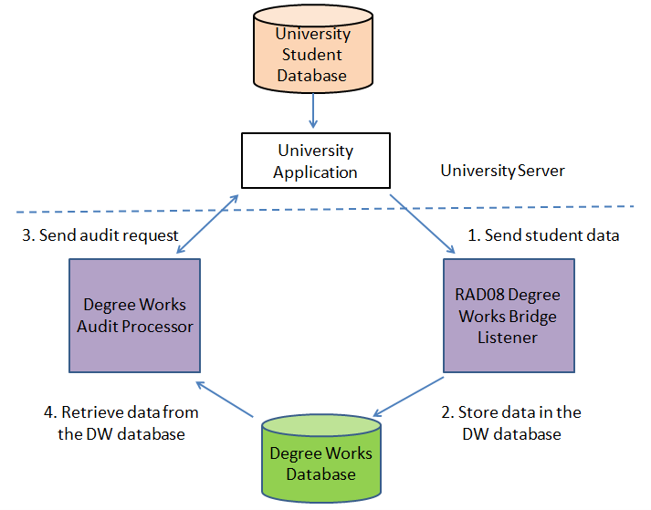
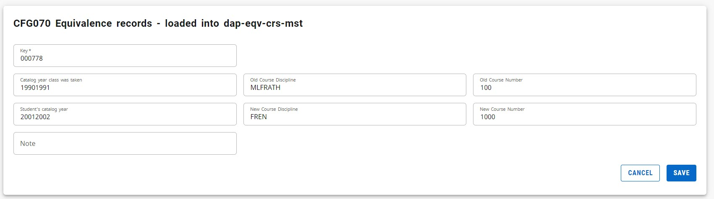
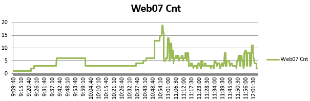
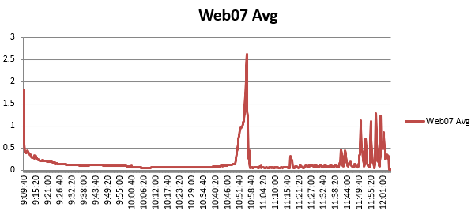
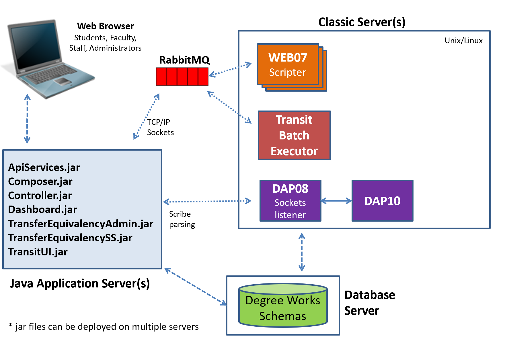
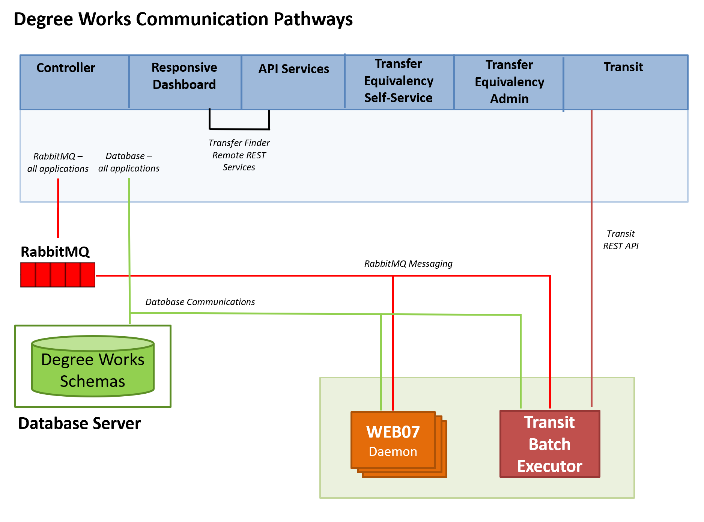
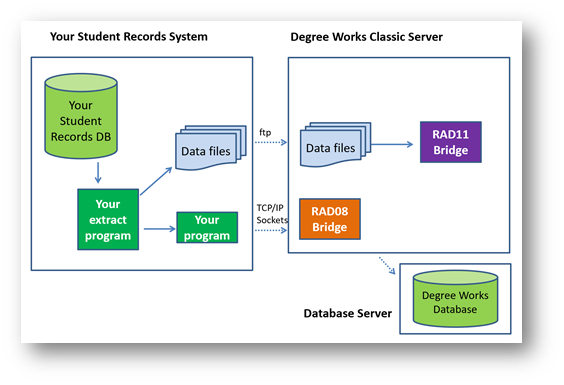

Technical Considerations
Review technical reference information as you work with Degree Works.
Parser Engine (DAP13)
The Parser Engine translates the requirements language into a format to be used for audit.
A Degree Works language consisting of certain keywords and syntactical rules is used to define institutional requirements into the computer. The institutional requirements are entered using Scribe, resulting in a series of requirement blocks. These blocks are then read by the Parser Engine. The Parser Engine validates the requirement blocks, assuring they are lexically and syntactically correct so that they may be properly interpreted by the Auditor Engine.
The Parser Engine is a program called DAPPARSE (DAP13) with the following characteristics:
- Resides on the host computer
- Accepts files of requirements (created with Scribe)
- Parses requirements, that is, translates the rules into syntax and remarks files
- Catches errors by validating disciplines and courses
- Returns error files if any errors are encountered during the parse
- Stores the syntax and remarks files on the host computer
- The parsed text is saved in the DAP database on the host computer
Scribe is the input mechanism for entering degree requirements. You can either enter the requirements yourself or contract with Ellucian to enter them for you. In either case, you must gather together the course catalogs and other documents that define your institution's degree requirements.
Requirement blocks
Degree Works stores requirements in requirement blocks. Blocks are user-defined and are likely to include degree, major, minor, and concentration, but may also include sets of requirements that are unique to an institution (e.g., community service). The blocks will not necessarily be hierarchical, and links among blocks may be established but are not required. The order of the blocks and the linkages between the blocks are determined by the user. There is no limit to the number of blocks that may be used to construct the requirements for a degree program.
Degree Works determines which blocks to use for a particular student by checking standard data on the student record for degree, major, minor, or concentration, or by client-defined data on the student record to indicate special activities or programs (e.g., ROTC). Blocks may be global as well (e.g., general education), so a link to student data may not be required.
Users are able to define the relationships among requirement blocks. Some will be sequential and hierarchical; some will be linked one to another (e.g., a concentration that cannot exist without an associated major); some will be conditional on student data that will determine blocks and point to other blocks (e.g., ROTC); and some will be isolated and required of all students regardless of their characteristics (e.g., a requirement that all students perform some kind of community service).
The requirement blocks may be defined for student attributes which may include school, college, department, major, minor, concentration, location, catalog year, and other client-defined characteristics. Custom sets of requirements by student may also be defined.
Unlimited courses are allowed within requirement blocks and unlimited nesting of requirements is allowed within a block.
The Scribe language for defining requirements lets users specify requirements by number of classes, by number of credits, or by a combination of both.
The definition of courses that can be taken to fulfill a requirement rule allows for the robust use of the wildcard (@) and also for use of a range operator (:) for course numbers. The wildcard (@) indicates one or more occurrences of any character.
The definition of that portion of the course key that indicates the course discipline may require the use of a delimiter. If no course delimiter is specified then Degree Works assumes discipline is an alpha code.
Example: ART1200 = ART
Example: ART1 200 = ART1
Example: ARTA200 = ARTA
Example: ART A200 = ART
Degree Works allows for non-course requirements. These requirements may include theses, performances, attendance at required events, work experiences and should be allowed individually, in groups by student characteristics, or by requirement block.
There is an unlimited text capability for annotating the requirement blocks. This text can be used, in whole or part, to provide readable reports where requirements are described. The text may include comments internal to the requirement block or may be text for use on user reports.
Degree Works provides a mechanism for pointing multiple catalogs to the same requirement block to avoid duplicating blocks when requirements do not change. This is accommodated by identifying the catalog year as a range of begin/end years rather than as a single year.
Auditor Engine (DAP14)
The Auditor Engine reads the student's academic data, assembles the requirement blocks, performs the audit, and stores the audit results in the DAP database.
The Auditor Engine reconciles student academic data from the student information system with the requirement blocks that have been built by users and then validated by the Parser Engine. The Auditor Engine actually evaluates the student course data against the appropriate requirement blocks, determining which academic requirements have been satisfied and which await completion. The audit results are stored in a database for reporting and review by the institutional staff.
- Resides on the host computer
- Accepts student data from the host (degree data, class data)
- Accepts "what-if" student data from the end-user
- Selects requirement blocks to be audited based on the degree data
- Processes the audit using the audit algorithm and site-defined configuration settings
- Stores the audit results in the Degree Works database on the host computer
From the student course record:
ID
school
college
course discipline
course number
credits
grade (letter and number)
grade points (grade number * credits)
term
course type (resident, transfer)
grade type (regular, pass/fail)
credits type (e.g., academic, clep, ap)
location (site of class)
transfer xref (local course equivalence)
class status (added, dropped, withdrawn, repeated)From the student academic record:
ID
school
degree(s)
catalog year
program(s)
catalog year
college(s)
catalog year
major(s)
catalog year
minor(s)
catalog year
concentration(s)
catalog year
specialization(s)
catalog year
liberal learning(s)
catalog year
non-course requirement data
(e.g., exams, performance, language, comments)
client-defined data (e.g., ROTC, religion)From the course catalog record:
course discipline
course number
catalog year
course equivalentsStudent data drives the Auditor Engine. There are standard characteristics that would be expected from any student database including degree, major(s), concentration(s), minor(s), catalog year(s). There may be client-specific characteristics that also drive the Auditor Engine, including (but not limited to) ROTC and religion.
Requirement blocks are assembled for processing by searching for blocks that match student attributes, looking first for the degree block. Blocks are matched first by ID. If no blocks matched by ID, other student attributes are combined to find blocks with matching attributes. Configuration settings control the processing of the requirements.
The Auditor Engine matches all resident courses, transfer courses, and non-course activities to the requirement blocks that have been assembled. Resident courses can be evaluated in the context of the selected course catalog, taking into account changes in course identifiers (e.g., recycled courses/AKA's by catalog year). Courses may be excluded from analysis by the Auditor Engine based on credit type or grade type, (e.g., academic bankruptcy classes or classes that do not carry academic credits).
Degree Works can handle transfer courses that do not map directly to a resident course but do map to a range of courses or to any course in a discipline. Direct equivalencies are not required, for example, transfer courses that are different in credit value, courses that are a series of two at one institution and three at another, or situations when course transfer will be allowed but no direct equivalent exists.
Exception handling in Degree Works lets the user lock-in evaluation decisions so that any subsequent running of an audit will not undo them. These decisions might include substitutions of specific courses for specific requirements, waivers of classes, exemptions from certain credits or requirements. Implicit in this is the option to "unlock" such decisions.
Degree Works supports an option to "split" credits from a single course and apply the remaining credits to other requirements. This is done either through requirement definition in Scribe or through a special kind of exception.
It is possible within Degree Works for the user to indicate that a requirement is complete using Exceptions even when the Auditor Engine cannot complete it through.
Degree Works allows variations in the processing of repeated or retaken courses. Courses that may be repeated for credit up to a maximum number of credits or courses must be counted appropriately, and those courses may or may not be limited to one per term. Courses that may not be repeated for credit but are repeated to improve a student's GPA can be identified and the GPA can be calculated correctly. The rules for applying credits from repeated classes and the rules for calculating GPA for repeated classes are site-defined within a set of repeat policies provided by Degree Works.
For purposes of evaluation, the Auditor Engine assumes all courses are applied to requirements in an exclusive manner, i.e., one class and the associated credits apply to one requirement. The nonexclusive application of classes can then be specified with the appropriate limits. The range of users' needs on this issue is great. It includes everything from "you can use anything wherever it fits" to "you can't use anything twice". The middle ground is "no more than 10 credits that applied toward the major requirements can also be applied toward minor requirements."
For the processing of student records against requirement data, the Auditor Engine uses a "best fit" algorithm. To accomplish this, the Auditor Engine may have to perform a number of passes through the course information. For example, on the first pass, all courses that fit a requirement are placed. Classes that can be applied to multiple rules then needed to be weeded out, keeping the "best fit". The fit is made against requirement blocks based on a client-defined order.
To identify those students nearing requirements completion, the Auditor Engine calculates the overall percent complete and percent complete for each requirements block (e.g. Major, Minor)
The Notes capability in Degree Works provides unlimited text capabilities for recording notations on the student's record. This includes, but is not limited to, special circumstances, advisor notes, reasons for exceptions, who made decisions and when.
Grade Point Average is calculated overall and by requirement block. The cumulative GPA calculated by Degree Works may be different from that calculated by the student system due to Degree Works ability to process repeats and courses that exceed limits. Users have the ability to exclude specific courses from block GPA calculations through the NOTGPA reserved word.
GPA calculations
All courses applied to each block are used to calculate the BLOCK GPA.
For the Degree Block (or the "starting" block), the GPA is calculated using all the courses applied to the audit (all sections). The Over-the-Limit section can be included or excluded from this calculation (see CFG020 DAP14 parameter) – but typically the setting is N so that these classes to not count.
The Major and Minor Block GPAs will be calculated using all courses that are or could be applied to this block. Courses that end up in "insufficient" or "fail" sections of the audit can be included or excluded from the calculation (see CFG020 DAP14 parameters for Major and Minor). Classes that could have applied to the Major or Minor block but ended up in the GENED block, for example, will not count in the Major or Minor’s GPA calculation – unless the class is being shared between blocks of course.
Transfer courses and GPA calculations
The CFG020 DAP14 parameter has values to control the application of transfer courses to the MINGPA and MINGRADE Scribe Reserved Words and their use in GPA calculations.
Redemption algorithm
After the auditor completes its primary pass through the blocks and rules, it enters one of the last phases of the degree audit process called the Redemption Algorithm.
If the class was removed from a rule by mistake, the algorithm works to make the correction. Either the class was removed from a rule and ended up in the fall-through (electives) section, or it was removed from a rule that is allowed to be shared with another rule which the class is also applying. A class is usually removed from a rule because too many credits/classes are applied to a rule and the auditor needs to reduce the number of classes that are applying. Later on, however, one or more of the classes that were kept on the rule may then have to be removed for other reasons (max qualifiers, class should be applied to another block, etc). It is this issue that the Redemption Algorithm attempts to correct.
Fall-through redemption
When evaluating fall-through classes, the auditor checks all the rules where each class was originally applied at the start of the audit process.
For each class, the auditor first examines fits that were on group rules. When a group rule is found that is not complete, the auditor reapplies this class and all other fall-through classes that also fit on this group rule. The auditor then reevaluates the group rules to check if another group(s) option should be kept instead of the one that was previously chosen.
After the group logic has been performed and if the group rule on which the class was reapplied was not chosen as the group rule to keep, the auditor continues inspecting the other fits for the class. The auditor starts with the best fit for the class and works its way down to the least-best fit – skipping all fits on group rules. After an incomplete rule has been found, the class is reapplied and no other rules are examined.
Each time a class is placed back on a rule, the Max qualifiers on that rule are reevaluated.
Nonexclusive redemption
After the fall-through classes have been evaluated, the auditor attempts to find classes that are not doing enough sharing based on the Nonexclusive (also referred to as ShareWith) qualifiers found throughout the blocks.
These classes already fit in one or more rules but are possibly allowed to fit in one or more additional rules. For example, the Major rules can share the GenEd block but HIST 1916 was removed from the GenEd for some reason. This step in the redemption algorithm attempts to discover that this sharing is allowed and also attempts to reapply the class to the GenEd block.
For this piece of the algorithm, the auditor steps through each class that is currently applying to at least one rule. The list of the original fits from the start of the audit process is then inspected. This list includes links between fits that indicate if sharing is allowed. The auditor uses the links to check if it can reapply one or more of the fits for the class. When a class is reapplied to a rule, the Max qualifiers on that rule are reevaluated.
After both the Fall-through and Nonexclusive parts of the Redemption algorithm are performed, the auditor performs another check on the header qualifiers in all blocks. In addition, each rule’s percent-complete is recalculated.
Too many classes on a rule
At the start of the audit each class is placed on all requirements where the class fits.
The auditor then attempts to figure out the best place to keep the class, removing it from the other requirements. In addition, when the auditor has found that too many classes are on a requirement it steps through a set of decision points to determine which classes to keep and which to remove. Each class is compared to each of the other classes on the rule with the auditor making a decision to keep or remove based on the decision points.
For example, let’s say the rule has classes A, B, C, D, and E but the rule only needs two of the classes. The auditor first compares A and B. If it turns out that B is the better class, based on the decision points, then A is marked as the one to remove. The auditor then compares A with C. If A is now considered to be the better class then C is marked as the one to remove. This continues on down the line until the last class is reached. At this point the auditor has determined which class it the one to remove. If it was determined that class D was the worst out of the list, for example, then D is removed and the cycle starts again comparing the remaining list of A, B, C, and E. Because only two classes are needed on the rule the auditor stops when there are two classes remaining. These two remaining classes are the best classes to keep on the rule.
Below are the decision points the auditor uses when comparing two classes on a rule. The auditor steps through each point finding that one of the classes is better than the other or finding that they are equal for the given point. If they are equal only then does the auditor move to the next decision point.
This is the list of decision points, in order. Based on each comparison, one class is kept and the other is marked for removal. The one that is marked for removal is then compared to the next class on the rule and so on. When a decision is made a code is recorded by the auditor and this code shows up in the Diagnostics Report. This information helps you the user figure out why the auditor made the decisions it did.
- Kept class in the including list (SQ).
- Kept class needed by MinAreas (SQ).
- Kept class needed by MinPerDisc (SQ).
- Kept class needed by MinSpread (SQ).
- Kept class that matches rule exactly (1 Class and 3 Credits in) (SQ).
- Kept class with Apply Here exception (li).
- Kept class that would have gone to fall-through instead of a preregistered class (preg).
For more information, see the Best-fit: fall-through mode flag in the UCX-CFG020 DAP14 topic.
- Kept in-progress class that would have gone to fall-through instead of a transfer class (intr).
For more information, see the Best-fit: fall-through mode flag in the UCX-CFG020 DAP14 topic.
- Kept transfer class that would have gone to fall-through instead of an in-progress class (trin).
For more information, see the Best-fit: fall-through mode flag in theUCX-CFG020 DAP14 topic.
- Kept completed class that would have gone to fall-through instead of an in-progress/transfer class (coti).
For more information, see the Best-fit: fall-through mode flag in the UCX-CFG020 DAP14 topic.
- Kept class that was completed over in-progress class (inpr).
For more information, see the In-progress vs Completed flag in the UCX-CFG020 DAP14 topic.
- Kept class that originally only fit this rule and no other (e1f).
- Kept class that currently fits this rule and no other (1f).
- Kept class that is reapplied here from fall-through through Redemption (fara).
- Kept class based on Decide option - if specified (d45).
- Kept class that has more header MIN qualifiers that may have need this class (HMinQ).
- Kept class based on the fit rank (firk).
For more information, see the Fit rank topic.
- Kept class over another class that was more likely to be removed because it was on Max rule qualifiers that were over their limit (rumx).
For more information, see the Best fit: max rules qualifiers check flag in the UCX-CFG020 DAP14 topic.
- Kept class that is less likely to be removed because of a header qualifier (dect).
- Kept class with fewer exclusive fits on other rules (exfi).
- Kept class with a higher match level (lvl).
- Kept class based on UCX-CFG020 TIEBREAK (tie).
For more information, see the UCX-CFG020 TIEBREAK topic.
- Kept class based on coin flip.
Match level
The match level is one of the decision points the auditor examines to help determine the best location for the class and also which are the best classes to keep on a rule that has too many classes.
On each requirement, the match level is calculated based on how the requirement is scribed.
- Exact match courses get a match level of 6; example: MATH 123
- Courses with a range get a match level of 5; example: MATH 100:199
- Courses with a wildcard number get a match level of 4: example: MATH 1@
However, these changes are then made to the match level:
- If an Apply Here exception is in place – level is set to 99
- If the course is in an Including list – level is set to 16; example: Including MATH 123
- If the course is in a plus-list list – level is set to 16; example: 2 Classes in MATH 123 + 124
- If the course is the only course listed - level is set to 16; example: 1 Class in MATH 123
- For each HighPriority on the block increase the level by 5
- For each HighPriority on the rule increase the level by 5
- For each LowPriority on the block decrease the level by 5
- For each LowPriority on the rule decrease the level by 5
- If the rule’s credit range starts with zero - level is set to 2; example: 0:9 Credits in…
- If the rule has the LowestPriority qualifier - level is set to -9876
- If the rule has a Force Complete exception - level is set to -99
The match level by itself does not determine which classes are removed or kept on rules that have too many credits and it does not determine the requirement on which a class is placed when the class fits on multiple rules, but is one of the decision points used.
Fit rank
The fit rank is used by the auditor to determine where a class should be placed when it fits on multiple requirements.
The auditor uses the decision points below to either increase or decrease the fit rank for a class on a particular requirement. The fits for a class are compared with each other to determine which is the best. A fit with a rank of 1 means it is the best fit; a rank of 2 means it is the 2nd best fit, etc. However, it is possible for two fits to have the same rank - meaning the two fits are equal when it comes to the decision points; neither fit is better than the other. A fit with a higher rank (lower number) will be kept before one with a lower rank (bigger number).
The auditor steps through these decision points in this order. Only when neither fit is determined to better or worse does the auditor proceed to the next decision point.
- Fit is on a rule with a Force Complete exception - worse fit because we can remove the class and the rule will still be complete
- Fit is on a StandAloneBlock - worse fit but only because we know all StandAloneBlock fits will remain so some other fit should be considered a better fit
- Fit has an Apply Here exception - better fit because the class must be applied here no matter what
- Fit is on a plus-list or including-list rule (and not in a group or a wildcard/range w/ multiple fits) - better fit because the rule explicitly says the student must take this class
- Fit is on a rule with another class that only fits here - worse fit because most likely this class will be removed from this rule in favor of the other class
- Fit's rule has a higher priority (per HighPriority, LowPriority, LowestPriority) - better fit because of the priorities specified
- Fit is only class on this rule - and does not have LowPriority - better fit because this rule needs this class; without it, the rule will be 0% complete
- Fit has a higher match level - better fit compared to the levels of other fits (which may be on a range or a wildcard requirement etc)
- Fit is on a group rule that may not be needed - worse fit because by definition a group rule is a list of options and this may not be the best option to take
- Fit is needed on the rule; removal would make rule incomplete - better fit because without this class the rule will not be 100% complete
Group processing
When classes are matching multiple rules within a group the auditor must determine which of the options to keep and which to discard.
The auditor uses the set of decision points below to make this decision. One important thing to keep in mind here is that the auditor does this group processing early on in the audit and thus it is making decisions before sharing has been resolved and before excess classes have been removed from requirements.
Here is the list of decision points to determine which groups to keep and remove:
- Keep the rule if it has an exception
- Keep the rule that has complete qualifiers (removing those rules with incomplete qualifiers)
- Keep the rule if it is more complete than another rule
- Keep the rule that has at least one completed class if multiple rules are incomplete because of in-progress classes
- Keep the rule that has a higher priority
- Keep the rule that is needed to satisfy the group's MinPerDisc qualifier
- Keep the rule whose classes have a higher average fit rank
- Keep the rule with fewer min/max qualifiers (since it a less complicated rule)
- Keep the rule whose classes have fewer fits on other rules (averaged over the number of classes on the rule)
Remove classes when too many fit on a rule
When too many credits/classes are applied to a rule, the auditor needs to figure out which classes to remove from the rule.
Example
3 credits in MATH 101, ENGL 101, PSYC 101, HIST 101
Label INTRO "One introduction-level class";
We will assume:
- These are all 3-credit classes
- The student has taken all 4 of these classes
- PSYC 101 is found out to be the best fit when comparing these four classes for this student
Again, we only need 3 credits. We take these 12 credits and ask, "which is the worst fit"? We start by comparing two classes to one another. The order in which these are applied is not important. For clarity's sake we will assume they are compared in the order Scribed.
MATH 101 is first compared with ENGL 101
We use the "Remove excess classes" decision-process (this is near the bottom of every Diagnostics Report) to compare these two classes. Inevitably, one is considered a "worse fit" than the other. Let's say ENGL 101 is the worse fit. MATH 101 is kept (for now), and ENGL 101 is then compared to PSYC 101. ENGL 101 is still worse than PSYC 101, then class C is kept (for now) and ENGL 101 is compared to HIST 101. Let's say HIST 101 is worse than ENGL 101. Now there are no more classes to compare.
So:
- MATH 101 is better than ENGL 101
- PSYC 101 is better than ENGL 101
- ENGL 101 is better than HIST 101
This means that HIST 101 is the worst. We remove it from the rule. We have not compared HIST 101 to PSYC 101, nor to MATH 101, but because of the transitive property, we can rely on the fact that MATH 101 is better than ENGL 101, and ENGL 101 is better than HIST 101. Therefore MATH 101 must be better than HIST 101.
Getting back to the example, now we have three classes still on the rule because we just removed only HIST 101. That's still too many credits. So we do it again. This time around we determine that:
- MATH 101 is better than ENGL 101
- PSYC 101 is better than ENGL 101
This means that ENGL 101 is the worst. We remove it from the rule.
That leaves us with MATH 101 and PSYC 101, and that's still too many credits. So we do it again. This time, we determine (again, based on the "Remove excess classes" decision-process) that:
- PSYC 101 is a better fit than MATH 101.
- PSYC 101 is better than MATH 101
So – MATH 101 is removed. Notice that this is the first time that MATH 101 was compared to PSYC 101, but because of the work that was done before this we can with confidence conclude that:
Based on the classes that originally fit on this rule, when comparing these classes – PSYC 101 is the best fit.
Note that decisions later in the audit process could impact this rule. Perhaps PSYC 101 fits on a different rule in this block or elsewhere in the audit. At that point (later in the audit process) a decision would have to be made: should PSYC 101 stay here on this "One introduction-level class" rule – or should it apply to a different fit? If it turns out that PYSC 101 should be placed on some other rule, the redemption step of the audit process will come into play reapplying one of those other 101 classes to this rule – but only if they themselves are not applying to some other rule.
Class evaluation on a rule
When too many credits/classes are applied to a rule, the auditor needs to figure out which classes to remove from the rule.
- Kept class in the including list.
Given a rule such as the following, the auditor will keep the included class because it is required.
5 Classes in MATH @ Including MATH 201 - Kept class with Apply Here exception.
If a class has an Apply Here exception, it will be kept on a rule before all others.
- Kept class needed by MinAreas.
- Kept class needed by MinPerDisc.
- Kept class needed by MinSpread.
Given a rule such as the following:
2 Classes in MATH @, CHEM @, BIOL @, PHYS @ MinSpread 2Assuming MATH 101, CHEM 101, and CHEM 102 are on this rule, the auditor will keep the MATH 101 class on the rule because it is needed to satisfy the MinSpread qualifier. The same approach is used for MinAreas and MinPerDisc as well.
- Kept class that matches the rule exactly (1 Class and 3 Credits in).
Given a rule such as the following:
1 Class and 3 Credits in ACCT 2@Assuming ACCT 201 for 1 credit, ACCT 202 for 2, credits, and ACCT 203 for 3 credits are applied, the auditor will keep ACCT 203 because it matches the requirement of 1 class and 3 credits exactly.
- Kept class that would have gone to fall-through instead of a preregistered class.
When CFG020 DAP14 Best-fit:fall-through mode flag is A or B, a completed, transfer, or in-progress class is given preference over a preregistered class at this step in the algorithm.
- Kept in-progress class that would have gone to fall-through instead of a transfer class.
When CFG020 DAP14 Best-fit: fall-through mode flag is A, an in-progress class is given preference over a transfer class at this step in the algorithm.
- Kept transfer class that would have gone to fall-through instead of an in-progress class.
When CFG020 DAP14 Best-fit: fall-through mode flag is B, a transfer class is given preference over an in-progress class at this step in the algorithm.
- Kept completed class that would have gone to fall-through instead of an in-progress/transfer class.
When CFG020 DAP14 Best-fit: fall-through mode flag is A or B, a completed class is given preference over an in-progress or transfer class at this step in the algorithm.
- Kept completed class and discarded in-progress class.
When the CFG020 DAP14 In-progress vs Completed flag is set to Y, a completed class is given preference over an in-progress class at this step in the algorithm. This usually works because in-progress classes that end up in fall-through can be reapplied to this rule by the redemption algorithm, if the rule still needs additional classes/credits. If the configuration flag is set to N, this step is skipped. Because setting this flag to Y alters the auditor’s best-fit algorithm, it is recommended that this flag be left as N so that this step is skipped. When this flag is set to Y, you are telling the auditor to make a different choice than it would normally make and thus it is unable to apply classes in the most efficient manner. Instead of using this flag, Ellucian recommends using the CFG020 DAP14 Best-fit:fall-through mode flag.
- Kept class that originally fit only this rule and no other.
If a class can fit only this rule and no other rule, it is kept over another class that has or had multiple possible fits.
- Kept class that currently fits this rule and no other.
If a class did fit on multiple rules at some point, but now fits only this rule, it will be kept over a class that is now still placed on multiple rules.
- Kept class that is reapplied here from fall-through through Redemption.
If a class was removed from all rules and placed in fall-through, but was then placed back onto this rule through redemption, it will be kept.
- Kept class based on Decide option, if specified.
Given a rule such as the following:
2 Classes (Decide = BESTGRADE) in MATH @, CHEM @The auditor will obey the DECIDE operator when deciding which class to keep if none of the above steps has helped make a decision.
- Kept class based on the fit rank. (See the Fit Rank section in the Diagnostics Report.)
When a class has multiple fits, its fits are ranked from 1-x, where 1 is the best place to keep the class, and x being the least best place to keep the class. So when comparing two classes that fit this rule, the fit rank of each on this rule is considered. If one of them has a fit rank of 2 on this rule and the other has a fit rank of 3 on this rule, the class with a 2 is kept because for that class, this is the better place to be kept.
- Kept class over another class that was more likely to be removed because it was on Max rule qualifiers that were over their limit.
When CFG020 DAP14 Best-fit: max rule qualifiers check is Y, a class is kept over another class that was more likely to be removed because it was on Max rule qualifiers that were over their limit.
- Kept class that is less likely to be removed because of a header qualifier.
If we have a header qualifier such as the following:
MaxClasses 3 in ART 108, 109, 2@And we have a rule such as the following:
1 Class in ART 108, 123, 145The auditor sees that ART 108 is part of a MAX qualifier and so has a greater chance of being removed from this rule. The other class (that is not part of any qualifier) is kept on this rule instead.
- Kept class with fewer exclusive fits on other rules.
Given a rule such as the following:
1 Class in BUS 106, 108;BUS 106 may fit on two other rules, both of which are not shared with this rule.
BUS 108 may fit on two other rules, but one of them is in a block shared with this block.
This means that BUS 106 has two other exclusive (not shared) fits, while BUS 108 has only one other exclusive fit (with the other one being shared). Thus, BUS 108 will be kept on this rule because there is a greater chance that BUS 108 will end up on this rule because it will either go here or on that other exclusive fit, while there is only a 1-in-3 chance that BUS 106 will end up on this rule.
- Kept class with a higher match level.
Given a rule such as the following:
1 Class in ANTHRO 266, 277 3@;Given the choice between keeping ANTRHO 266 or ANTRHO 304 on this rule, the auditor will keep ANTRHO 269 because it is specifically listed. However, if given the choice between ANTHRO 266 and ANTHRO 277, both are specifically listed, but if one of them is in-progress, its match level is actually slightly lower. In this case, the completed class will be kept instead of the in-progress class. In other words, in-progress classes always have a match level lower than they would have if they were completed.
- Kept class based on CFG020 TIEBREAK.
If all other steps cannot help the auditor make a decision about which class to keep, it uses the CFG020 TIEBREAK setting to figure out which class to keep. Usually this step decides which to keep because one is in-progress and one is completed, or one has a higher grade, or one has a higher course number, and so on. You can control whether the in-progress vs completed comparison is the first TIEBREAK check the auditor performs, but you need to alter the settings using Controller to configure it according to your requirement.
- Kept class based on coin flip.
In very rare situations, for example, when classes are repeated many times (such as PE and ART classes), the TIEBREAK checks do not help the auditor make a decision. At this point, the two classes in question are basically identical so the auditor makes a decision based on a randomly generated choice.
In-progress vs completed
When each step is evaluated, if both classes have equal values for that particular step, the auditor continues to the next step to see if it can find a reason to keep one class over another class. The auditor looks at many properties for the classes in question, and based on a CFG020 DAP14 configuration flag, it also checks to see if one of the classes is in-progress.
At step 11, which is used or ignored based on a CFG020 DAP14 flag, the algorithm directly examines whether a class is in-progress when deciding which rule to keep.
Percent complete calculation
A percent complete calculation is done for each rule, each block, and for the overall audit. It is this calculation that is used to mark a rule, a block, or the overall audit as completed.
Rule completeness
Rule completeness calculations can vary for different types or rules.
Course rule
At the course rule level, the calculation can take on some complex characteristics. Basically, the calculation determines the number of classes or credits that are required for the rule and then calculates the number of classes or credits applied to the rule. The percent complete is calculated from those two factors. If a course is applied to a rule but has not yet been graded (that is, it is in progress) and the rule would be completed with that course, the percent complete is reduced to 98%. In the Degree Works reports, we show these in-progress rules with a half-shaded circle signifying that the rule is complete with classes still in progress. If the student ends up failing the class, it will be placed in Insufficient, and the rule will end up with an empty box. There is no guarantee that the in-progress class will actually end up on the rule after it has been completed because other classes the student registers for may cause classes to be shifted around.
A rule qualifier that is not met will make the rule become 99% complete, given the required credits/classes were taken. A MinSpread or MinPerDisc qualifier that has not been met will cause the rule to be marked as 99% complete and will appear as a circle with an exclamation point on the Degree Works worksheet.
Noncourse rule
The percent complete is calculated based on the total number of noncourses required and the number of noncourses completed.
Subset rule
All the rules within the subset are counted in the block and overall percent complete calculations; the subset rule itself is ignored. The rules within the subset are used to calculate the completeness of the subset itself of course. If any subset qualifiers are not satisfied (and all the rules are complete) the percent complete is reduced to 99%. If all rules are complete but one or more contains an in-progress the subset will be considered 98% also – the subset will inherit this property of its child.
Group rule
The group that is the "most complete" is used as the basis of the percent complete calculation.
For example, a group rule states that 1 group is needed from a list of four groups.
1 GROUP in
(8 CREDITS IN BIOL 100:199) or
(8 CREDITS IN CHEM 100:199) or
(8 CREDITS IN PHYS 100:199) or
(9 CREDITS IN MATH 250 + CHEM 200 + CHEM 220)If 6 credits have been applied to the last group and 4 credits to the first group, the last group will be used to do the percent complete calculation.
If the first two rules have 4 credits applied the auditor will simply chose one given everything else equal between the classes in question. The class on the rule not chosen is freed up to be used on another rule or will be placed in fall-through.
Block and blocktype rule
The percent complete is based on the details of the rule in the referenced block. If the referenced block is not found in the audit, the percent complete is zero.
If/Then/Else Rule:
When the IF condition is FALSE and there is no ELSE rule, the IF statement is not included in the block percent complete.
When the IF condition is true, the calculation is based on the rule type in the THEN portion of the IF rule.
These rules are ignored when calculating the parent blocks and the overall completeness except in the case when the rule is zero percent complete.
Block completeness
The rules and block qualifiers determine the percent complete for each block.
All the rules within a subset are counted in the block percent complete calculation; the subset rule itself is ignored. If all rules within a block are complete but there are block qualifiers that are not satisfied, the completeness is reduced to 99%.
If the block is optional, then it is 100% complete. If it is not optional, you must add the number of rules at the first level and their total percent complete and then divide the total percent complete by the number of rules counted to get the completeness of the block. If all rules have been completed but there is a block header qualifier that is not satisfied, the percent complete is reduced to 99%.
Overall audit completeness
The overall audit percent complete is calculated from the rules within each block being used by the Auditor. If a rule has not been used (due to an IF statement, for example), it is not included in the calculation.
For each block without an OPTIONAL qualifier:
- Add the number of rules in the block.
Include only the parent rule for grouped rules; do not count each individual rule within the group. However, for subsets, all rules within a subset are counted in the calculation. The subset rule itself is ignored.
- Add the percent complete of each of the rules counted.
- Determine overall completeness by dividing the total percent complete by the number of rules counted.
If all rules are complete, but a block header qualifier remains unsatisfied, the overall percent complete is reduced to 99%.
The auditor includes block or blocktype rules in the calculation only if their percent complete is 0%. If any progress is made, those rules are excluded from the calculation.
Output options
Instead of showing the percent complete for each block, Degree Works maps each percent value to a graphic.
| Percent complete | Meaning | Visual display |
|---|---|---|
| 0 - 97 | Not complete | Empty circle |
| 98 | Complete (with classes in-progress) | Half-shaded circle |
| 99 | Nearly complete - see advisor | Circle with exclamation point |
| 100 | Complete | Checked circle |
Output Engine (DAP15)
The Output Engine reads the audit results from the database and formats the results into an XML or JSON document.
The Output Engine interprets the audit results and produces printed and online audit reports. Online viewing of audit results is accomplished using the Responsive Dashboard, which may be made available to Registrar, faculty, or students. It is through the Responsive Dashboard that exceptions and substitutions are entered in addition to advisor notes. Security to control "who accesses what" is enforced by the Responsive Dashboard.
- Resides on the classic server
- Extracts the requested audit from the Degree Works database
- Formats the audit results as an XML or JSON tree
The presentation layer takes in the XML or JSON tree and formats it using XSL or some other tool. In the Responsive Dashboard the react-js code creates the worksheets from the JSON audit. In batch mode FOP is used to convert the XML trees into PDF.
Custom data items
Custom data items are pieces of data that are not part of the standard data items passed from the student system to Degree Works. Custom data items are also data available for use in an IF expression in Scribe.
Custom data items are defined in SCR002. They can be used to display this data in the student data card or used in Scribe in an IF expression where a requirement varies based on student data. For more information, see the UCX-SCR002 Custom Data and Custom student data display topics.
For example, if Catholic students must take RLGN 300 and non-Catholic students must take RLGN 305, the requirement could be written as follows:
If (RELIGION = CA) Then
1 Class in RLGN 300 Label “Catechism”
Else
1 Class in RLGN 305 Label “Religion for the masses”;- Determine where the custom data item is stored in the student system. For example, RELIGION could be stored on a user-def field on the RAD-PRIMARY-MST or in the RAD-CUSTOM-DTL, which is the most logical place to store custom data.
- If you want to use the data item in an IF expression in Scribe, it must also be added to SCR002.
- Check SCR002 to see that the data item (for example, RELIGION) is not part of the custom data items. If it is, use the code from SCR002 in the IF expression.
- If the data item is not in SCR002, add the data item to SCR002. Choose a name for the data item that is from one to twelve characters long (for example, RELIGION). This name is the Degree Works name of the custom data item. It is usually upper-case. Find out the element number of the data item by looking in SYS999. For example, the element number for the Custom-Value is R323. Use Controller to add the new code to SCR002. Create a new record with a code of RELIGION or whatever name you want to use in Scribe. In the Description field, enter something meaningful (for example, Religious affiliation). The Data Element field should contain your value from SYS999, in this case R323. Because this value is coming from a Dtl record, you need to specify which record to read. This is done by filling out the Edit Element information. Here we want the record with RELIGION in the Custom-Code field, which is element R322. The Type field should be filled with EV and the value should be RELIGION.
NonCourse data items
NonCourse data items are pieces of data from the student system that are non-standard requirements, not a traditional course but something required for graduation.
They are defined in SCR003. Examples of NonCourse data items are music recital, art gallery show, chapel attendance, and placement exams. In addition to using NonCourse data items in Scribe, they can be added as requirements on a student's plan. For more information, see the UCX-SCR003 Noncourse Codes and Non-course topics.
1 NonCourse (RECITAL)
ProxyAdvice "At least one recital is required"
Label RECITAL "Recital";
1 NonCourse (MATHEXAM > 12)
ProxyAdvice "A math exam with a score better than 12 is needed"
Label MATHEXAM "Math exam";The above requirements will parse with errors if the NonCourse code in parentheses is not valid.
To add MATHEXAM or another piece of data as a NonCourse data item, follow the steps outlined below.
Step 1
Determine where the noncourse data is stored in the student system. For example, MATHEXAM might be stored in the RAD-CUSTOM-DTL, but often noncourses are stored in the RAD-NONCRSE-DTL. You can check the Student Data Report to verify where the data is being housed for your students.
Step 2
If the data item is not in SCR003 then add the data item to SCR003. Choose a name for the data item that is not longer than twelve characters, for example, MATHEXAM. This name is the Degree Works name of the noncourse data item. It should be upper-case. If the data is not on the RAD-NONCRSE-DTL, find out the element number of the data item by looking in SYS999. Use element number 0000 if the value is on the RAD-NONCRSE-DTL.
Use Controller to add the new code to SCR003. Add a new record and enter the Degree Works name for the data item, for example, MATHEXAM, as the key. In the Description field enter a description of the data item (for example, "Math Placement Exam"), followed by the element number in the Data Element field. The Edit Element, Type and Value fields are used if the value you are getting is from a “detail” record.
Advisee filtering
Non-student users such as advisors, department heads, and deans can be configured to have access only to their advisees or students in their department, school/level, or college.
This ability is particularly useful for users that have no assigned advisees or for allowing advisors access to all students in their department in addition to their advisees.
The student extract includes a hard-coded limit that restricts the number of advisors retrieved per student to 100. If a student in Banner has more than 100 advisors, only the first 100 advisor records will be extracted into Degree Works.
- ADFILTER
- SDSTUANY
- SDSTUMY
- SDFINDID
- SDFIND
Basic advisee filtering
Advisors are linked to their advisees by the ADVISOR rad_goaldata_dtl record. To configure advisors to have only their assigned advisees load in Responsive Dashboard, assign the SDSTUMY Shepherd key. When they log in to Responsive Dashboard, they will see a Select Student drop-down that contains all students with a rad_goaldata_dtl record, where rad_goal_code=ADVISOR and rad_goal_value is equal to the advisor's ID.
The SDSTUMY Shepherd key can be assigned explicitly user by user through Controller, or implicitly by user class in the core.security.rules.shpcfg Shepherd setting. It is also in the baseline SRNADV and SRNADVX Shepherd groups.
Department advisee filtering
Department heads can be assigned to a major or majors with their department, which will link them to all students with that major. To configure users to have only students in their department load in Responsive Dashboard, use Controller to add a department filter on the users' access records and select up to 10 majors for this filter type. Additionally, assign the ADFILTER Shepherd key. When they log in to Responsive Dashboard, they will see a Select Student drop-down that contains all students with a rad_goaldata_dtl record, where rad_goal_code=MAJOR and rad_goal_value is equal to the specified filters on the advisor's shp_user_mst.
The ADFILTER Shepherd key can be assigned explicitly user by user through Controller, or implicitly by user class in the core.security.rules.shpcfg Shepherd setting.
See the User Access topic for additional information on adding a department filter for a user.
School/Level advisee filtering
Deans or other users can be assigned to a particular school/level or schools/levels, which will link them to all students in that school/level. An example might be users who should be restricted to viewing students in the law school only, with no access to undergraduate students. To configure users to have only students in their school/level load in Responsive Dashboard, use Controller to add a school filter on the users' access records and select up to 10 schools for this filter type. Additionally, assign users the ADFILTER Shepherd key. When they log in to Responsive Dashboard, they will see a Select Student drop-down that contains all students with a rad_goal_dtl record, where rad_school is equal to the specified filters on the advisor's shp_user_mst.
The ADFILTER Shepherd key can be assigned explicitly user by user through Controller, or implicitly by user class in the core.security.rules.shpcfg Shepherd setting.
See the User Access topic for additional information on adding a school filter for a user.
College advisee filtering
Deans or other users can be assigned to a particular college or colleges, which will link them to all students in that college. An example might be users who should be restricted to viewing students in the College of Arts and Sciences only, with no access to students in the College of Education. To configure users to have only students in their college load in Responsive Dashboard, use Controller to add a department filter on the users' access records and select up to 10 colleges for this filter type. Additionally, assign users the ADFILTER Shepherd key. When they log in to Responsive Dashboard, they will see a Select Student drop-down that contains all students with a rad_goaldata_dtl record, where rad_goal_code=COLLEGE and rad_goal_value is equal to the specified filters on the advisor's shp_user_mst.
The ADFILTER Shepherd key can be assigned explicitly user by user through Controller, or implicitly by user class in the core.security.rules.shpcfg Shepherd setting.
See the User Access topic for additional information on adding a college filter for a user.
Advisee searching
To allow advisors and other users access to search by student ID, they can be assigned the SDFINDID Shepherd key. In addition to having their assigned advisees load in the Select Student drop-down, they will be able to search by ID in the Student ID field. Note that by default, they will be allowed to search only for their assigned advisees. If they enter an ID for a student that is not an assigned advisee, they will not be able to view that student. However, if users have been assigned the SDSTUANY Shepherd key, they will be able to search for any student, not just their assigned advisees.
To allow advisors and other users access to the Advanced search functionality, they can be assigned the SDFIND Shepherd key. In addition to having their assigned advisees load in the Select Student drop-down, they will be able to use Advanced search to further filter their list of assigned advisees. Note that by default, they will see only their assigned advisees in their search results. However, if users have been assigned the SDSTUANY Shepherd key, they will see all students in their search results, not just their assigned advisees.
SDFINDID and SDFIND are in the baseline SRNADV, SRNADVX, and SRNREG Shepherd groups. SDSTUANY is in the baseline SRNREG Shepherd group.
Examples
| Scenario | Assigned Shepherd keys and filters |
|---|---|
| Registrars who have access to and can search for any student | SDSTUANY, SDFINDID, SDFIND |
| Advisors who have access to their advisees only with no searching capabilities | SDSTUMY |
| Advisors who have access to their advisees and can search for their advisees only | SDSTUMY, SDFINDID, SDFIND |
| Advisors who have access to their advisees and can search for any student | SDSTUMY, SDFINDID, SDFIND, SDSTUANY |
| Political Science department heads who have access to students in that department only | ADFILTER with a department advisee filter for Political Science |
| Deans in the College of Arts and Sciences who have access to all students in that college with searching capabilities | ADFILTER with a college advisee filter for College of Arts and Sciences, SDFINDID, SDFIND |
| Deans in the graduate school who have access to all students in that school with searching capabilities | ADFILTER with a school advisee filter for the graduate school, SDFINDID, SDFIND |
| Business department heads who have access to students in that department but can also access any student’s record | ADFILTER with a department advisee filter for Business, SDFINDID, SDFIND, SDSTUANY |
| Advisors who are also department heads with access to their advisees and students in the Chemistry department | SDSTUMY, ADFILTER with a department advisee filter for Chemistry |
| Advisors who are also department heads with access to their advisees and students in the History department in addition to all students | SDSTUMY, ADFILTER with a department advisee filter for History, SDFINDID, SDFIND, SDSTUANY |
Degree Works bridge
The Degree Works Bridge is a mechanism for loading the Degree Works data structure with relevant data from the student database.
It has a well defined API-format that may be used by a university that is extracting data in a static fashion on a regular basis, or in a dynamic fashion on-demand. Degree Works also has a “native” integrated extract for selected student systems.
Degree Works static bridge
Student data is typically moved from the University’s student database by using the batch process RAD11.
This process can be scheduled to run on a regular periodic basis or can be launched on a manual basis. For more information about this process, please refer to the Degree Works bridge specifications topic.
Degree Works dynamic refresh
Although the recommended “best practice” is that the RAD11 static bridge be used to load student data in batch mode on a regular periodic basis, the RAD08 dynamic bridge may be used to load student data throughout the course of the day as events trigger the need.
RAD08 is a daemon process that listens for incoming bridge requests and saves the incoming data to the Degree Works database. When a request is sent to RAD08 and processed, subsequent run-audit requests will use the new data for the given student.
The University must write an application which issues the request for Refresh and sends it to RAD08 running on the Degree Works classic server.
The number of RAD08 processes that listen for and process bridge requests is controlled by the classic.daemons.rad08.count setting. This setting controls the number of children the parent RAD08 will create to listen for requests. Because the parent also listens for and processes requests, the total number of RAD08 processes will be the number of children plus one.
You may decide to URL encode the request before sending it RAD08. If URL encoding is being used, the WEB84_URL_DECODE flag in rad08job must be set. Setting this flag tells the WEB84 subroutine that RAD08 calls to decode the request when breaking out the name-value pairs contained within.
Banner sites using the "native" Degree Works Integrated Interface should not use this RAD08 process.

Dynamic Refresh process flow
- The University’s application sends request to Degree Works to store student data in the Degree Works database.
- Degree Works stores the student data in the Degree Works database.
- The University’s application sends a Web run audit request to Degree Works.
- Degree Works reads the student data from the Degree Works database, processes the audit and returns the audit report to the user.
Refresh Request
The refresh request is in name-value pair format and contains the following information:
| Name | Description | Length |
|---|---|---|
| ACTION | “REFRESH” for student data refresh | 07 |
| STUID | ID of the student for which the refresh is needed | 10 |
| RECCOUNT | Count of student records returned as REC name-value pairs | 04 |
After the header information, student data records must be sent in the refresh request.
| Name | Description | Length |
|---|---|---|
| REC | Repeated up to 256 times. Each REC name-value pair contains a record in Bridge-Interface-Format including a HEADER = 28 bytes, DATA = 972 bytes for a maximum total of 1000 bytes. | 1000 |
Example Refresh request (not all student records are shown):
ACTION=”REFRESH”&STUID=”123456”&RECCOUNT=0003&
REC=”123456 R010PRIM A 123456 Johnson, Joyce”&
…
REC=”123456 R020STUD A 123456 000000 20001”&
…
REC="123456 R050BIOG A 123456 542661234 19801231"&#
<$ENDMSG$>
An ampersand “&” separates each name-value pair, with an ampersand and pound-sign “&#” signaling the end of the data. The end of the entire response is signaled by “<$ENDMSG$>”. Each value may or may not be enclosed by quotation marks but quotation marks are required if the value may contain an ampersand. All data for a student must be bridged; do not bridge just the changed or new records.
To increase the efficiency of the data transfer over the network, trailing spaces from each REC name-value pair should be removed. If only the first 48 bytes contain actual data then the trailing spaces should be removed before placing the record in the REC name-value pair. Records must already be sorted by the bridge-indicator field (R010PRIM, R020STUD, etc) before sending them across the network.
Refresh Response
The RAD08 process returns a message containing status information concerning the processing of the refresh request. The name-value pairs are listed in the tables below. Note that “Length” is the maximum length in bytes.
The status information in the Refresh Response includes:
| Name | Description | Length |
|---|---|---|
| STATUS | OK or FAIL. Return FAIL is error encountered. | 04 |
| ERROR | Error number specifying error encountered; e.g., 4321. Omit if no error encountered. | 04 |
| ERRMSG1 | Error message string 1 describing error. Omit if no error. | 80 |
| ERRMSG2 | Error message string 2 describing error. Omit if no error. | 80 |
| DATACHANGED | YES if the Degree Works bridge has detected changes as of the last time the student was bridged – either through RAD08 or through the batch process. NO if the bridge did not detect data changes. | 3 |
Example Refresh Response:
STATUS=OK&ERROR=""&ERRMSG1=""&ERRMSG2=""&DATACHANGED=YES&ACTION=REFRESH&..."
STUID=123456&#<$FINISHED$>
The error number returned along with the error message strings will be returned. The error messages may say "Student ID number not found in student system" or "Database error occurred when writing student classes." An error is returned only if the data cannot be saved, is missing, or is not valid.
Refresh Thank You
After the University receives the status response a thank-you reply should be sent to the Degree Works refresh listener to indicate that the response has been read and it is ok to close the socket connection.
The thank-you message should be a simple “<$THANKYOU$>” value. When the Degree Works listener receives this message the current socket connection will be closed.
Equivalent course tracking
Equivalent courses are courses that changed discipline or number at some point in time.
These equivalents are important to Degree Works when a student is being evaluated against a catalog year that uses a different course-key than the course-key on the student's class. If Degree Works does not know about the equivalency, the rule will never be satisfied because the course-key on the student’s record does not match the course key Scribed in the rule. The solution to this problem is to set up the equivalence in the dap_eqv_crs_mst.
For example, John took ENGL 101 in the fall of 1990, took a year off and then returned to school as a member of the class of 1996. ENGL 101 changed to ENGL 115 in the fall of 1995. The course catalog requirements include ENGL 115 as a requirement, not ENGL 101 (which is now a different course). John's ENGL 101 course from 1990 should fulfill the ENGL 115 requirement of 1996.
In order for the Auditor Engine to automatically evaluate ENGL 101 as ENGL 115, an equivalent course record must be created. When created, the equivalent courses serve as a map of course number and discipline changes. The equivalent course record is not specific to a student. The equivalent course record is stored in the dap_eqv_crs_mst.
- This assumes your institution does not reuse course keys. A simple example of reusing course keys: MATH 103 was “Advanced Algebra II” during catalog year 19992000, then was changed to MATH 106. Then in 20002001 MATH 103 was reused to be a completely different course such as “Pre-Calculus I”. If your institution has reused course keys, do not attempt to use the dap_eqv_crs_mst as described here; please contact Ellucian for assistance in setting this up.
- The structure of the dap_eqv_crs_mst is:
class_dtl information (“When the course was taken”)
| TERM-CATALOG-YR | X12 | Degree Works catalog year (STU035) mapped from the term the class was taken. Mapped from term to catalog year through STU016. The character “@” can be used as a wildcard. Using the wildcard here tells the auditor that it does not matter when the student took the class. |
| OLD-COURSE-DISCIPLINE | X12 | Discipline from the course-key of the class taken (STU352). |
| OLD-COURSE-NUMBER | X12 | Number from the course-key of the class taken. The character “@” can be used as a wildcard (primarily used if there is a discipline change, for example, ENGL has changed to ENG). |
Course Catalog Information (“When the equivalency exists”)
| TARGET-CATALOG-YR | X12 | Degree Works catalog year (STU035) mapped from the student's catalog year. The character “@” can be used as a wildcard. Using the wildcard here tells the auditor to apply this equivalency to all catalogs. |
| NEW-COURSE-DISCIPLINE | X12 | Discipline from the course-key in the target catalog year – what the discipline is in requirements written for the target catalog year. |
| NEW-COURSE-NUMBER | X12 | Course number from the course-key in the target catalog year – what the course number is in the requirement block written for the target catalog year. The character “@” can be used as a wildcard (primarily used if there is a discipline change, for example, ENGL has changed to ENG). |
Set up equivalent course tracking
Setting up equivalent course tracking is done through Transit and Controller.
- Update all prior catalogs with the change.
- Discipline code change - find all instances of the discipline in the prior catalogs and change it to the new discipline code.
- Specific class change - find all instances of the class in the prior catalogs and change it to the new class.
- Add the equivalency to the dap_eqv_crs_mst.
- Bridge the records using the R190DEQV layout and RAD11 - RAD Bridge Processor. For more information, see Bridge Interface Format. You can bridge the entire contents of the dap_eqv_crs_mst or bridge only new records as needed.
- Use Controller to maintain your equivalences in CFG070. You should then run the SYS03 - Copy CFG070 to dap_eqv_crs_mst job in Transit. Be careful about using both the bridge method and CFG070 to maintain equivalences.
Discipline code change example
The school has decided to change the course discipline code from ENGL to ENG. The school will either manually change the requirement blocks referencing ENGL to say ENG, or the school will set the CFG020 DAP13 Process Equivalences flag to Y and run DAP16 to reparse all of the blocks. With this flag set to Y, the underlying block requirements will now say ENG instead of ENGL.
For example, “1 Class in ENGL 101” will be changed to “1 Class in ENG 101”. This will happen through the laborious manual process or by running DAP16 with that flag enabled. Though the changes will not be reflected in Scribe when the block is viewed.
However, the auditor will now not apply any ENGL 101 classes to this rule. Setting up dap_eqv_crs_mst records is needed to tell Degree Works to apply ENGL classes against ENG rules.
- Update prior catalogs with the new course number.
In Scribe, locate any instance of ENGL and change it to ENG for every catalog – or rely on DAP16 with the CFG020 DAP13 Process Equivalences flag set.
- Add an entry to CFG070 in Controller.
Degree Works will apply all ENGL courses against ENG requirements.
- Catalog year class was taken = @
- Old Course Discipline = ENGL
- Old Course Number = @
- Student’s Catalog Year = @
- New Course Discipline = ENG
- New Course Number = @
Course number change example
The school has decided to change the course number for the Math Statistical Analysis class. In the past, it had been listed as MATH 176. From now (catalog year 20042005) on, this class will be listed as MATH 200. The current catalog now contains rules such as “1 CLASS in MATH 200”. Without a dap_eqv_crs_mst, Degree Works would not apply MATH 176 to the MATH 200 rule. With the dap_eqv_crs_mst, you are telling Degree Works that the classes are really the same and thus MATH 176 can apply to the MATH 200 rule.
- Update prior catalogs with the new course number.
In Scribe, locate any instance of MATH 176 and change it to MATH 200 for every catalog – or rely on DAP16 with the CFG020 DAP13 Process Equivalences flag set.
- Add an entry to CFG070 in Controller.
Degree Works will take every instance of MATH 176 and treat it as MATH 200.
- Catalog year class was taken = @
- Old Course Discipline = MATH
- Old Course Number = 176
- Student’s Catalog Year = @
- New Course Discipline = MATH
- New Course Number = 200
CFG070 Equivalence course records
The CFG070 Equivalence Course Records table contains the equivalence records for mapping historic course keys to current course keys.
This table provides an interface for maintaining the equivalence course records for use in Degree Works. Each record consists of a 30 byte key followed by a number of 12 byte fields for defining the course equivalence. The key can be any alphanumeric value but must be unique for each record. Wildcards can be used in the catalog year and course number fields. This is useful for changing course keys across multiple catalog years or for changing discipline codes globally. In the following example, MLFRATH 100 taken in the 19901991 catalog year became FREN 1000 for students with a catalog year of 20012002.

The Note field is a 50 byte free text field that you can use for internal documentation. This information is not used in audits and is not displayed on any of the audit reports.
You can create new equivalence course records using the Controller data entry screen. New CFG070 records created in Controller are not available for use in Degree Works until they are loaded into the dap_eqv_crs_mst table in the database. To load new records into the database, you should manually load the records by running SYS03 - Copy CFG070 to dap_eqv_crs_mst in Transit.
Process equivalences into scribed courses
When course numbers change (HIS 206 was renamed HIST 212) changes need to be correctly applied to Degree Works.
We have to make sure students taking the old course or the new course get credit for the particular requirement – and we need to make sure that students get the correct advice – which is to take the new course number. Scribers may go through historic blocks and make alter the requirements to list the new course number instead of the old one – but this can be a daunting task if there are a lot of changes.
Degree Works can alter the requirements listing the old course key and change it to the new course key based on the equivalence records that are in place.
To enable this feature you must do the following:
- Set the CFG020 DAP13 Process Equivalences flag to Y.
- Run DAP16 in Transit to reparse all of your blocks
Each time the equivalence table changes you should rerun DAP16 to pick up the changes and apply them to your rules.
With these dap_eqv_crs_mst records in place in CFG070:
| Catalog year taken | Old course discipline | Old number | Student's catalog year | New course discipline | New number |
|---|---|---|---|---|---|
| 2002 | DANI | 1 | @ | ANTH | 100 |
| 2003 | DANI | 1 | @ | ANTH | 100 |
| 2004 | DANI | 1 | @ | ANTH | 100 |
With this block in place:
BEGIN
;
1 Class in DANI 1
Label "My rule 1";
END.
The Diagnostics Report shows the Requirement with the equivalence information. The Requirement line shows what the rule looks like after the conversion has taken place and also the original course that was scribed. For example:
- Although the Diagnostic Audit is showing the equivalence information in the Requirement line, our standard Registrars Report worksheet will not.
- Requirements containing ranges or wildcards such as the following will not be processed following these rules. These requirements will have to be taken care of manually at this time.
5 Credits in MATH 1@ 5 Credits in MATH 100:199
Simple scenario 1
Course A was offered from 2002 to 2005, but then in 2006 course A was renamed B.
These CFG070 records were built:
| Catalog year taken | Old course discipline | Old number | Student's catalog year | New course discipline | New number |
|---|---|---|---|---|---|
| 2002 | A | 001 | @ | B | 001 |
| 2003 | A | 001 | @ | B | 001 |
| 2004 | A | 001 | @ | B | 001 |
| 2005 | A | 001 | @ | B | 001 |
The 2002 scribed block looks like this:
1 Class in A001, X001, Y001Problem:
Under normal operations we that the student has taken A in 2002 and we rename it to B before trying to apply it to rules. When doing this against this block B does not fit because the rule still says A. For some schools it is a lot of work to go through and fix all of their rules to list the current course name.
Solution:
When saving the blocks the parser will make this conversion.
1 Class in A001, B001, X001, Y001This change will be made to the saved syntax tree that is then pulled into the auditor.
When auditing a student who took this course when it was named A, the normal processing will take effect and A will be renamed to B and thus will apply to this rule. Students taking the course after 2005 will take it as B and it will apply normally also.
Complex scenario 2
A changed to B but then B was changed to C
These CFG070 records were built:
| Catalog year taken | Old course discipline | Old number | Student's catalog year | New course discipline | New number |
|---|---|---|---|---|---|
| 2002 | A | 001 | @ | B | 001 |
| 2003 | A | 001 | @ | B | 001 |
| 2004 | B | 001 | @ | C | 001 |
| 2005 | B | 001 | @ | C | 001 |
Yes, A was renamed to B but then B was renamed to C.
The 2002, 2003, 2004 and 2005 blocks should all list the rule using C:
1 Class in A001 C001, X001, Y001
1 Class in B001 C001, X001, Y001This should be handled as required.
Complex scenario 3
A (Intro to Art) was renamed to B but then A was reused for some other course (Sculpturing). When this happens, the logic is complicated. We will be looking up the course in the CFG074 table to find out if the course was reused. If the course was reused the parser will skip the processing of this course - these reused courses will have to be rescribed manually.
Process cross-listings into scribed courses
There are two options when dealing with scribing of cross-listed courses in Degree Works.
- Manually list all of the cross-listed pieces together in rules using Scribe:
1 Class in MATH 101, PHIL 101, STAT 101; - Manually list just one piece of a cross-listed set using Scribe rules. Use CFG073 plus the parser to automatically insert the rest of the cross-listed set inside curly braces {Hide…}:
1 Class in MATH 101 {Hide PHIL 101, STAT 101};
To enable the second option, follow these steps:
- Set the CFG020 DAP13 Process Cross-Listings flag to Y.
- Set up CFG073. For the example above, two records would need to be added:
MATH101 would be added as the UCX Key to CFG073 with the UCX Value of PHIL101. MATH101 would be added as the UCX Key to CFG073 with the UCX Value of STAT101.
For non-Banner clients, CFG073 must be loaded manually using Controller or inserted from a file containing records formatted correctly for CFG073 using the Bulk option of Controller.
For Banner clients, CFG073 CAN be automatically loaded by the Banner Equivalencies Extract (RAD38) process, if desired, or it could be manually loaded. To automatically load CFG073:- Set the CFG020 BANNER Cross List in SCREQIV to Y.
- Use Transit to launch RAD38 – the Banner Equivalencies Extract.
CFG073 will be generated automatically if any cross listed course records are found in the SCREQIV table.
- Use Transit to launch DAP16 to reparse all blocks.
Each time the CFG073 cross-listings table changes, DAP16 should be run to pick up the changes and apply them to your rules.
With these cross-listing in place in CFG073:
MATH 101 cross-listed with PHIL 101
MATH 101 cross-listed with STAT 101
MATH 102 cross-listed with PHIL 102With this block in place:
BEGIN
MaxCredits 9 in MATH 101, 102
;
5 Credits in MATH 101 , 102
Label "My rule 1";
END.The Diagnostics Report displays the cross-listed courses in three different places:
- The Header Qualifiers line shows the MaxCredits qualifier with the cross-listed information.
- The advice (Still Needed) line shows the cross-listed information.
- The Requirement line shows what the real rule looks like, which is different from the Scribed block above.
- Although the Diagnostics Report is showing the cross-listed information in the advice, the standard Student View worksheet will not.
If the same type of changes are to take place whenever PHIL 101 is scribed, CFG073 records must be created pointing PHIL 101 to MATH 101 and PHIL 101 to STAT 101. The same goes for STAT 101. In all, six records would be needed to cover these three courses in the cross-listing set.
- The parser will not be creating header qualifiers to make sure the student will only get credit for the course one time in case they are allowed to register for it under the two different names. A header qualifier like this will not be created. It should be handled by the registration system.
MaxClasses 1 in MATH 102, PHIL 102 - These qualifiers may be added manually, if required. Requirements containing ranges or wildcards such as the following will not be processed following these rules. These requirements will have to be taken care of manually at this time.
5 Credits in MATH 1@ 5 Credits in MATH 100:199
Freeze audits
Audits can be frozen so they are not deleted when the audit history count is exceeded.
The CFG020 DAP14 Audit History Count setting controls how many audits to keep per student. When a new audit is processed, Degree Works will delete the oldest audit to ensure this history count is obeyed. However, there are certain times when you want to keep particular audits that do not get deleted you can freeze those audits.
Enabling audit freezing
Users can choose to enter a description on audits but not freeze them, or vice versa. However, typically your users may want to only enter a description when freezing audits. Ellucian recommends establishing a best practice for your institution.
Only those users who have been given the AUDFREEZ key will be allowed to freeze audits. Additionally, only users with the AUDDESCR key will be able to enter a description on audits. By default the REG, ATHL, and AID user classes are given these keys. You can modify the core.security.rules.shpcfg Shepherd setting to add or remove these keys on user classes as needed.
Enabling audit freezing on What-If audits
For what-if audits the keys are WIFFREEZ and WIFDESCR to allow the freezing of audits and to allow users to enter a description. Neither of these keys are assigned to any user classes by default. Additionally, saving of what-if audits must be enabled by setting the CFG020 DAP14 What-if History Count value to a number greater than or equal to 01. When this setting is blank or 00 no what-if audits are saved and thus none can be frozen.
Setting up freeze types
When an audit is frozen, the user specifies a freeze type. The freeze type not only specifies that the audit is frozen but also gives an indication as to why is was frozen. The AUD032 table contains a list of the valid freeze types that your institution is using. This table is initially installed with a set of example freeze types, but you can delete, modify, and add to this list as needed. Each freeze type is associated with up to 10 user classes. Only users in those user classes will be allowed to freeze audits with the given freeze type.
Entering a freeze type and description
When viewing the most recent audit on the Worksheets tab, users with the ability to freeze audits or enter descriptions are given the option to do so. The select box of freeze types is restricted to those set up in AUD032. However, if the current freeze type on an audit is not associated with the current user’s user class, the freeze type will still appear (selected) in the select box. This allows the user to see the current freeze type and optionally change it to another freeze type.
The user can enter a description without choosing a freeze type and can also enter a freeze type without entering a description – both fields are optional.
On any of the Worksheet tabs, in the View historic audit drop-down, you can see who froze the audit and the as of date the audit reflects, which may differ from the date the audit was frozen. You can also modify the description and freeze type as needed. Additionally, the description and freeze type are at the top of the audit itself, so users who do not have the ability to freeze audits or enter a description can see this information.
A user with the appropriate permission keys can delete any audit, whether it is frozen or not, after it has been selected from the View historic drop-down.
Freezing audits in a batch
Transit users may freeze audits and enter a description on audits when running DAP22 batch audits. The list of freeze types that appear in Transit are those associated with the REG user class in AUD032. If you want all freeze types to appear in Transit, then ensure that all freeze types have REG listed as one of the user classes in Controller.
Deleting old audits
Frozen audits do not count against the history count value. The Audit History Count may be set to 03, for example, but a student may have several frozen audits and three non-frozen audits. There is no limit on the number of frozen audits that can be kept for each student. For this reason, it is important to limit the number of frozen audits that persist in your database for long periods of time. Audits take up substantial space in your database and freezing many audits that never get deleted will cause you to run out of space eventually. If you do decide to freeze audits, you can consider reducing the history count value to 01 or 02 to help reduce the number of audits saved.
You can have audits frozen with a freeze type of DEGAWD (Degree Awarded), for example, that you do not want to delete but you may have frozen others that you only wanted to keep for a year or two. You can use AUD02 in Transit to delete frozen audits by specifying a freeze-type, or you can delete non-frozen audits. In either case, an audit date is required so you are deleting only audits created on or before that date.
Multi-entity processing in Degree Works
Degree Works can be deployed across many campuses or entities while specifying particular types of data that ought to be shared among those entities.
Some institutions need to deploy Degree Works across multiple degree-granting campus entities within their institution. Other institutions serve constituents at only one campus and have no need to share certain information beyond a single entity. Degree Works is configurable so that institutions may elect to use only one instance of Degree Works at a single entity or campus, or deploy Degree Works services across many campuses or entities while specifying particular types of data that ought to be shared among those entities. Configuration to specific institutional needs allows sites to manage both data and system administration in a manner best suited to their particular needs. Only students who have a degree record for a particular college can be accessed and processed within the Degree Works web interface.
Recognizing that terminology in Higher Education can be ambiguous, understand that in the context of multi-entity processing, we are using "campus" to mean a separate, degree-granting institution which is either "all by itself" (Entity=1) or part of a district or system of sister institutions (Entity=many) which has a central administrative arm and installation of Degree Works. We recognize that "campus" can also mean "location", where the campus is a satellite venue for the larger degree-granting institution. In this discussion of multi-entity processing do not think of a "campus" or "campus entity" as simply a locale or the case study will be confusing.
There are different reasons why an institution would opt for multi-entity processing among multiple campuses. For multi-entity institutions, sharing data enables campuses to use commonly accessed information, thereby reducing the disc space that database tables require. Sharing Oracle databases among entities conserves memory needs on the system and reduces the level of redundant system administration needed for managing the application. Degree Works has the ability to support multiple campuses sharing a variety of academic and biographic data, in addition to the sharing of academic requirements among campuses. Degree Works may be configured to share certain tables among some or all campuses, and also allows certain tables to be configured uniquely for individual campus entities.
Institutions supporting only one campus or entity need not configure anything special for their campus installation or updates; they may use default values delivered with the product.
Institutions supporting multiple campuses or entities have several options when activating multi-entity processing. These options include:
- Individual Oracle database schemas for each campus entity with unique data for each campus (that is, nothing shared)
- Individual Oracle database schemas for each campus entity with some shared data used by some or all campus entities, along with some unshared campus-specific data
- A commonly shared Oracle database schemas with common access to all data by each campus entity
The Multiple-campus case study focuses on scenario #2 in which an institution deploys individual databases with some shared data and some unique data. The case study is intended to familiarize institutions with some of the configuration issues to consider before adopting multi-entity processing for multiple campuses. For more information, see the Multiple-campus case study topic.
Multiple-campus case study
In this case study, the Eloyce Community College District is comprised of four campus entities: North College, South College, East College, and West College.
Students can attend any of the four campuses sequentially or simultaneously, with classes taken at any campus yielding in-residence credit. The four campuses share a common course numbering system with similarly named courses also having common course content. Not every class is offered at every campus entity. It is assumed that students will generate audits at those district institutions at which they are matriculated, degree-seeking students. In such cases, students will have one or more rad_goal_dtl (Degree records) for each campus at which they have declared an intended degree.
To reduce database maintenance while giving students and advisors optimum Degree Works services, Eloyce plans to configure Degree Works to share as much data as possible between the four colleges or campus entities. Data to be shared includes the course catalog, all student academic data, and UCX validation codes and literals. Each campus entity, however, will maintain its own set of degree requirements and wants the Degree Works audit worksheets to reflect each campus’ needs and preferences. To accommodate sharing, Eloyce will want to allow common access to most of the RAD database tables. To assure individual maintenance of degree requirements and other audit needs, Eloyce will want to use the DAP database tables in the proper configuration for individual campus entities.
RAD tables
The student data imported from Eloyce’s student system is housed in these tables:
rad_primary_mst
rad_student_mst
rad_noncrse_dtl
rad_test_dtl
rad_report_dtl
rad_attr_dtl
rad_applicnt_dtl
rad_previnst_dtl
rad_class_dtl
rad_custom_dtl
rad_transfer_dtl
rad_term_dtl
rad_aid_dtlConfiguring Degree Works to share these tables guarantees that all campus entities use the same set of classes, test scores, and other academic information for each student, regardless of the campus or campuses at which they matriculate. Eloyce does want to assure accurate auditing of academic information against the program requirements for each campus entity, but also wishes to conserve table maintenance and discspace. For that reason, it will share some RAD table information among campuses, but it will not share all institutional data.
To achieve the desired outcome, the District will not share the Degree records. These tables are struck through on the above list to demonstrate that it is not to be shared. The Degree record tables contain a student’s degree, major, minor, catalog-year, and so on and really need to be linked to the degree-granting campus entity. In other words, this table should be unique to each campus entity or college so that if a student only matriculates at North College, the other campus entities would not run audits or review data for that student. If the student is matriculated at both the North and South campuses, each of those entities will have their own degree record for that student, and an audit may be generated for that student at each of those campuses.
Each campus will bridge data from the student system that includes any coursework from the District campuses, but each campus will only evaluate data for matriculated students with declared degrees at its campus. North College should be sending to Degree Works all of the students who have matriculated at North regardless of where within the four colleges students have actually taken coursework. A student matriculated at North College may have taken classes at North, South, East, and West, but only the student system extract for North should be pulling this student’s Degree records data. North will also extract the coursework taken at all four campuses. Extracts generated at South, East, and West will not extract this student at all, because the student is not a matriculated degree-seeking student at those campuses and the student’s Degree records are not shared.
Some students may be matriculated at more than one campus, in which case their student data will be bridged to each matriculated campus and available for auditing. When extracts are run at each campus where a student is matriculated, that student’s data will be extracted multiple times, but their shared data will only exist one time in Degree Works, while their unique campus Degree records will exist for each campus.
DAP tables
As stated above, DAP database tables will be configured to reflect the unique degree requirements for each campus. For example, the humanities requirement at North College is similar but somewhat different from the humanities requirement at East College. Eloyce will configure Degree Works so that the requirements tables are not shared among the campuses, and so that each entity has its own table.
dap_req_block
dap_req_link_dtl
dap_req_crs_dtlLikewise, degree audits need to be retained by each campus entity individually, and therefore audit tables are not shared. Additionally, the exceptions and notes associated with those audits are not shared.
dap_student_mst
dap_except_dtl
dap_note_dtl
dap_note_txt_dtl
dap_audit_dtl
dap_audit_treeWhen using the Curriculum Planning Assistant tool the audits are extracted to the tables noted below. These tables would also be unique to each campus entity and remain unshared.
dap_result_dtl
dap_resclass_dtl
dap_resnoncr_dtlAcademic plans for students are linked to their academic requirements. That also dictates that planner tables should not be shared and that each campus entity would maintain unique planner data.
sep_plan_*
sep_tmpl_*For more information, see the Multi-entity processing database tables topic. Note that the list of UCX_* tables can be reviewed using Controller.
Multi-entity processing database tables
Several Degree Works tables may be configured for multi-entity processing at multiple campuses when creating the database.
The Degree Works database is created using the dbbuild script. For more information, see the dbbuild script topic. Be sure to consult with Ellucian staff to configure your share.xml and before running dbbuild.
This is a list of Degree Works tables that may be configured by institutions wishing to use multi-entity processing at multiple campuses. Sites considering use of multi-entity capabilities may want to schedule a technical consulting call with Ellucian to review their plans and particular needs before activating these features.
| Table name | Description |
|---|---|
| dap_applicnt_mst | Transfer Equivalency student applicant record |
| dap_audit_dtl | Stores a degree audit |
| dap_audit_tree | Stores the body of the degree audit - a true BLOB |
| dap_eqv_crs_mst | Stores a college equivalence records |
| dap_except_dtl | Stores audit exceptions/waivers |
| dap_map_cond_dtl | Transfer Equivalency articulation data |
| dap_mapping_dtl | Transfer Equivalency articulation data |
| dap_next_id_mst | Sequence numbers for scribe blocks, audits, and so on |
| dap_note_dtl | Stores notes for a student – when created, by whom, and so on |
| dap_note_txt_dtl | Stores the actual note text |
| dap_req_crs_dtl | Stores list of courses referenced in a scribe block |
| dap_req_link_dtl | Stores links from one scribe block to another |
| dap_req_block | Stores primary and secondary tags for each scribe block |
| dap_resclass_dtl | Stores audit CPA data |
| dap_resnoncr_dtl | Stores audit CPA data |
| dap_result_dtl | Stores audit CPA data |
| dap_student_mst | Stores date/time of last audit and locking information |
| dap_transfer_dtl | Transfer Equivalency articulation data |
| dap_undecide_dtl | Transfer Equivalency articulation data |
| rad_aid_dtl | added in DW 4.0.0 |
| rad_applicnt_dtl | Transfer Equivalency application data |
| rad_attr_dtl | Stores attributes about each class the student has taken - transfer_dtl and class_dtl |
| rad_class_dtl | Stores in-residence classes taken - historic and in-progress |
| rad_course_mst | Stores courses offered by the institution: title, credits, and so on |
| rad_crs_attr_dtl | Stores attributes about each class offered by the institution - associated with the course-mst |
| rad_custom_dtl | Stores other information about the student need by scribe requirements |
| rad_ets_mst | Transfer Equivalency list of transfer schools |
| rad_goal_dtl | Stores school, degree, student level, catalog year information |
| rad_goaldata_dtl | Stores fields of study, such as major, minor, concentration, and advisor information |
| rad_log_dtl | Log of bridge activity |
| rad_next_id_mst | Next-id information for courses, students, and ETS |
| rad_noncrse_dtl | Stores student non-course data |
| rad_previnst_dtl | Stores student’s previous degree information |
| rad_primary_mst | Stores student name |
| rad_report_dtl | Stores other student data that needs to appear on the worksheet |
| rad_student_mst | Stores the student’s active term |
| rad_swap_id_dtl | Stores a record of when a student ID was changed from one value to another through the bridge |
| rad_term_dtl | Stores student cum GPA/credits |
| rad_test_dtl | Stores student test score information |
| rad_transfer_dtl | Stores transfer class information |
| rad_hash_mst | Stores a record of what was loaded for this student; works with all rad_*_hsh tables |
| rad_aid_hsh | Stores hash value for the aid_dtl data |
| rad_applicnt_hsh | Stores hash value for the applicnt_dtl data |
| rad_attr_hsh | Stores hash value for the attr_dtl data |
| rad_class_hsh | Stores hash for the class_dtl data |
| rad_custom_hsh | Stores hash for the custom_dtl data |
| rad_goal_hsh | Stores hash for the rad_goal_dtl |
| rad_goaldata_hsh | Stores hash for the rad_goaldata_dtl |
| rad_noncrse_hsh | Stores hash for the noncrse_dtl data |
| rad_previnst_hsh | Stores hash for the previnst_dtl data |
| rad_report_hsh | Stores hash for the report_dtl data |
| rad_student_hsh | Stores hash value for the primary (name), biog (birthdate and SSN), and student (active-term) data |
| rad_term_hsh | Stores hash for the term_dtl data |
| rad_test_hsh | Stores hash for the test_dtl data |
| rad_transfer_hsh | Stores hash for the transfer_dtl data |
| shp_group_mst | Loaded from SHP077; specifies default keys/access for each user class |
| shp_log_dtl | Stores web activity information |
| shp_settings_mst | Stores the Shepherd settings list |
| shp_user_mst | Stores user’s ID and password and primary user class |
Repeated classes
The Auditor needs to know what rules to follow when applying Repeated Classes to the audit. Repeated classes are identified using the rad_repeat_ptr and rad_repeat_plcy fields on the rad_class_dtl.
If the rad_repeat_ptr field is non-blank it is assumed to be a repeat. The rad_repeat_ptr field contains the discipline and number of the course it is repeating, regardless of which occurrence it is. The rad_repeat_plcy tells Degree Works how to handle the repeat set with regard to credit and GPA calculations. Your school's forgiveness policy is important in determining which repeat policy to use here.
Repeated Courses whose course numbers have changed
If a student originally took a course as MATH 150 and retakes it as MATH 153 or STAT 153, the Auditor needs to know that these two classes are associated. The rad_repeat_ptr field on the rad_class_dtl can record this.
Degree Works Repeat policies
| Policy 1 | The credits and grade points of the last (most recent) occurrence are counted by Degree Works. Earlier occurrences are forced to the insufficient section of the audit. Those in insufficient do not count in GPA calculations. Most recent counts – others do not. |
| Policy 2 | The credits and grade points of the class with the best grade are counted by Degree Works. The other occurrences go to insufficient. Those in insufficient do not count in GPA calculations. Best grade counts – others do not. However, when two classes have the same grade, Degree Works needs to know which class to keep and which should be placed in insufficient. The Additional Control Flag in AUD047 is used for this situation. You can set it to O to keep the Oldest class and N to keep the Newest class when two classes have the same grade. |
| Policy 3 | All occurrences are counted by Degree Works. The audit should apply courses wherever they fit or in the fallthrough or insufficient section of the audit. All occurrences count and are treated separately. |
| Policy 4 | All sets of grades and grade points count for GPA calculation. The credits from the last (most recent) occurrence are counted by Degree Works. The last occurrence is applied by Degree Works and all other occurrences go to insufficient. Most recent apply to rules – others count in GPA calculation. |
| Policy 5 | All occurrences of the class should be listed on the Degree Works audit where they could apply (that is, all the occurrences stay grouped together by Degree Works). All sets of grades and grade points are used in the GPA calculation, but only credits for the occurrence with the best grade are counted by Degree Works. The best grade is used by Degree Works when checking MINGRADE. All appear together on a rule and all count in the GPA calculation. |
| Policy 6 | All occurrences with Repeat Policy 6 are applied by the Auditor wherever they fit or in the fallthrough section of the audit. Other occurrences of this course that are not tagged with policy 6 (should be tagged with 0) are forced to insufficient. Those in insufficient do not count in GPA calculations. All with policy 6 apply to rules – all with policy 0 do not count in GPA calculations. |
| Policy 7 | Repeat Policy 7 uses CFG075 to resolve repeats. If a class is found in this table for the term range specified, the repeat limit is obeyed. If a class is not found in this table, the repeat limit is assumed to be 1. The class with the best grade is kept. If multiple classes have the same grade, the most recently taken class is kept. A completed class, however, is kept over an in-progress class. Classes that are not kept are marked with an insufficient reason of WG (Worst Grade). These WG classes are moved from the insufficient section to the over-the-limit (Not Counted) section by the auditor, but only after the auditor has calculated the major GPAs based on what was in the insufficient section. When using Repeat Policy 7, the following flags in CFG020 BANNER should be set to 7:
For a class to use the Repeat Policy 7 limits as set in CFG075, its SHRTCKN_REPEAT_COURSE_IND must be blank. This tells the Banner extract to create repeat pointers in Degree Works for the class. Degree Works will then use these pointers to look for the class in CFG075 when processing an audit. If the class is not found in CFG075, the auditor will assume the repeat limit is 1 and keep the class with the best grade. If the SHRTCKN_REPEAT_COURSE_IND is not blank, the class will not have its repeat pointer filled in and will not be looked up in CFG075. This allows classes with multiple occurrences to be treated as a repeatable, and they will apply on the audit as many times as allowed. If you use term ranges in CFG075 for a class, you must create extra entries to cover the full range of terms from 00000 to 99999. For example, if you create the
CFG075BIO226 1 201030 202020 2 C CFG075 entry for class BIO 226 within terms 201030 and 202020, you must create entries before and after the CFG075 entry to cover all terms, as shown below. If you do not cover the full range, any class that does not match an entry in CFG075 will be allowed to apply as if repeatable.
|
| Policy B | Banner only. If the SHRTCKN_REPEAT_COURSE_IND is equal to an E and the Excluded class is NOT skipped the following rule shall apply: the rad_credits_earn, rad_gpa_credits and rad_grade_points will be set to 000000, the rad_insuff_flag will be set to Y and the rad_repeat_ptr and rad_repeat_plcy will be blanked out. This allows these special classes to be displayed in the insufficient section of the report, but with no impact to the credits earned or GPA. If the SHRTCKN_REPEAT_COURSE_IND is equal to A and the Averaged class is NOT skipped the following rule shall apply: the rad_insuff_flag will be set to Y and the rad_repeat_ptr and rad_repeat_plcy will be blanked out. This allows these repeated classes to be displayed in the insufficient section of the report, but they will still impact the GPA. If the SHRTCKN_REPEAT_COURSE_IND is equal to I, the class will apply to rules as a normal class. The rad_repeat_ptr and rad_repeat_plcy will be blanked out for these classes. |
Split credits
Split credits occur in situations where a course is valued at more credits than is required.
In that situation, what should happen to the "excess" credits? The default behavior of Degree Works is to move the course to another block or to the fall-through section of the audit if MAXTERM or MAXCREDITS is exceeded. The Scribe reserved words SPMAXTERM and SPMAXCREDIT can be used to force the excess credits to be applied by the Auditor to other places in the audit. Use the SPMAXTERM or SPMAXCREDIT block qualifiers when the Auditor Engine should split the credits automatically.
Syntax for split credits
The Parser Engine allows two block qualifiers for split credits: SPMAXTERM and SPMAXCREDIT. These two reserved words are extensions of the MAXTERM and MAXCREDIT qualifiers. The "SP" prefacing MAXTERM and MAXCREDIT signals to the Auditor Engine that the credits are to be split if the maximum is reached.
The format for MAXCREDIT is:
MAXCREDIT[S] real [IN | FROM] course_list
The format for SPMAXCREDIT follows:
SPMAXCREDIT[S] real [IN | FROM] course_list
The format for MAXTERM is:
MAXTERM {real CREDIT[S] | int CLASS[ES]} [IN | FROM] course_list
The format for SPMAXTERM follows:
SPMAXTERM {real CREDIT[S] [IN | FROM] course_list
- course_list is a list of courses, for example, MATH 101, 102, CHEM 300:400, PHYS @
- int is a numeric value from 1 to 3 digits long
- real is a decimal value with up to 3 digits on each side of the decimal
SPMAXTERM and SPMAXCREDIT are only allowed as block qualifiers. SPMAXTERM and SPMAXCREDIT are NOT allowed as rule qualifiers. SPMAXTERM is only allowed with CREDITS.
Scribe Guided Edit Mode is not set up to add these qualifiers. While in guided edit mode, you may construct your qualifiers as if they were MAXCREDITS and MAXTERM qualifiers and manually enter the necessary "SP" prefix.
Auditor Engine processing of split credits
The Auditor Engine is able to determine where the excess should be applied by examining the block in which the SPMAXTERM or SPMAXCREDIT is found.
If this qualifier is in the starting block then the Auditor puts all excess credits and classes into the over-the-limit list. If the split credit qualifier is found in any block except the starting block, then the Auditor tries to apply the excess credits to rules in next or previous blocks. If the excess cannot be applied to other blocks then the excess goes to fall-through.
Class count
If a course is split across two blocks, BLOCK1 and BLOCK2, then the course is counted as a class in the class totals for BLOCK1 and is also counted as a class in the totals for BLOCK2. It does, however, only count one time in the overall class totals for all blocks.
BEGIN # BLOCK1
SPMAXCREDITS 3 IN CHEM @
MAXCLASSES 2 IN CHEM @
;
9 CREDITS IN CHEM @, PHYS @, MATH @ LABEL "Science stuff";
END.
BEGIN # BLOCK2
MAXCLASSES 2 IN CHEM @
;
7 CREDITS IN CHEM @, GEOG @ LABEL "More science";
END.If CHEM 105 was taken for 5 credits then the Auditor Engine may apply 3 credits to BLOCK1 and split the course so that the other 2 credits can be applied to BLOCK2. The CHEM course would be counted as a course in the MAXCLASSES qualifier in both blocks.
Exclusivity
Splitting a class between two blocks does not mean that the class is considered NONEXCLUSIVE. It will not be counted in a block's NONEXCLUSIVE count because the split course will be treated as if it is really two different courses.
BEGIN # BLOCK1 # not the starting block
SPMAXCREDITS 3 IN CHEM @
NONEXCLUSIVE 1 CLASSES (ALLBLOCKS)
;
9 CREDITS IN CHEM @, PHYS @, MATH @ LABEL "Science stuff";
END.
BEGIN # BLOCK2
;
7 CREDITS IN CHEM @, GEOG @ LABEL "More science";
1 class in math 1@ label "low level math";
END.If CHEM 120 is applied to BLOCK1 for 5 credits the Auditor Engine may keep three of the credits in BLOCK1 and apply the other 2 credits to BLOCK2. If MATH 156 is applied to BLOCK1, the Auditor Engine would see that it can also apply this class to BLOCK2 because of the NONEXCLUSIVE qualifier. CHEM 120 is not considered as a NONEXCLUSIVE class while the placing of MATH 156 into two blocks is. CHEM 120 could, however, be applied nonexclusively to another block for 3 credits instead of MATH 156. Only the portion of the course that is applied to BLOCK1 can be applied elsewhere as a nonexclusive course.
Multiple splits
A class can be split as many times as needed. The course may have been taken for a non-integer credit amount or the SPMAXCREDITS could have specified a non-integer value number of credits.
BEGIN # BLOCK1 - not the starting block
SPMAXCREDITS 3 IN CHEM @
;
9 CREDITS IN CHEM @, PHYS @, MATH @ LABEL "Science stuff";
END.
BEGIN # BLOCK2 - not the starting block
SPMAXCREDITS 1.5 IN CHEM @
;
7 CREDITS IN CHEM @, GEOG @ LABEL "More science";
END.
BEGIN # BLOCK3
;
4 CREDITS IN CHEM @, GEOG @, ANTH @ LABEL "Even More science";
END.If CHEM 120 was taken for 6 credits then the Auditor Engine could apply 3 credits to BLOCK1, 1.5 credits to BLOCK2, and the remaining 1.5 credits to BLOCK3. If CHEM 120 was taken for 6.7 credits then the Auditor could apply 3 credits to BLOCK1, 1.5 credits to BLOCK2, and the remaining 2.2 credits to BLOCK3.
Output
On output, Degree Works on the Web shows the courses that were split with their modified number of credits on the rule to which they were applied. Any part of a split credit course that ended up in over-the-limit or fall-through is also reported with its modified number of credits.
Split power
One block has the power to tell the Auditor Engine that a course is to be split across blocks. The block to which the remaining credits may be applied does not have to indicate that it is OK to split credits.
BEGIN # BLOCK1 - not the starting block
SPMAXCREDITS 3 IN CHEM @
;
9 CREDITS IN CHEM @, PHYS @, MATH @ LABEL "Science stuff";
END.
BEGIN # BLOCK2
;
7 CREDITS IN CHEM @, GEOG @ LABEL "More science";
END.If CHEM 140 (5 credits) is applied to BLOCK1 then the Auditor Engine can split this course into BLOCK1 and BLOCK2 even though BLOCK2 does not explicitly give permission. As long as the Auditor Engine has permission from one of the blocks it can split the course as necessary.
Other qualifiers
The split credit qualifiers cannot change the behavior of other block or rule qualifiers. The maximum number of credits specified by another qualifier cannot be exceeded even if a split credit qualifier exists in the same block header. Another block qualifier may remove the whole course from a block without allowing the split credits qualifier to split a course.
BEGIN
MAXPERDISC 2 CREDITS IN (CHEM, PHYS)
SPMAXCREDITS 3 IN CHEM @
;
9 CREDITS IN CHEM @, PHYS @, MATH @ LABEL "Science stuff";
END.If a 4 credit chemistry course fits on this block then the Auditor Engine will end up removing the whole course because of the MAXPERDISC qualifier. This qualifier does not have the capability of splitting courses and therefore does not do so. Blocks like the above should be avoided. The qualifiers that you insert into blocks should not conflict with each other.
The Auditor Engine processes the split credit qualifiers first, so courses will be split, if needed, before other qualifiers are encountered.
BEGIN
MAXPERDISC 3 CREDITS IN (CHEM)
SPMAXCREDITS 3 IN CHEM @
;
9 CREDITS IN CHEM @, PHYS @, MATH @ LABEL "Science stuff";
END.If a 4 credit chemistry course fits on this block then the Auditor Engine first splits the course. It then continues to process the MAXPERDISC qualifier and sees that the maximum has not been exceeded.
If there are multiple split credit qualifiers in the block then the Auditor Engine must obey all qualifiers.
BEGIN
SPMAXTERM 2 CREDITS IN CHEM @
SPMAXCREDITS 3 IN CHEM @
;
9 CREDITS IN CHEM @, PHYS @, MATH @ LABEL "Science stuff";
END.If a 4 credit chemistry course fits on this block then the Auditor Engine first splits the course leaving 3 credits in this block because of SPMAXCREDITS. It then continues to process the SPMAXTERM qualifier and sees that the maximum has been exceeded and splits the course leaving only 2 credits in this block.
Best fit
Due to the best fit algorithm used by the Auditor Engine, a course may be placed on a rule without splitting it across multiple rules. The split credit qualifier is only used by the Auditor Engine after it places the course in the current block as the best fit.
BEGIN # BLOCK1
;
10 CREDITS IN CHEM 102, 103, PHYS 113:120;
END.
BEGIN # BLOCK2 # not the starting block
SPMAXCREDITS 2 IN CHEM 102
;
10 CREDITS IN CHEM @, PHYS @;
END.If a student takes CHEM 102 for 5 credits, then there are two possible places that the course could fit. The Auditor Engine will see that the best fit for the course is in BLOCK1 (all else being equal, e.g., no PHYS courses were taken). The Auditor Engine will NOT try to apply 2 credits of CHEM 102 to BLOCK2 and the rest to BLOCK1. If the SPMAXCREDITS was on BLOCK1 then the Auditor Engine would indeed split the credits across the blocks.
Fall through
If a split course only fits or is only needed in one location then the remaining number of credits goes to fall-through if the split qualifier is not in the starting block.
BEGIN # not the starting block
SPMAXCREDITS 2 IN CHEM @
;
10 CREDITS IN CHEM @, PHYS @;
END.If this is the only place where CHEM 102 can be applied then the Auditor Engine will split this 4 credit course leaving 2 here and putting the remaining 2 credits in fall-through.
Over-the-limit
The remaining number of credits goes to over-the-limit if the split qualifier is in the starting block.
BEGIN # IS the starting block
SPMAXCREDITS 2 IN CHEM @
;
1 block (major);
END.
BEGIN # some other block
;
10 CREDITS IN CHEM @, PHYS @;
END.The Auditor Engine will split this 4 credit course leaving 2 credits in the block where it is applied and putting the remaining 2 credits in over-the-limit.
Fall-through split
A split qualifier on the starting block counts those courses applied to all blocks and those in the fall-through list. When processing a split qualifier the Auditor Engine may split a course that is in fall-through by putting part of it into over-the-limit to satisfy the maximum.
Multiple split qualifiers
In a situation like that below the smallest number of the two will be kept on rules. If a 5 credit CHEM course is taken then 3 credits of CHEM will end up in Over-The-Limit.
BEGIN # # Starting block
SPMAXCREDITS 3 IN CHEM @
SPMAXTERM 2 CREDITS IN CHEM @
;
...
...
...
END.Course Link configuration
Degree Works users can click courses listed in the worksheet advice or courses in plans to see a description of the course.
The description may contain a configurable listing of course content, pre-requisites, course name changes, and so on. The RPT036 Show CourseLink flag enables or disables this feature by worksheet. For each component of Course Link that can display, there is an order field that controls the order of each component on the page. To prevent an item from appearing, set the order value to 0 (zero).
TITLE – (RPT050)
The BRIEF version shows only the course key and title, while the STANDARD and VERBOSE versions show the course key, credits, and title.
ATTRIBUTE – (RPT052)
The BRIEF and STANDARD modes list the attribute codes,while the VERBOSE mode shows both the attribute code and attribute description.
SECTIONS – (RPT054)
For the course sections, the extract checks for a start date within the last two weeks and for all future terms. This logic can be altered by changing the CFG020 COURSELINK Sections Start Term to the first term that should appear and Sections Term Days Old to overwrite the two-week logic. Additionally, you can alter the SSBSECT3 SQL in the integration.banner.extract.config Shepherd setting to control exactly which sections appear. You may want to hide certain future terms, for example.
In all modes, the term, CRN, section, seats open, and meeting times appear. In Verbose mode, the course title also appears, which is useful for variable-title courses.
The Seats open column displays the number of currently open seats for the given section. To take into account limits on cross-listed section groups, Degree Works compares the available seats for the section itself (from SSBSECT_SEATS_AVAIL) and the available seats for the entire cross-list group, if applicable (from SSBXLST_SEATS_AVAIL), and takes the lower of the two values. For example, if MATH 101 CRN 123 has 8 seats available, but MATH 101 is cross-listed with two other sections, and the section group as a whole has only one seat available, Course Link will display 1 in the Seats open column for section MATH 101 section 123.
To hide the Seats open column, you can use Controller to localize these two properties in DashboardMessages.properties to use a tab character:
dash.courseLink.sections.header.seats=\t
dash.courseLink.sections.header.seats.format=\t
See the other dash.courseLink.sections properties for other changes you may want to make.
TRANSFER – (RPT056)
The Transfer Equivalency product maintains a library of course mappings for articulation between the institution and feeder schools from which students transfer or attend classes not offered by the institution. The basic Transfer (often referenced as Course Finder) functionality is a feature of the Transfer Equivalency Self-Service component of Transfer Equivalency and is accessible through Course Link as an information group.
In Brief mode, the local course key, transfer school name, and transfer course key display in a tabular format with column headings. In Standard mode, the information shows in a pseudo-tabular format without column headings. In Verbose mode, a different tabular structure is used to include the transfer school's city and state information.
Degree Works accessibility compliance
Degree Works adheres to WCAG 2.1 AA guidelines for accessibility
Degree Works applications follow WCAG 2.1 AA guidelines for accessibility. Ellucian completes a Voluntary Product Accessibility Template (VPAT) for each application to better specify the level of compliance in the product. These are available from your Customer Service Manager.
Western character support
Degree Works does not currently support the UTF-8 database character set, but it does support 8-bit Western characters in student names, course titles, and other data bridged from the Student Information System (SIS).
When 8-bit Western character support is enabled (specifically, Windows-1252 character encoding), the additional letters and those with pre-composed diacritics commonly found in Latin alphabets like Spanish, French, Norwegian, and so on will display correctly in Degree Works applications (Responsive Dashboard, Controller, Transit, Transfer Equivalency Self-Service, and Transfer Equivalency Admin) in the following data:
- Student and advisor names
- Course titles
- Transfer course titles
- Transfer school names
- Student notes (audit and planner)
- UCX descriptions, such as goal data and terms
- Scribe Label, Remark, ProxyAdvice, and Display text
- Scribe disciplines, majors, and so on
- CourseLink data
Enabling 8-bit Western character support at your site requires configuration changes.
Note that this functionality was introduced with Release 5.1.0, so if Degree Works was installed on this version or later, this functionality should already be enabled.
- Change the NLS_CHARACTERSET in the Degree Works database to WE8MSWIN1252.
As an administrative user on your classic server, enter the following information to determine how the character set is configured in your database:
db SELECT value FROM NLS_DATABASE_PARAMETERS WHERE parameter = 'NLS_CHARACTERSET';- If the NLS_CHARACTERSET parameter is not currently set to WE8MSWIN1252, it needs to be changed. Setting this parameter is a multi-step process that needs to be performed by a database administrator.
- If your Transit schema is in a database different from the Degree Works schema, this change needs to be made to the Transit database.
- No changes to the Banner database character set are required.
- No conversion of the Degree Works data is needed after this character set is changed. However, you will need to run the extract or bridge to refresh data with special characters.
- Add the NLS_LANG environment variable to dwenv.config so Oracle uses the AMERICAN_AMERICA.WE8MSWIN1252 language/territory/character set.
- In the DATABASE Variables section of dwenv.config (located in $DGWBASE), use a text editor to add the following variable, if it does not already exist:
# NLS_LANG - tell Oracle what language, territory and character set to use. # Even if you are not in the United Stated please leave this setting as-is # as it controls Oracle errors, date formats etc. Changing this to anything # other than "AMERICAN_AMERICA" may cause problems. # The WE8MSWIN1252 character set (8-bit, Western character set) allows # non-ASCII characters to be used. This can be US7ASCII instead but then # only ASCII characters can be used. NLS_LANG="AMERICAN_AMERICA.WE8MSWIN1252" export NLS_LANG - Exit your session and log in again so the environment variable gets set.
- In the DATABASE Variables section of dwenv.config (located in $DGWBASE), use a text editor to add the following variable, if it does not already exist:
- Change the classicConnector.serverCharset Shepherd setting to Windows-1252.
Before Release 5.1.0, the baseline value for the classicConnector.serverCharset Shepherd setting was ISO-8859-1. To enable 8-bit Western character support, use Controller to change this setting to Windows-1252.
- Restart the daemons on your classic server.
cd $HOME webrestart && tberestart- If you use prerequisite checking, issue the following:
preqrestart - If you run the CPA daemons, issue the following:
resrestart - If you use RAD08, issue the following:
radrestart
- If you use prerequisite checking, issue the following:
- Restart the Degree Works applications on your java application server.
- Run the extracts to update data in the Degree Works database.
Re-bridge data from your SIS to Degree Works so special characters are stored correctly in the database. Typically you will only need to run the student data extract, but depending where special characters are used at your site, you may need to run additional extracts such as the advisor and course extracts.
Because student data did not change in the SIS, you need to run the Banner student extract or the RAD11 job (for non-Banner schools) with the force flag set. Every student will get a new audit but this also ensures that the student names are written to the database using the updated character set.
- Banner schools - run RAD30 in Transit and select the Force new audits check box.
- Non-Banner schools - set the following export before running the RAD11JOB:
export RAD11FORCE=TRUE RAD11JOB filename
Database tables
Degree Works stores and uses data in numerous database tables. This includes student, course, mapping and validation data from the student system, degree block, audit and results data, planner and template data and Transit job data.
DAP tables
Database tables with the DAP prefix store Degree Works-generated data such as Scribe blocks, audit trees, CPA results, exceptions, audit notes and petitions, and Transfer Equivalency applicant data.
| Table | Description |
|---|---|
| dap_appdata_dtl | This table stores additional goal data for applicants processed in Transfer Equivalency. |
| dap_applicnt_mst | This table stores information on applicants processed in Transfer Equivalency. |
| dap_audit_dtl | This table contains the description of an audit. Each degree audit that is performed, other than What-If, has an entry. There is one dap_audit_dtl for each dap_audit_id. Audit results that may need to be used as selection criteria are stored here. |
| dap_audit_tree | This table stores the steno audit trees created by the Auditor Engine when the DW_AUDIT_BLOB environment variable is set to 1. The audit is stored in a BLOB field. |
| dap_eqv_crs_mst | This table tracks course equivalence through history across catalog years. As course numbers change or are reused, entries in this table map from the course the student took to the course for a specific catalog year. The key is a concatenated list of catalog year of student course plus discipline and number of student course plus catalog year being evaluated. For example, 1990 MATH 301 1995 maps to MATH 310, that is, MATH 301 taken in the 1990 catalog year is equivalent to MATH 310 in the 1995 catalog year. |
| dap_except_dtl | This table records manual overrides to the Auditor engine. Sample exceptions are waivers, substitutions, or lock-ins. There is one dap_except_dtl per exception, with a maximum of 9,999 exceptions per student/school/degree combination. Each exception is tied to a particular requirement in a requirements block. This table links the requirement to the exception and the exception to the student. |
| dap_gpa_history | This table stores overall and major GPA information by term from the student’s audit. Used in the Tracking component of the new generation SEP. |
| dap_map_attr_dtl | This table stores the attributes related to the mappings in the dap_mapping_dtl. |
| dap_map_cond_dtl | This table stores the conditions related to the mappings in the dap_mapping_dtl. |
| dap_mapping_dtl | This table stores the mappings created in Transfer Equivalency. |
| dap_next_id_mst | This table contains the next available ID for Mappings, Requirement blocks and Audits. dap_next_key is M for mappings, R for requirements and A for audits. dap_next_id is of the form Mxnnnnnn for mappings, Rxnnnnnn for requirements and Axnnnnnn for audits. x is a letter, A-Z. nnnnnn is a number, sequentially assigned from 000001 to 999999. When 999999 is reached the x value is changed to the next letter. There is a maximum of 26 million requirement blocks or degree audits. |
| dap_note_dtl | This table contains the header information about a Degree Works note. It contains global information about a note for a student, such as note-status and note-type. There is one dap_note_dtl per student per note. |
| dap_note_txt_dtl | This table contains the text of a Degree Works note. Each entry contains one line of text per note. Sorting on note_num and note_seq displays the text of the note in order. |
| dap_req_block | This table describes a block of requirements. It associates a requirements ID with the database tags (Catalog Year, Degree, and so on) for the block. |
| dap_req_crs_dtl | This tables houses the courses referenced in each of the requirement blocks. This table allows you to easily find out the blocks in which a course is referenced – for maintenance purposes. |
| dap_req_link_dtl | This table points to other blocks that were referenced in the requirements text using the BLOCK keyword. Degree Works uses this to know when a change to one block may affect another block and to ensure that a block is not circular (block A links to block B which links back to block A). |
| dap_resclass_dtl | This table stores class information used in an audit to be used by CPA. |
| dap_resnoncr_dtl | This table stores noncourse information used in an audit to be used by CPA. |
| dap_result_dtl | This table stores audit information to be used by CPA. |
| dap_student_mst | This table tracks the most recent activity for a student. An entry is created for each student who is audited or has exceptions or notes. There is one entry per student. This table also tracks whether or not the student is locked for processing. |
| dap_transfer_dtl | This table stores transfer and advanced placement exam information for Transfer Equivalency. |
| dap_undecide_dtl | This table stores information about unresolved articulation results. |
RAD tables
Database tables with the RAD prefix store data bridged from the student system.
| Table | Description |
|---|---|
| rad_aid_dtl | Stores financial aid data to be used in the Financial Aid audit worksheet. |
| rad_aid_hsh | Stores hash value for the aid_dtl data. |
| rad_applicnt_dtl | Transfer Equivalency application data. |
| rad_applicnt_hsh | Stores hash value for the applicnt_dtl data. |
| rad_attr_dtl | Stores attributes about each class the student has taken – transfer_dtl and class_dtl. |
| rad_attr_hsh | Stores hash value for the attr_dtl data. |
| rad_class_dtl | Stores in-residence classes taken – historic and in-progress. |
| rad_class_hsh | Stores hash for the class_dtl data. |
| rad_course_mst | Stores courses offered by the institution: title, credits, and so on. |
| rad_crs_attr_dtl | Stores attributes about each class offered by the institution – associated with the course-mst. |
| rad_currrule_dtl | Stores curriculum rule data bridged from the SIS and used for What-If and Transfer Equivalency goal data filtering. |
| rad_custom_dtl | Stores other information about the student need by scribe requirements. |
| rad_custom_hsh | Stores hash for the custom_dtl data. |
| rad_ets_mst | Transfer Equivalency list of transfer schools. |
| rad_goal_dtl | Stores school, degree, student level, catalog year information. |
| rad_goal_hsh | Stores hash for the rad_goal_dtl. |
| rad_goaldata_dtl | Stores fields of study, such as major, minor, concentration, in addition to advisor information. |
| rad_goaldata_hsh | Stores hash for the rad_goaldata_dtl. |
| rad_hash_mst | Stores a record of what was loaded for this student; works with all rad_*_hsh tables. |
| rad_log_dtl | Log of bridge activity. |
| rad_next_id_mst | Next-id information for courses, students and ETS. |
| rad_noncrse_dtl | Stores student non-course data. |
| rad_noncrse_hsh | Stores hash for the noncrse_dtl data. |
| rad_previnst_dtl | Stores student’s previous degree information. |
| rad_previnst_hsh | Stores hash for the previnst_dtl data. |
| rad_primary_mst | Stores student name. |
| rad_report_dtl | Stores other student data that needs to appear on the worksheet. |
| rad_report_hsh | Stores hash for the report_dtl data. |
| rad_student_hsh | Stores hash value for the primary (name), biog (birthdate and SSN) and student (active-term) data. |
| rad_student_mst | Stores the student’s active term. |
| rad_swap_id_dtl | Stores a record of when a student ID was changed from one value to another through the bridge. |
| rad_term_dtl | Stores student cum GPA/credits. |
| rad_term_hsh | Stores hash for the term_dtl data. |
| rad_test_dtl | Stores student test score information. |
| rad_test_hsh | Stores hash for the test_dtl data. |
| rad_transfer_dtl | Stores transfer class information. |
| rad_transfer_hsh | Stores hash for the transfer_dtl data. |
SHP tables
Database tables with the SHP prefix store Degree Works data used for user authorization and application localization.
| Table | Description |
|---|---|
| shp_group_mst | Loaded from SHP077; specifies default keys/access for each user class. |
| shp_log_dtl | Stores web activity information. |
| shp_resource_mst | Stores baseline and localized application properties records. |
| shp_settings_mst | Stores environment and application configurations. |
| shp_user_mst | Stores user’s ID and password and primary user class. |
SEP tables
Database tables with the SEP prefix store Degree Works plan and template data for the Student Educational Planner.
| Table | Description |
|---|---|
| sep_plan_class | Plan class information. |
| sep_plan_class_note | Plan class note. |
| sep_plan_gpa | Plan gpa information. |
| sep_plan_gpa_note | Plan gpa notes. |
| sep_plan_group | Plan group information. |
| sep_plan_noncourse | Plan non-course information. |
| sep_plan_noncourse_note | Plan non-course note. |
| sep_plan_note | Plan notes. |
| sep_plan_placeholder | Plan placeholder information. |
| sep_plan_placeholder_note | Plan placeholder note. |
| sep_plan_term | Plan term information. |
| sep_plan_term_note | Plan term note. |
| sep_plan_test | Plan test information. |
| sep_plan_test_note | Plan test notes. |
| sep_tmpl_class | Template class information. |
| sep_tmpl_class_note | Template class note. |
| sep_ tmpl _gpa | Template gpa information |
| sep_ tmpl _gpa_note | Template gpa notes. |
| sep_ tmpl _group | Template group information. |
| sep_tmpl_noncourse | Template non-course information. |
| sep_tmpl_noncourse_note | Template non-course note. |
| sep_ tmpl _note | Template notes. |
| sep_ tmpl _placeholder | Template placeholder information. |
| sep_ tmpl _placeholder_note | Template placeholder note. |
| sep_ tmpl _term | Template term information. |
| sep_ tmpl _term_note | Template term note. |
| sep_ tmpl _test | Template test information. |
| sep_ tmpl _test_note | Template test notes. |
Transit tables
Database tables with the TRANSIT prefix store Transit jobs and artifacts.
The Transit tables are in a different schema than the rest of the Degree Works tables. On the classic server see the $DB_LOGIN_TRANSIT variable to determine where the Transit tables reside. On the classic server you can run dbt to run sqlplus to connect to the Transit schema.
| Table | Description |
|---|---|
| TRANSIT_JOB_INSTANCE | This table stores information on requested, running, scheduled, terminated, and completed jobs. |
| TRANSIT_ARTIFACT | This table hold one artifact of a job. An artifact is some kind of output from the job such as a report, stdout, or action report. |
| TRANSIT_INPUT | This table holds bulk input data for jobs. This is typically data intended to be loaded into the database, such as blocks to be imported using the DAP41 job. It is used only by certain jobs that ask for an input file when they are launched in Transit. |
| TRANSIT_SEED | Holds the next available job number. |
| DATABASECHANGELOG | Used by the database maintenance utility to track database changes. Not used by Degree Works applications directly. |
| DATABASECHANGELOGLOCK | Used by the database maintenance utility to track database changes. Not used by Degree Works applications directly. |
Degree Works special scripts
The scripts that Degree Works uses will not always be accessed through a user interface. Most of the scripts are used within other scripts and processes.
| Script | Description |
|---|---|
| bannerextract | Batch extract Banner data. |
| changepassword | Finds the shp_user_mst using the input Access ID (shp_access_id) and replaces the shp_access_code with the input Password. For more information, see the changepassword script topic. |
| dap16all | Reparses all the blocks in the database; it simply calls DAP16JOB. |
| dap22dbg | Runs an audit and creates a tar file that includes all information on a student audit. You can run this script in Transit using SYS62 - Run audit and capture debug files (dap22dbg). |
| dap22ids | Runs audits based on the student IDs in specified file – must be in data directory; use parameter file common/DAP22IDS: example: dap22ids MYSTUIDS |
| dapblockinsert | Inserts each of the blocks found in the admin/blocks directory into the db; see the script for the format of the header each block must have for it to find the block type and title; the script prompts the user for the start and stop catalog year. For more information, see the dapblockinsert script topic. |
|
dapsendemail |
Send an email to this address with the contents of this file as the body with this subject. Example: $ dapsendemail myfriend@myschool.edu thisfile.log "Results of query" |
| dapxpt | Shows the list of exceptions saved to the database. |
| dbbuild | Modify or create Degree Works database tables and objects. For more information, see the dbbuild script topic. |
| debugoff | Exports DWDEBUG=0; unsets DW_LOGDEBUG_PID. |
| debugon | Exports DWDEBUG=1; export DW_LOGDEBUG_PID to the 1st param specified. |
| deleteall | Used to delete ALL student data from a Degree Works database. This script calls deleteall.sql which truncates the Degree Works database tables which store student data. Only students are affected, other users are not deleted. |
| deletestu | Used to delete student data from Degree Works database based on bridge date. Prompts user for date in YYYYMMDD format; all student data bridged <= that date will be deleted. Only Banner schools can use this script. |
| deleteunhooked | Delete orphaned unhooked and unenforced exceptions. You can specify N or Y to control whether the exceptions will be deleted after they are shown. If no parameter is given, the user is prompted for a decision. Orphaned exceptions are those that have no corresponding rad_goal_dtl. This happens when a student changes degrees. The SYS01 - View orphaned unhooked/unenforced exceptions (vieworphaned) job in Transit runs deleteunhooked with a parameter of N. The SYS02 - Delete orphaned unhooked/unenforced exceptions (deleteorphaned) processor in Transit runs deleteunhooked with a parameter of Y. |
| dgwversion | Shows version information for Degree Works source code. |
| dwsettings | Import, Export, Delete, or Overwrite on the shp_settings_mst table. For more information, see the dwsettings script topic. |
| etssync | Synchronize the rad_ets_mst records from the global directory. For more information run etssync --help. |
| exptable | Exports the data for a given table to a file – to be later imported using importall; example: Note: Only tables listed in dapdb, ucxdb, shpdb, or raddb in the schema directory can be used with this script.
|
| getxmlaudit | Unloads an audit from the db and runs dapext to create an xml <Audit> tree. example: For more information, see the getxmlaudit script topic. |
| importall | Imports the data in the given file (created by exptable). example: |
| keycheck | Check the keys on all shp_group_mst and on non-student shp_user_mst records against SHP078. Report those groups/accessIds that have keys that are obsolete or not valid and what the keys are. |
| packdebug | Reads debugging output from specified log files by sessionId and creates a zip file with an encrypted key. The script should be run in the target directory where log files exist, or should be provided complete log file path for the parameters. For more information, issue the packdebug --help command. For more information, see the packdebug script topic. |
| petsend | Sends an email to the given address notifying of WAITING or APPROVED petitions. |
| profiledbg | Analyzes a debug file that contains timing entries and creates a data file that can be imported into a spreadsheet for analysis. Requires knowledge of the internals of the Degree Works programs, and so is to be used under direction from the Degree Works Action Line. For more information, see the profiledbg script topic. |
| rad30dbg | Runs an audit and creates a tar file that includes Banner extract information on a student audit. The tar file created is always rad30dbg.tar. It overwrites a previously existing file. You can run this script in Transit using SYS63 - Run Banner Student Extract and capture debug (rad30dbg). |
| radrestart | Runs radstop and then radstart. You can run this script in Transit using SYS41 - Restart the rad08 daemons (radrestart). |
| radshow | Shows the rad08 processes and its children. You can run this script in Transit using SYS40 - Show the rad08 daemons currently running (radshow). |
| radstart | Starts rad08 – dynamic bridge daemon. |
| radstop | Stops the rad08 processes. You can run this script in Transit using SYS42 - Stop the rad08 daemons (radstop). |
| resrestart | Runs resstop and then resstart. You can run this script in Transit using SYS21 - Restart the results/CPA daemons (resrestart). |
| resshow | Shows the dap25 parent and any running child processes. You can run this script in Transit using SYS20 - Show the results/CPA daemons currently running (resshow). |
| resstart | Starts dap25 – dynamic CPA daemon. |
| resstop | Stops the dap25 process. You can run this script in Transit using SYS22 - Stop the results/CPA daemons (resstop). |
| rmoldfiles | A new script created to help you keep the logdebug, dgwspool and data directories clean of files building up. You can add rmoldfiles to your cron job running weekly or nightly. The 1st parameter is the directory name and the second parameter is the age of the file in days; if not supplied the default is 7 days: Examples: To add the rmoldfiles script to your cron job you can run crontab -e and edit the file to run the rmoldfiles script. The user that owns the crontab file must have proper permissions to delete the logdebug files. |
| sepdeleteplan | Delete a plan from the sep_plan table and all of its related tables by the student ID or the plan ID. Use sepdeleteplan -h for more information. |
| sepdeletetemplate | Delete a template from the sep_tmpl_mst table and all of its related tables by the template ID. Use sepdeletetemplate -h for more information. |
| setdbpasswords | Configures the values for the Degree Works database password, Student Information System database password and Transit database password. You may give the passwords either as option flags to the command or as positional parameters. If given as positional parameters, the Degree Works password is first. If neither of those is provided, the script will prompt for the values. The SIS password is optional. For more information, issue the setdbpasswords --help command. |
| showdbpasswords | Displays the encrypted string that represents the database passwords. This is typically used in the configuration of the data source for the java applications. For more information, issue the showdbpasswords --help command. |
| sharegen | Produces schema file(s) for the purpose of separating shared and unique tables for a Degree Works database that supports multiple institutions. Called by the dbbuild script. For more information, see the sharegen script topic. |
| shareinfo | Displays a list of all Degree Works tables with their associated owners. For more information, see the shareinfo script topic. |
| tableload | Load in a file that was created from a tableunload. Before running tableload you should empty the contents of the table in the target database. Use tableload HELP for more information. Note, you cannot use the load/unload scripts to copy between two environments on two different versions of Degree Works. |
| tableunload | Unload a database table to a file. This is useful to copy the contents of a table from your test environment to your production environment, for example. Use tableunload HELP for more information. You cannot use the load/unload scripts to copy between two environments on two different versions of Degree Works. |
| ucxsync | Synchronize certain UCX tables loaded on different classic servers. For more information run ucxsync --help. |
|
webanalyze |
Analyzes your web.log file. You can optionally email the results to someone. Ellucian recommends setting this up in cron to run daily. You can run this script in Transit using SYS65 - Analyze the active logdebug/web.log (webanalyze). |
| weblogon | Provides a list of keys or groups for a user. You can run this script in Transit using SYS64 - Test a user logon to view key list (weblogon). |
| webrestart | Runs webstop and then webstart – and optionally with debugging on. You can run this script in Transit using SYS11 - Restart the web07 daemons (webrestart). |
| webshow | Shows the web07 processes. You can run this script in Transit using SYS10 - Show the web07 daemons currently running (webshow). |
| webstart | Starts web07 for use with the web. |
| webstats | This is a tool to produce statistics on the performance of the web daemons by analyzing the web.log file. Its primary purpose is to produce a data file containing a time series of web daemon metrics. This includes the periodic measurements of the average transaction duration and maximum transaction count for each of web07. The comma-delimited file can be input into a spreadsheet or other statistical program for further analysis and graphing. |
| webstop | Stops web07 daemon processes. You can run this script in Transit using SYS12 - Stop the web07 daemons (webstop). |
|
webtime |
Script to check how long web requests are taking to process. Example: webtime - defaults to admin/logdebug/web.log Example: webtime myold.web.log |
changepassword script
The changepassword command changes the password stored in the shp_access_code on the shp_user_mst. It accepts a Shepherd Access ID (maximum of 14 contiguous characters) and Password (maximum of 64 contiguous characters) as input parameters.
The command must be executed from the system command prompt. The input Access ID and Password are passed onto the SHP31 program which then finds the shp_user_mst for the Access ID and updates the shp_access_code with the new password.
Format
changepassword <AccessId> <Password>Example
$ changepassword 12345678901234 this-is-my-password-with-no-spacesIf you do not supply both the Access ID and a Password you will be prompted for them.
dap22dbg
Use the dab22dbg script to run an audit and create a tar file that includes all information on a student audit.
$ dap22dbg 123456 mytarfileSend the tar file created to Ellucian for analysis.
You can also run dap22dbg from Transit using the SYS62 - Run audit and capture debug files (dap22dbg) script. Supply a student ID and launch the job. A tar file will be created for you to download (as binary) and send to the Action Line on your open case.
dapauditstoxml script
Extracts all audits and converts to xml using the getxmlaudit script. All audits are placed in a single XML file called allaudits.xml. Each audit is enclosed within start and end <Audit> xml tags as with Web XML audits.
The SQL WHERE clause in the CreateSQLFile function may be modified to select a subset of your audits based on date, audit-id, school, degree, student level, etc – anything on the dap-audit-dtl record. You may want to run this script several times using different criteria to keep the resulting xml file from getting too large. A single audit can easily be 100K meaning an extract of 100 audits would result in at least a 10MB file. You should conduct a few tests to see how big your files will be and adjust the WHERE clause accordingly – the size of audits differs from school to school.
To execute simply run the command at the UNIX prompt. The allaudits.xml file will be placed in the current directory. A “Processing audit” message will appear as each audit is processed.
$ dapauditstoxml
Processing audit = [AE000268]...
Processing audit = [AE000273]...
Processing audit = [AE000269]...
Processing audit = [AE000259]...You may redirect the output to a file if you do not want to see the Processing messages:
$ dapauditstoxml > outputfileYou may want to compress the big xml file using some compression tool (like gzip) and move the file off the system. You can always uncompress the file and view and search through the xml data as needed.
dapblockinsert script
Place the blocks you want loaded into the admin/blocks directory.
Ensure that the blocks directory is empty before placing your new set of files there.
The script loads the dap_req_block table with the blocks found. The text of the block is loaded into a CLOB field in the table.
Run the script to load the blocks. Enter the appropriate catalog years to use for all blocks when prompted. These catalog years are used as the default in case a block is encountered that does not have the catalog years defined.
$ dapblockinsert
Please enter the start catalog year > 20072008
Please enter the stop catalog year > 99999999You will see messages go to the screen. When it gets through all of the blocks it will process the SQL Insert statements – this may take a few minutes if you have a lot of blocks.
The script writes information to a dapblockinsert.log file in the logdebug directory. Please review it.
Be sure to run dap16 to parse the blocks and then fix the errors using Scribe.
Each file must contain header information and start with two #’s characters:
Line 1: can be the school name but it is ignored so it really can be anything
Line 2: must contain the block type and value
Line 3: must contain the block title
Line 4: optional – can contain the starting and ending catalog years separated by a hyphen.
Example:
##Ellucian University
##MAJOR=ACCT
##Major in Accounting
##2012-9999
BEGIN
;
END.dbbuild script
This script creates all the database objects needed by the Degree Works software.
It generates the table definitions from the dwschema.xml definition file, using the share.xml configuration file, which defines the relationship
between the various schema owners and their shared tables. It also loads all the necessary ancillary views and packages.
Options
- --debug - Output debugging messages to stderr.
- --help - Display the help screen.
- --pause - Pauses the script after each step.
- --share - Specifies the sharing configuration file.
- --usage - Display command syntax only.
- --verbose - Display progress information.
- --version - Display the version of this script.
The sharing configuration file must be configured for your particular sharing needs. It can be provided as the parameter to the --share option, or it will default to share.xml in the schema directory.
The --dbuser option can provide a database user that has the ability to create tables for all the schemas. If this option is omitted, then the value of the DB_LOGIN environment variable is used.
An experienced user can use the --pause option to step through specific parts of this command. At the beginning of each step, you will be prompted to either stop, continue, or skip just the next step.
The database, tablespaces, and users must be created before running this command. They are not created by the command.
Files
$DGWHOME/schema/dwschema.xml - is a file that contains the xml definition of all the required tables. This file is provided by Ellucian, and should not be modified by the client.
$DGWHOME/schema/share.xml - the default value for the file that defines the various schema owners and the tables they share. For multi-entity clients, this file must be configured and provided through the --share option.
debugon and debugoff
The debugon alias makes it easier for you to turn on debugging when requested by Ellucian.
Issuing debugon works in addition to debugon myfilename. The logdebug files created will have myfilename in their names so you can easily find the ones you created. You must do a webrestart within five minutes of issuing the debugon command. Doing so helps prevent you from accidentally leaving debugging turned on.
The debugoff alias helps to easily turn debugging off again:
$ debugon myfilename
$ webrestart
(do some testing on the dashboard)
$ cd logdebug
$ ll *myfilename.xml - these will be your debug files
$ env | grep DEBUG
DWDEBUG=1
DW_LOGDEBUG_DIR=/dw/dwprod/admin/logdebug
DW_LOGDEBUG_PID=myfilename
dgwversion
Use the dgwversion script to gather information about what versions of the Degree Works source code is currently in place.
$ dgwversion > verions.txtdwsettings script
This script is used to import settings into the shp_settings_mst, export settings into a file, and delete settings from the shp_settings_mst. Additional options allow settings to be encrypted during an import or decrypted on an export.
The syntax of the command is as follows:
dwsettings --export [--decrypt] [--key key[,key…]] file
dwsettings --import [--encrypt] [--overwrite] file [file…]
dwsettings --delete [--spec spec] --key key[,key…]
dwsettings --delete [--spec spec] file.propertiesExport
The --export option will produce an XML file of the selected keys. See below for the file format. The output can be filtered by a list of comma-delimited keys (with no spaces inbetween) by using --key option. The key is case sensitive. Entries will be selected whose keys start with one of the given keys. For example, “--key core” will select all settings with a key that starts with “core”. If no key is provided, all settings will be exported. Certain Shep settings, such as passwords, are encrypted in the database. Normally, the output would contain the encrypted value, but by using the --decrypt option, the values will be decrypted on export.
Import
The --import option will add settings to the database from one or more files. The files must be either XML (with a suffix “.xml”) or properties (with a suffix of “.properties”) files. There is no requirement that the entries in the file share any kind of key pattern. The properties file should contain one line for each setting in the format key=value. The --spec option may specify the spec value to be used for all entries, and if not provided, “default” will be used. The XML file format is shown below. It contains an attribute for the spec.
Normally, existing settings will not be overwritten on import. Using the --overwrite switch will force an overwrite of existing entries.
Certain Shep settings, such as passwords, are encrypted in the database. It is assumed that the import file contains already encrypted entries. Use the --encrypt option if the file contains plaintext entries that must be encrypted before insertion into the database.
Delete
The --delete option will delete settings from the database. Entries to be deleted may be specified either by listing them after the --key option or by listing them in a properties file. When using the --key option, you may list one or more keys separated by commas with no spaces in between. They keys must exactly match the keys of the settings to be deleted, not just the beginning of the keys, and they are case sensitive. The properties file should contain one line for each setting in the format key=value. The value portion is ignored and may be left blank (but the equals sign is required). If the --spec value is not provided, it is assumed to be “default”. You may use a value of “@” to specify all specs of the provided key.
XML file format
<?xml version="1.0" encoding="UTF-8" standalone="yes"?>
<DwConfigurations
xsi:schemaLocation="urn:com:sungardhe:degreeworks:settings:DwConfigurations.xsd"
xmlns:xsi="http://www.w3.org/2001/XMLSchema-instance">
<DwConfigProperty spec="default"
key="key">
<![CDATA[data value]]>
</DwConfigProperty>
</DwConfigurations>The setting key and spec are attributes of the DwConfigProperty element. The data value should be placed in a CDATA enclosure as shown above. If the data value contains the string “$RANDOM[nn]”, where the nn is a number, the value will be replaced with a randomly generated set of ASCII characters with a length of nn. For example, “$RANDOM[32]” will produce a random literal 32 characters long.
Examples of how to run dwsettings
dwsettings --import infile.xml<< specify infile.xml as the input file, existing settings will not be overwritten >>
dwsettings --import infile.properties
dwsettings --delete delete.properties
dwsettings --import --overwrite infile.xml
dwsettings --import --overwrite --encrypt infile.xml
dwsettings --import --encrypt infile.xml
dwsettings --import --overwrite delete.properties
dwsettings --export outfile.xml
dwsettings --export --key classicConnector outfile.xml
dwsettings --export --decrypt --key core outfile.xml
dwsettings --export --key core,studentPlanner --decrypt outfile.xml
dwsettings --delete --key my.complete.key
dwsettings --delete --spec test --key my.complete.key
dwsettings --delete --spec @ outfile.propertiesgetxmlaudit script
Extract specified audit from the db and convert to an xml file.
The file name created will be the audit-id with a .xml extension. The file will be placed in the current directory. The file will contain two xml commands.
$ getxmlaudit AA000123This will create a file called AA000123.xml.
packdebug script
The packdebug script can be used to collect debug files from the server when a user has enabled debugging from the Java applications running on the Java Application Servers.
It reads debugging output from the specified log files by sessionId and creates a zip file with an encrypted key.
The script should be run in the target directory where log files exist, or should be provided the complete log file path in the parameters. If the input files do not exist, no files will be processed.
Options
- --key <mykey> - A user specified password for output zip file.
- --output <outputZipName> - A user specified file name for output zip file.
- --session <sessionId> - The debug sessionId provide in the UI when debug was enabled.
Examples
packdebug --key myKey --output myOutputFile --session 2669bb29-781e-4be4-8a5d-c348ffbd24bc scribe.log
packdebug --key myKey --output myOutputFile --session 2669bb29-781e-4be4-8a5d-c348ffbd24bc /opt/apache-tomcat2/logs/scribe.log
packdebug --key myKey --output myOutputFile --session 2669bb29-781e-4be4-8a5d-c348ffbd24bc /opt/apache-tomcat2/logs/@.log
preqstats
The preqstats tool produces statistics on the performance of the prerequisite daemons (DAP61 and DAP62) by analyzing the preq.log file.
Its primary purpose is to produce a data file containing a time series of daemon metrics. This includes the periodic measurements of the average transaction duration and maximum transaction counts. The comma-delimited file can be input into a spreadsheet or other statistical program for further analysis and graphing.
The tool can be run without any parameters to analyze your preq.log file. However, you can specify the file as a parameter if you have saved it under a different name. For example, preqstats preq.log.20140301
A summary report is printed to the screen.
Preq log file: preq.log.20140301 (3844198 lines)
Generated data file: preqstats.csv
Number of dap61s started = 50
Number of dap62s started = 10
SUMMARY:
Process Total Avg Max
DAP61 494399 1.3632 10
DAP62 4302 0.1315 2It displays the number of daemons originally started at the beginning of the report. It then gives, for each of the servers, the total number of transactions processed (Total), the average duration for a transaction (Avg), and the maximum number of concurrent transactions count (Max). The Max count is the maximum number of concurrent transactions occurring at the same time that were found for the server. For example, the summary above shows that, at some point covered by the preq.log file, there were 10 DAP61 processes processing transactions.
The data file is called preqstats.csv, and contains a series of snapshots at regular 1 minute intervals. Each snapshot contains a timestamp, an elapsed time, and for each daemon, an average duration of its transactions and the maximum concurrent transactions count (Max) in that period, first DAP61 and thenDAP62. The average and maximum are calculated for a 5-minute period surrounding the snapshot time. For example, the preqstats.csv file might contain the following entries:
"01:54:00",840,1.148393,50,0.10293,8
"01:54:10",850,1.147676,45,0.11909,9
"01:54:20",860,1.145578,52,0.09293,5
"01:54:30",870,1.144776,46,0.10382,6
"01:54:40",880,1.149042,48,0.10292,8At 1:54 (row 1, 1st column), 840 seconds as of the start of the log (2nd column), the average duration for a DAP61 transaction was 1.148393 seconds (3rd column), there was at most 50 DAP61 daemons running (4th column), the average duration for DAP62 was 0.10293 seconds (5th column), and there was at most 8 DAP62 daemons running (6th column) in that time period.
The numbers in the file are moving counts and averages. That means that a record is output every so often, at the value of the interval, by default 1 minute. The average and counts, however, are taken from transactions that occur in a window around that point. The window can be, and by default (5 minutes) is, larger than the interval. So, while we may be outputting records every minute, it will include, by default, the average duration of transactions occurring 2.5 minutes before to 2.5 minutes after that point.
The interval between snapshots can be changed using the --interval option, and the size of the period can be changed with the --window option. Both take parameters in seconds. The name of the data file can be changed with the --datafile option.
preqstats --interval=120 --window=600 --datafile mydata.txt
This would produce a snapshot every 2 minutes, and each snapshot would cover a 10 minute period centered on the snapshot. The first line of the file contains a heading entry.
The starting point for the first entry is calculated to put it on an even multiple of the interval and to include a full window of transactions, and the last entry is also calculated to contain only a full window. This means that there will be some transactions at the beginning and end that will not be included in the data. This is to prevent outlying data points at the beginning and end.
profiledbg script
Extract performance profiling data from a Degree Works classic debug file. This command is intended for use by the Degree Works development team, and should only be upon consultation with Ellucian.
Synopsis
profiledbg [--verbose] [--output <file>] file [file2 ...]Description
This command creates a data file to be used for profile analysis. It uses a file created by the classic Degree Works debugging tool logdebug as input. It matches up LDTime benchmark entries in the file and outputs a comma delimited file with the mark and duration for each transaction. This can be imported into a spreadsheet to create a profile table giving counts average and total durations, etc. To get a debug file to use with this command, export DWBENCHMARK=1 before launching the program being profiled. It can also be used on debug files created with the DWDEBUG environment variable set. If multiple debug files are given, then the output of each will be concatenated into the one output file.
This command may output a message to stderr if it cannot find a matching LDTime begin mark for the end mark it is processing. This is generally the result of a programming error of some sort. For example, exiting a routine without issuing a DEBUG_MODULE_END. It may or may not throw off results. The errant mark is simply discarded.
If no output file is provided, the script will output to a file named profiledbg.out. If you use a single dash ("-") as the output file name, the output will be sent to stdout.
The --verbose switch provides progress notification as the script is executing, including progress dots every 100 lines of file input.
File output
The output file will be in the format:
Mark ID,0:0:1.234567890The Mark ID column may have spaces or special characters, but it should not have commas, or that will impede importation into a spreadsheet. There are no guarantees as to the number of digits in the nanoseconds, although it will be 9 or less.
This file can be imported into Excel or another spreadsheet. A pivot table can then be constructed using the Mark as the row and, as columns, a count of the marks, an average of duration, max of duration, standard deviation of duration, sum of duration, and % of column total.
sharegen script
shareinfo script
webanalyze
Webanalyze is primarily a post-mortem tool to check to see how the system performed during the period covered by a web.log file.
You can run webanalyze against your current web.logfile or against a saved file. When webanalyze is run against an active web.log, it also displays information about the number of web07 daemons that are still running compared to the number you initiated. However, this number should always match because utl01 creates a new web07 process if one dies. The average time for all web07 requests is also displayed, allowing you to see if performance is getting better or worse over the day’s activities.
You can e-mail the results of webanalyze, a useful feature when setting it up in cron to run on a daily or hourly basis. A quick check of the webanalyze results in an e-mail is a simple way to monitor system performance.
You can also run SYS65 - Analyze the active logdebug/web.log (webanalyze) in Transit.
webstats
The webstats tool produces statistics on the performance of the web daemons by analyzing the web.log file.
Its primary purpose is to produce a data file containing a time series of web server metrics. This includes the periodic measurements of the average transaction duration and maximum transaction count for WEB07. The comma-delimited file can be input into a spreadsheet or other statistical program for further analysis and graphing.
The tool can be run without any parameters to analyze your web.log file. However, you can specify the file as a parameter if you have saved it under a different name. For example:
webstats web.log.20140301A summary report is printed to the screen:
Web log file: web.log.20140301 (3844198 lines)
Generated data file: webstats.csv
Number of web07s started = 50
SUMMARY:
Process Total Avg Max
WEB07 2003274 0.2605 50
It displays the number of daemons originally started at the beginning of the report. It then gives the total number of transactions processed (Total), the average duration for a transaction (Avg), and the maximum number of concurrent transaction count (Max). The Max count is the maximum number of concurrent transactions occurring at the same time that were found for the server. For example, the summary above shows that, at some point covered by the web.log file, there were 50 WEB07 processes processing transactions.
The data file is called webstats.csv, and contains a series of snapshots at regular 1 minute intervals. Each snapshot contains a timestamp, an elapsed time, and for WEB07, an average duration of its transactions and the maximum concurrent transaction count (Max) in that period. The average and maximum are calculated for a 5 minute period surrounding the snapshot time. For example, the webstats.csv file might contain the following entries:
"01:54:00",840,0.148393,50
"01:54:10",850,0.147676,50
"01:54:20",860,0.145578,50
"01:54:30",870,0.144776,50
"01:54:40",880,0.149042,50
At 1:54 (row 1, 1st column), 840 seconds as of the start of the log (2nd column), the average duration for a WEB07 transaction was 0.148393 seconds (3rd column) and there was at most 50 WEB07 daemons running in that time period (4th column), which lasted from 1:54:00 to 1:54:10.
The numbers in the file are moving counts and averages. That means that a record is output every so often, at the value of the interval, by default 1 minute. The average and counts, however, are taken from transactions that occur in a window around that point. The window can be, and by default (5 minutes) is, larger than the interval. So, while we may be outputting records every minute, it will include, by default, the average duration of transactions occurring 2.5 minutes before to 2.5 minutes after that point.
The interval between snapshots can be changed using the --interval option, and the size of the period can be changed with the --window option. Both take parameters in seconds. The name of the data file can be changed with the --datafile option.
webstats --interval=120 --window=600 --datafile mydata.txtThis would produce a snapshot every 2 minutes, and each snapshot would cover a 10 minute period centered on the snapshot. The first line of the file contains a heading entry.
The starting point for the first entry is calculated to put it on an even multiple of the interval and to include a full window of transactions, and the last entry is also calculated to contain only a full window. This means that there will be some transactions at the beginning and end that will not be included in the data. This is to prevent outlying data points at the beginning and end.
The following figures are examples of some graphs that can be produced from the file:

The above graph shows the count values (Cnt heading) from the data file plotted against the timestamp (Time). The graph below shows the average transaction duration (Avg heading) plotted against the timestamp.

You can see in the examples above that there was a period where WEB07 transaction time spiked dramatically. You should check the cpu usage during this time. Also look at the counts for WEB07. If they are approaching the configured maximums then you may want to increase that, so long as you have cpu overhead.
webtime
Webtime is a tool that provides information about the number of transactions.
You can run webtime against your current web.logfile or an older, saved web.logfile.
$ webtime
$ webtime myold.web.log
The output provides the time it took for each request and the slowest, fastest and average times. See the sections that follow for more information.
Degree Works security
Security in Degree Works consists of logon authentication, service authorization, and user class assignment.
HTTPS/SSL security
Ellucian strongly recommends that all Java application servers running Degree Works be configured with SSL certificates and to allow only HTTPS/SSL access to applications.
Documentation for SSL certificate setup is widely available from each vendor or product website. Signed certificate providers provide additional documentation that relates to their products and is specific to many common platforms. Clients are responsible for setting this up as part of installation and configuration.
As a best practice, Ellucian recommends that Java applications be configured to not support weak SSL protocols such as SSLv2, SSLv3, TLS 1.0, and TLS 1.1. You should consider adding this environment variable to your deployment configuration to disable insecure protocols, leaving only TLS 1.1 and 1.2 enabled:
SERVER_SSL_CIPHERS=TLS_ECDHE_RSA_WITH_AES_256_GCM_SHA384,TLS_ECDHE_RSA_WI
TH_AES_128_GCM_SHA256,TLS_DHE_RSA_WITH_AES_256_GCM_SHA384,TLS_DHE_RSA_WIT
H_AES_128_GCM_SHA256,TLS_ECDHE_RSA_WITH_AES_256_CBC_SHA384,TLS_ECDHE_RSA_
WITH_AES_128_CBC_SHA256,TLS_ECDHE_ECDSA_WITH_AES_256_CBC_SHA384,TLS_ECDHE
_ECDSA_WITH_AES_128_CBC_SHA256Authentication security
Logon authentication determines if the user is who they say they are.
The user typically enters an Access ID and Access Code (password), which is authenticated in a security database. The security database can either be the one supplied with Degree Works, one affiliated with the student system, or some institution-wide central service such as CAS. Logon authentication occurs before granting access to Degree Works.
One of several options for single sign-on (SSO) can be employed when Degree Works is integrated with other systems. Degree Works supports Self-Service Banner (SSB), CAS, and SAML 2.0. External access managers such as Oracle Access Manager are also supported.
The changepassword script may be used to change the password (shp_access_code on the shp_user_mst) from the command line. For more information, see the changepassword script topic.
Banner Sites Only
The Banner extract programs generate default passwords for each student, advisor, and staff member processed. The password will be loaded with one of two forms:
- Password generated from custom SQL
- 10-byte random password
If custom SQL exists in the integration.banner.extract.config Shepherd setting for the appropriate keyword (PASSWORDSTU, PASSWORDADV or PASSWORDSTF), it will be used to read the Banner data and format it into a password (1 to 64-byte password) that will be loaded into the shp_access_code on the shp_user_mst for the individual. If the custom SQL is blank or the password generated from the custom SQL is blank, a 10-byte random alpha-numeric password will be generated.
If the integration.bridge.changePassword.enabled Shepherd setting is false, the shp_access_code on the shp_user_mst will NOT be changed by the bridge, only added when the student, advisor, or staff record is originally created.
For more information, see the R171SHPU - SHP User Record for Banner BIF topic.
Multiple paths to authentication
When a non-authenticated user attempts to access a secured Degree Works application, the user will normally be redirected to a login page.
There are three possible scenarios for this:
- Native Degree Works login
- CAS single sign-on login
- SAML single sign-on login
With native Degree Works login, the user credentials can be validated against either the native Shepherd user database or an external LDAP server.
To configure the appropriate login scenario, change the core.security.authenticationType Shepherd setting to one of “SHP”, “CAS”, or “SAML”. The configuration requirements for each of these models are described below.
The authenticationType tells Degree Works where, if you are not already authenticated, to send you for authentication. If it is “SHP”, then you will get the built-in Degree Works login page. “CAS” will send you to a CAS server for login, and “SAML” will send you to a SAML server. When the type is set to CAS or SAML you, therefore, cannot use the built-in login pages with the typical Degree Works manager user. This authenticationType is used by all Degree Works applications unless you create separate shep settings for each application. For more information, see the Multiple authentication entry points topic.
As an alternative, you can configure an external access manager, such as Oracle Access Manager or Shibboleth, to handle authentication. In this scenario all requests are intercepted before they get to Degree Works, authentication is handled by the external access manager, and only authenticated requests are forwarded to Degree Works. For more information, see the External access manager topic.
Degree Works native login
Degree Works applications contain a login screen that can be used to collect user credentials for access to the application.
Each application is independent, and usually requires a separate login for each one. We recommend that you look at CAS to provide a single sign-on experience. To use the native login screen, set the core.security.authenticationType Shepherd setting to SHP.
The user’s credentials can be validated either using the Degree Works Shepherd user database that is populated through the bridge, or they can be validated using an external LDAP server. If both are configured, then a valid entry in either database will authenticate the user.
Shepherd user database
Degree Works provides a basic user security database for logon authentication and service authorization. In this model, a shp_access_id and shp_access_code on the shp_user_mst is used for each student, advisor, faculty, staff, and administrator authentication.
This model requires that clients send the user class to the Bridge in the SHPU record. For Banner clients this is handled by the Banner extract.
To enable this type of authentication you must set several Shepherd settings in Controller:
- Set core.security.authenticationType to SHP. This will direct users to the native Degree Works login page and authenticate their credentials against either the shp_user_mst or and LDAP database, depending on the following settings.
- Set core.security.shp.authentication.enabled to true to authenticate logon credentials against the shp_user_mst.
- Set core.security.ldap.enable to true to authenticate logon credentials against an LDAP database. See the LDAP user database topic for more configuration requirements. Either this setting or core.security.shp.authentication.enabled must be set to true when using SHP authentication. If both are set, valid credentials in either one will allow access to Degree Works.
- Set core.security.passwordEncoding.enabled to true so Controller and the bridge encrypt the password.
- Set core.security.passwordCheck.sha1.enabled to true to encoded the user's password with the SHA1 hash when comparing against the database password. If the core.security.passwordEncoding.enabled is set to true, so should this setting.
- Set core.security.passwordCheck.clearText.enabled to true to allow the software to check the clear text (unencoded) password against the database. You would do this if you have passwords that have not been encoded. For example, if you turn on password encoding and do not reload all the users’ passwords, then you will have some passwords stored in the database in unencoded form. You would need to set this to true in order for those passwords to work.
- The core.security.shp.maxLoginAttempts setting specifies how many login attempts are allowed before further logins are ignored.
- The core.security.shp.failLoginResetMinutes specifies the amount of time in minutes after the maximum number of login attempts have been exceeded before the user is allowed to attempt another login.
LDAP user database
LDAP is frequently used as a central repository for user information and as an authentication service.
Degree Works can be configured to use an LDAP server instead of or supplementary to Degree Works native authentication (SHP database). LDAP authentication is enabled by changing the core.security.ldap.enable Shepherd setting to “true”. The core.security.authenticationType Shepherd setting must be set to “SHP”. Both LDAP and native SHP authentication can be enabled at the same time. In this case, valid credentials in either database will allow access.
No authorization (keys and services) information will be retrieved from LDAP. This is still controlled by Shepherd. An LDAP user must have an LDAP attribute that identifies their user records (shp_user_mst) in Degree Works.
LDAP can be configured for authentication in several different ways. You should be generally familiar with LDAP before configuring Degree Works to use it. These instructions do not cover the normal set up and use of an LDAP server.
You must tell the authentication software the location of the LDAP server by setting core.security.ldap.serverUrl. For example, this might be something like “ldaps://ldap.myschool.edu:636/ou=users,dc=myschool,dc=edu”. You should use the secure LDAP protocol for this.
An administrative user is required to find the user’s record and read attributes in the LDAP database. You configure this user’s dn in core.security.ldap.adminDn and their password in core.security.ldap.adminPassword. This user must have the ability to search for and return the user’s distinguished name (dn) and to read any users attributes. The password is stored in encrypted form in the settings database.
Degree Works authenticates the user by binding to LDAP with the user’s dn. It determines the dn in one of two possible ways. The first way is to use a pattern set in core.security.ldap.userDnPattern. The pattern should contain the token “{0}” that will be replaced by the user’s Access ID (login name). An example would be “uid={0}”. This is relative to the base given in the core.security.ldap.serverUrl setting. So, if a user with the id “bobstudent” logs in, and the serverUrl is set to “ldaps://ldap.myschool.edu:636”, and the userDnPattern is set to “uid={0}”, then the software would expect the user’s unique dn to be “ou=users,dc=myschool,dc=edu,uid=bobstudent”.
The second way to retrieve the user’s dn is to do a search with an LDAP filter expression in the core.security.ldap.userSearchFilter setting. This follows the format specified in RFC 4515. You should include a special token, “{0}”, in your expression that will be replaced by the user’s Access ID (login user name). For example, “(uid={0})”. The scope of this search may be further limited by setting a search base in the setting core.security.ldap.userSearchBase. For more information about search filters see https://tools.ietf.org/html/rfc4515.
After the distinguished name is found, the user will be authenticated with a direct bind to the LDAP server using the password provided by the user in the login process.
Degree Works ID within LDAP location
When authentication is successful, then Degree Works needs to find out how to locate or “map” the LDAP user to Degree Works internal database to determine their authorities. The username provided may not be the Degree Works ID, which is the ID from the Student Information System, and it may not be the primary Access ID for the user in the Shp user database. We map an attribute in the LDAP server to the Alternate ID in the user’s shp_user_mst record through Controller. This should be bridged into Degree Works from the student system. You specify which LDAP attribute to use for this mapping in the setting core.security.ldap.studentId.attribute. It should be a unique attribute unless you are using the suffix, as described below.
Suppose that all Degree Works users have an attribute in LDAP named “employeeNumber” (an arbitrary example chosen from inetOrgPerson schema). You would need to populate that value into the Alternate ID field in the Shp User Record, usually using the bridge. Refer to the appropriate bridge document for your SIS for instructions on how to do this.
It is possible to have multiple attribute values for the user’s Degree Works ID. In this case, you must append a suffix to the Degree Works ID value in the LDAP record. You should use the same suffix for every user, and you would define this suffix in the setting core.security.ldap.studentId.suffix. So for example, you may use the attribute named “externalId” for multiple systems, with Degree Works being just one of many, and each system may need a different ID value. You would define a suffix, for example “::DGW” and append this suffix to each ID entered in LDAP for this attribute. For example, bobstudent may have an externalId attribute with a value of “12345668::DGW”. Degree Works will locate the value with the given suffix and remove the suffix before it looks up the students shp_user_mst record. If you use the suffix, every user must have this suffix appended to their attribute value.
CAS single sign-on
The Central Authentication Service (CAS) can be used to integrate Degree Works with portals and other Web applications.
CAS provides an open, well-documented protocol and an open-source Java server component. CAS supports LDAP, Active Directory, and other data sources for single sign-on. More information about CAS is available at http://www.jasig.org/cas.
Functionality
CAS provides single sign-on to applications by issuing a one-time-use ticket to an end user. The ticket can be validated by a client application and is also used to retrieve the identity of the end user for internal use. When configured for CAS authentication, Degree Works checks for a CAS ticket. If a ticket is not present, the request is redirected to the CAS server. After CAS authentication takes place, the request comes back to Degree Works with an authentication ticket. The end user’s Degree Works record is retrieved by linking a CAS attribute obtained during ticket validation.
CAS installation and setup
The CAS installation, setup, and basic configurations are outside the scope of this document. As a prerequisite to installing CAS, you need to be familiar with the CAS server, and should be able to modify CAS, xml, and jsp configuration files. Information about installing CAS and the supported authentication mechanisms is available at
Configure Degree Works for CAS
CAS supports SSO by issuing a one-use ticket to an end user. The ticket can be validated by a client application and is also used to retrieve the identity of the end user for internal use. Degree Works uses different IDs to internally identify each end user and to log the ID into CAS. For example, an end user usually logs into CAS using a CAS username, while Degree Works internally uses the rad_id. As part of the CAS configuration, you must set up or choose an attribute in your CAS backing data store that will map to the Single sign-on ID field of the SHP user record. This Single sign-on ID is normally populated by the nightly student extract process. Alternatively, the attribute value could map to the SHP access ID of the user.
In Banner, the source of the Single sign-on ID it typically one of the following fields:
- SPRIDEN_ID - a common choice at Banner sites to map to a Degree Works rad_id. Usually this mapping takes place through the
shp_user_mst.shp_access_id. - UDCID - Degree Works must be configured to extract GOBUMAP_UDC_ID to the
shp_user_mst.shp_sso_idfield.
To configure the Degree Works, all configurations described in the following steps must be completed, including the configuration of the Shepherd settings.
- Configure the Degree Works Banner Extract.
The Degree Works Banner Extract is configured to extract each user’s
GOBUMAP_UDC_IDand store it in Degree Works. Select access must be granted to theGOBUMAPtable in Banner for the Degree Works user (typically dwmgr). When the Banner extract is run, if aGOBUMAPrecord is found for the individual, theGOBUMAP_UDC_IDwill be loaded into theSHP_USER_MST.SHP_SSO_ID. If aGOBUMAPentry is not found, the individual’sSPRIDEN_IDwill be loaded into theSHP_USER_MST.SHP_SSO_ID. - Configure a CAS service for Degree Works. The CAS server needs to know that the Degree Works URL is protected for SSO. This is accomplished by configuring a CAS service for Degree Works. To configure the CAS service that protects Degree Works, follow these steps:
- Access your CAS server management page:
https://<CAS host>:<CAS port>/<CAS context path>/services/manage.html - Log in with a valid administrator user name and password (obtained from the CAS administrator).
- Click the Add New Service tab.
- Enter the following values:
- Name: Your choice (for example, Degree Works appname).
- Service URL: https://<Degree Works application host>:< Degree Works application port>/<Degree Works application context path/
- Description: Your choice (for example, Protecting Degree Works through CAS).
- Status: Select Enabled and SSO Participant.
- Attributes: Select UDC_IDENTIFIER.
- Click Save Changes. The CAS server will allow Degree Works to make sign on requests.
- Repeat steps 2.c through 2.e for each application: Controller and Responsive Dashboard.
- Access your CAS server management page:
- Configure the following Shep settings in Degree Works to enable CAS support:
- core.security.authenticationType - Should be set to CAS. It directs Degree Works to redirect unauthenticated requests to the CAS login page.
- core.security.cas.callbackUrl - This should be set to the URL of your Degree Works application. There should be one for each application with the appropriate specification value. It is used by CAS to callback to Degree Works after the user has logged in.
- core.security.cas.idAttribute - This is the attribute configured in the CAS server in step 2 and holds the ID used to link the user to the Degree Works ID. For Banner clients, this is typically set to UDC_IDENTIFIER.
- core.security.cas.loginUrl - This is the URL of the CAS login page. Degree Works will direct all users to this page when they have not yet authenticated.
- core.security.cas.serverUrlPrefix - The CAS URL used by Degree Works to validate the authentication ticket sent with a request.
SAML single sign-on and sign-off
Degree Works can act as a service provider in a federated authentication environment that uses the SAML 2.0 protocols.
In a federated system, a user can log in to one of potentially several different identity providers - services that can authenticate the user. The user is then able to access Degree Works without having to sign in again. A trust relationship is established between the identity provider and Degree Works. A SAML ecosystem is complex and powerful, and a complete explanation is beyond the scope of this document. A good overview can be found at www.oasis-open.org/committees/download.php/13525/sstc-saml-exec-overview-2.0-cd-01-2col.pdf.
When SAML authentication has been achieved, the Degree Works application generates and manages its own token with its own expiration time. The expiration of that token is controlled by the timeout maximum for the user, which is configurable. It is best if that expiration time corresponds to the expiration of the IDP session. For more information, see Persistent authentication for a session.
SAML configuration
To enable SAML single sign-on, set the Shepherd setting core.security.authenticationType to SAML. You should also disable SHP authentication (logon form) by changing the core.security.shp.authentication.enabled Shepherd setting to false. Transfer Equivalency Self-Service will not use SAML so its authentication type should remain SHP. This may require creating a SHP setting for core.security.authenticationType with a spec of treqss and a value of SHP to override the default, if that is set to SAML.
You must configure each Degree Works application as a Service Provider (SP) with your SAML Identity Provider (IDP). The value that you use in your IDP SAML configuration for the Service Provider Issuer ID must be put in the value of the SHP setting core.security.saml.entityId with a setting spec value associated with that application (for example, dashboard).
- server - the name of domain and subdomain of the application (for example, degreeworks.myschool.edu).
- port - the optional TCP/IP port of the endpoint.
- context - the optional deployment context, normally specified by the SERVER_SERVLET_CONTEXT_PATH in your application startup script.
- /saml/SSO - a constant that must be included as written.
You can add path fragments to the end of this URL. If you do, add that fragment to the SHP setting core.security.saml.assertionConsumerUrl. You need to configure this value with a different spec code for each application. If you need to specify the entire path for the URL, you should start the setting value with https://. In that case, the software will use the setting value exactly as it is entered and not try to prepend the server, port, and context.
Most ID providers supply a URL endpoint to retrieve descriptive metadata. This URL should be put in the SHP setting core.security.saml.metadata.identityProviderUrl. This URL must be accessible from the application server. If your IDP does not provide such a URL or it is not accessible, manually add the metadata to the core.security.saml.metadata.xml.identityProvider Shepherd setting. There are no special Degree Works modifications needed for this setting, and there needs to be only one with a "default" spec.
There are a number of settings related to the security key store. The core.security.saml.keystore.location Shepherd setting specifies the location on the server where the key store is located. It should begin with file:. For example: file:/u01/jdk1.7.0_11/bin/keystore.jks. The password associated with the key store is stored in core.security.saml.keystore.password. The key used to sign the SAML request should be entered in the core.security.saml.keystore.keypair.signingKey Shepherd setting. This is usually the same value as the default key entered in core.security.saml.keystore.defaultKey. The core.security.saml.keystore.keypair.password contains the password for the key in the core.security.saml.keystore.keypair.signingKey.
After the user has authenticated, an assertion is provided to Degree Works that identifies the student. An attribute in the assertion must contain the ID located on the SHP_SSO_ID or SHP_ACCESS_ID field in the SHP_USER_MST. The SHP_SSO_ID is normally loaded by the extracts from the student system, but may be maintained in Controller. The name of attribute can be anything and is configured in the core.security.saml.idAttribute Shepherd setting.
Advanced SAML configuration
You may have a situation where the assertion needs to contain more than just the user’s ID. This can be used to disambiguate users who might share the same ID at different institutions, for example. You can use the Shepherd setting core.security.ssoId.assertionPattern. This contains a regular expression that must be matched by the incoming assertion. If the assertion does not match, the authentication will fail. The value for the setting follows the standard Java regular expression rules as explained at https://docs.oracle.com/javase/tutorial/essential/regex/.
When the expression has been successfully matched, the user’s SSO ID is extracted from the assertion by looking for a named group with the ID of id. This is represented in the pattern by the string (?<id>). Whatever matches that named group will be used as the assertion ID.
Consider the following example: ^(?:CAMPUS1|ALL)-(?<id>.+)$. This requires the incoming assertion to start with either CAMPUS1- or ALL- followed by the ID. If the assertion does not match that pattern (for example, starts with CAMPUS2), the authentication attempt fails. If it matches, the SSO ID is taken from the portion of the assertion after the hyphen.
If you do not need this level of pattern matching, this setting may be left empty, and the assertion is taken as the SSO_ID.
Single Sign-off
By default, when a users log off a Degree Works application, they are able to access that application again without re-authenticating, in addition to other applications. This is possible because Degree Works does not log them off of the central identity provider. This can be enabled by changing the SHEP setting core.security.singleSignoutEnabled to true. The application will then send a logout request assertion to the identity provider to log out the user. They will then not be able to run a Degree Works application nor any other application authenticated by that provider on that browser session. There is configuration required in your SAML server (asserting party). The logout URL will be your base URL plus logout/saml2/slo. For example: https://degreeworks.myschool.edu/dashboard/logout/saml2/slo. The assertion must be signed but not encrypted and use front-channel POST binding. We cannot use the same sign-on assertion URL for logoff. It must be configured separately in your IDP and be the value given above.
External access manager
An External Access Manager intercepts all requests to Degree Works, making sure they are authenticated.
Under this scenario, Degree Works has no responsibility for ensuring that the requests have been authenticated. Examples of an external access manager include Oracle Access Manager and Shibboleth. When configuring the external authentication manager, you must ensure that all Degree Works endpoints are covered.
The external access manager asserts the user’s identity to Degree Works after authentication or SSO has taken place. The configuration allows the assertion to have a configurable name and to be delivered to Degree Works through an HTTP cookie or header.
Shepherd settings configuration
core.security.externalAccessManager.enable
Enable external access manager. Again, it is important to take care never to leave this flag enabled (true) unless an external access manager is in place, configured and operational. If enabled, other security mechanisms (for example, SHP, CAS) are disabled. In particular, the Shep setting core.security.authenticationType is ignored.
core.security.externalAccessManager.assertionName
The name of the external access assertion token. This name can be any value of your choosing except for "ASSERT_VALUE".
core.security.externalAccessManager.assertionIsCookie
If true, expect to find assertion value in a cookie. The name of the cookie should match the value in the setting core.security.externalAccessManager.assertionName. If false, it is expected to be in a header.
Multiple authentication entry points
Multiple types of authentication can be used, depending on the Degree Works application.
When the authenticationType is set to CAS or SAML, the basic SHP authentication is automatically disabled. However, you may decide, for example, that you want the dashboard to use CAS or SAML authentication, but you may want Transit or Controller to use basic SHP security and the built-in login pages. To do that, you can use Controller to create settings specific to each application.
For Transit, you can create two new settings with these values:
| Key | Value | Specification |
|---|---|---|
| core.security.authenticationType | SHP | transit |
| core.security.shp.authentication.enabled | true | transit |
For Controller, you can create two new settings with these values:
| Key | Value | Specification |
|---|---|---|
| core.security.authenticationType | SHP | controller |
| core.security.shp.authentication.enabled | true | controller |
Be sure to restart each application after making these changes in Controller. With these settings in place, you would then only need to have a link to the dashboard in your portal and users of Transit and Controller would use the built-in login.html pages.
Persistent authentication for a session
After it is authenticated, the user’s browser receives stateless tokens conforming to the JSON Web Token (JWT) standard.
One is the “refresh” token which expires at the user’s maximum timeout and also identifies the increment timeout. The other token is the “access” token which expires at the user’s increment timeout and is recreated with each API call from the browser as long as the maximum timeout isn’t past. When a user logs out, token is cleared from the user’s browser and added to the TOKEN_REVOCATION_MST table. That table tracks revoked tokens to make sure they cannot be authenticated again.
This time limit has both an incremental and a maximum timeout. If the user continues to be active with their session, the expiration is extended by a configured increment. This is known as the timeout increment amount. There is also a maximum period, known as the timeout maximum, which is measured from the time the user signs on. Either or both of these values can be set to an unlimited time period.
The primary source for these values is the SHPCFG data. If the “TIMEINC” or “TIMEMAX” verbs are included in a rule the user qualifies for, then the timeout periods are set from these values. Otherwise, the values can come from the user’s SHP user record, or one of the groups to which the user belongs, or from the core.security.passport.timeoutIncrementDefault and core.security.passport.timeoutMaximumDefault Shepherd settings. Which one is used depends on the setting core.security.passport.timeoutPrecedence and core.security.passport.timeoutPreference.
API Authentication
The Degree Works API requires authentication through stateless token. All requests must be accompanied by an Authorization header. Requests that do not have an Authorization header will be rejected with an HTTP 403 status.
The authentication API is contained in the Transit and Transfer Equivalency Self-service applications.
Using stateless authentication in Degree Works begins with a request to authenticate user credentials. A valid authentication returns a token. That token can then be used on any number of subsequent requests until the token expires. The type of stateless token used in Degree Works API is a JSON Web Token (JWT).
The typical pattern for accessing a Degree Works API is a multi-step process. An example application or integration might look like:
- Authenticate a Shepherd User to the authentication API /stateless-token URL and obtain the token from the response.
- Access the desired API using the obtained token in the Authorization header.
- Repeat or continue to use the same token on other API requests.
When a stateless token is created or validated by any API deployment in Degree Works, a shared secret is used to sign the token in to verify it is legitimate and has not been tampered with. Each deployment must have the same value for that shared secret. It is configured in the core.security.stateless.secretkey Shepherd setting.
Every request that does not use the GET method (for example, POST) must have a referer header. This must be one of the white-listed servers listed in the Shepherd setting core.security.refererAllowableUrls. If this is not possible, the user account used to authenticate may be given the NOREFER access key
Stateless token creation
You can obtain a stateless token from the Authentication API stateless-token endpoint.
Authenticated users
User credentials being authenticated must exist in the shp_user_mst database table. Users can be created using the Controller application.
Users can be authenticated with either their Access ID (shp_access_id) or Altername username (shp_alt_id). One of these is passed, together with the password, to the API in a POST request, and the authentication token is returned. The Alternate username is typically used for Transfer Equivalency Self-Service users because this is where user emails are stored.
If the core.security.refererAllowableUrls Shepherd setting has been configured, you must provide a value in the request headers matching one of the values in that setting.
Only one of username (shp_access_id) or email (shp_alt_id) is required. If both are provided, username will be used.
POST api/stateless-token HTTP/1.0
Accept: application/net.hedtech.degreeworks.stateless.token.v1+json
Content-Type: application/json
Referer: https://example.edu
{"username": "myuser",
"email": "someone@example.edu",
"password": "example"}The response body contains a generated token in a JSON object. For example, the response looks like the following, but this token is truncated for brevity, where Bearer abchbGciOiJIUzI1NiJ9... is an example, truncated JSON Web Token (JWT) and not a real or valid token.
HTTP/1.1 200 OK
Content-Type: application/json
{"token": "Bearer abchbGciOiJIUzI1NiJ9..."}Possible return HTTP statuses are:
| Status code | Description |
|---|---|
| 200 | Authentication succeeded, a stateless token is returned. |
| 401 | Error - unauthorized. No data is returned. |
Anonymous users
This endpoint in User API supports Transfer Equivalency Self-Service to generate a token for anonymous users who are given limited permission defined by the user specified in the core.security.referenceUser.username Shepherd setting.
The primary purpose of this is for the Transfer Equivalency Self-Service product. Anonymous user authorizations are determined by the list of keys and groups assigned to reference users, which can be configured in the Controller Users module like any other user. Keep in mind anonymous users are authorized to access anything permitted by the keys assigned to the reference users. Reference usernames are configured in core.security.referenceUser.username and passwords are configured in core.security.referenceUser.password.
If the core.security.refererAllowableUrls Shepherd setting has been configured, you must provide a value in the request headers matching one of the values in that setting.
| Request |
|---|
|
| Response |
|---|
The response body contains a generated token in a JSON object. For example, the response looks like the following, but this token is truncated for brevity: |
Possible return statuses are:
| Status code | Description |
|---|---|
| 200 | The request was valid, a stateless token is created and returned. |
| 401 | Authentication error. No data is returned. |
Token utilization
After a user obtains a token, it should accompany requests to other API in an Authorization header. The value that was obtained from the API already includes the word Bearer followed by the token itself.
| Example stateless token Authorization header |
|---|
|
User creation in User API for Transfer Equivalency Self-Service
To save their data in Transfer Equivalency Self-Service, users need to create a new account by using self-reported details.
Until a user creates an account or logs in with an existing one, the user is logged in using a special anonymous user access ID that is specified in the core.security.referenceUser.username Shepherd setting. To create an account, this anonymous user must be assigned DWTESELF key.
A shp_user_mst record is created upon success. The user role comes from the core.security.newUser.roles setting, and the user class is defined by core.security.newUser.userClass. Email is mapped to the shp_alt_id field, and a shp_access_id is generated for the user with a prefix defined by the core.idFactory.idPrefix setting.
POST to create a self-reported user
For a self-reported user, their email, name, and password come from the posted JSON.
POST api/users/ HTTP /1.0
Content-Type: application/json
Authorization: {token}
{"email":"XXX@XXX.com","firstName":"XXX","lastName":"XXX","password":"XXX"}POST payload:
| email: | The e-mail id of the user. |
| firstName: | First name of the user. |
| lastName: | Last name of the user. |
| password: | The password for authenticating the user credentials. |
| Response |
|---|
The response body contains a JSON representation of user and an Authorization header containing a new stateless token, which represents the new user’s authentication. |
Possible return HTTP statuses are:
| Status code | Description |
|---|---|
| 200 | Authentication succeeded. A stateless token is returned. |
| 401 | Error - unauthorized. No data is returned. |
| 403 | Authenticated but not allowed to create user due to missing DWTESELF key. |
| 405 | A method other that POST was used. No data is returned. |
| 406 | An unsupported media type was requested (for example, JSON). |
| 500 | User failed to be created because it already exists. This is only for self-reported user. |
Authentication debugging in API Services
Debugging authentication problems can be challenging, because you are not able to send a debug header until you have been authenticated.
For this reason, in API Services, we have provided a way to turn on debugging with an environment variable, which will cause debug output to go to the log for all users so this can cause significant output in a production account.
To enable debug, you must set the DEBUG_BASIC_AUTHENTICATION environment variable to true before deploying the application.
Access control (authorization)
Key assignment with SHPCFG
The SHPCFG data reside in the core.security.rules.shpcfg Shepherd settings and can be used to globally assign keys and timeouts at logon.
The core.security.rules.shpcfg Shepherd settings contains a series of if-statements which assign keys to a user’s keyring based on the user’s assigned role and other user attributes.
Keys and keyrings
Each user has a keyring with one or more keys.
Keyrings are stored in the database and give access to services. When users are authenticated at the time of login, they acquire keys that are both explicitly and implicitly assigned.
Keys are defined in SHP078. You can view the available keys using Controller or review List of Services and associated Keys in the Services topic.
Groups are stored in the SHP_GROUP_MST. You can view them using Controller or in List of standard Groups and Keys in the Groups topic.
Explicit assignment
Explicit keys are those assigned to an individual by id either through Controller or in the core.security.rules.shpcfg Shepherd setting. This method is inefficient for assignments in bulk, but very effective for granular, specific control.
Implicit assignment
Implicit assignment of keys is accomplished through the use of authorization rules and is efficient for bulk assignments. It is accomplished by edits to the core.security.rules.shpcfg Shepherd setting, which contains the rules.SHPCFG maintenance
SHPCFG is maintained in Controller in the core.security.rules.shpcfg Shepherd setting.
The core.security.rules.shpcfg Shepherd setting is a collection of if-statements that must adhere to specific rules and syntax.
The if-statements are in the following format:
if (expression) then
commandsAn expression consists of a code and value. For example:
if (DGWUSERCLASS = "REG") then
addgroup = SRNREG # Standard keys for the registrar's office users
addkey = RSAUDIT # Web service for audit/articulationUsers who have been authenticated are assigned a user class (DGWUSERCLASS) and are granted keys based on assignment of groups or specific keys to their user class. In the previous example, users with the REG user class will have all keys from the SRNREG group plus the RSAUDIT key added to their keyring.
There are two types of expression codes. Some are available to all users, while others are available only for use with students. Valid expression codes for use with all users are:
- DGWUSERCLASS - The USERCLASS assigned during authentication, defined in AUD012.
- DGWSHPACCID - The user’s SHP_ACCESS_ID, which explicitly adds or removes keys or groups.
- EVERYONE - Adds or remove keys or groups to all users. This code is unique in that it does not require a value. For example, if (EVERYONE) then.
The following expression codes can be coded for students only. During the student extract process, if configured to do so, the following values will be stored in the SHP_USER_ATTRIB table, which makes this data available to SHPCFG.
- ACTIVETERM - RAD_STUDENT_MST.RAD_TERM
- CATALOGYEAR - RAD_GOAL_DTL.RAD_CATALOG_YR
- COLLEGE - RAD_GOALDATA_DTL.RAD_GOAL_VALUE where RAD_GOAL_CODE = COLLEGE
- DEGREE - RAD_GOAL_DTL.RAD_DEGREE_CODE
- DEGREESOURCE - RAD_GOAL_DTL.RAD_DEGREE_SRC
- MAJOR - RAD_GOALDATA_DTL.RAD_GOAL_VALUE where RAD_GOAL_CODE = MAJOR
- PROGRAM - RAD_GOALDATA_DTL.RAD_GOAL_VALUE where RAD_GOAL_CODE = PROGRAM
- SCHOOL - RAD_GOAL_DTL.RAD_SCHOOL
- STUDENTLEVEL - RAD_GOAL_DTL.RAD_STU_LEVEL
- Custom codes - Custom codes, generated by UCX_BAN080 (Banner), can also be used as SHPCFG expressions.
- addGroup - Adds a group to the keyring of the user.
- remGroup - Removes a group from the keyring of the user.
- addKey - Adds a specific key to the keyring of the user.
- remKey - Removes a specific key from the keyring of the user.
- deny - Denies access.
- timeInc - Sets a timeout increment for the user.
- timeMax - Sets a maximum login time for the user.
- = - Equal
- <> - Not Equal
- > - Greater than
- < - Less than
- >= - Greater than or equal to
- <= - Less than or equal to
Expressions can be combined with the conditional operators AND and OR. To ensure the results you expect, follow the best practice of using parentheses when combining expressions:
If (CODE1 = "VALUEA" or CODE2 = "VALUEB") then
If (CODE1 = "VALUEA" and CODE2 = "VALUEB") then
If (CODE1 = "VALUEA" and (CODE2 = "VALUEB" or CODE3 = "VALUEC")) thenThe use of ELSE is not supported. For example, the following is not valid:
If (DGWUSERCLASS <> "STU") then
addkey = SUPPORT # Support
Else # ELSE is not supported!
addGroup = SRNSTU # Standard keys for studentsInstead, code the logic in the previous example as follows in separate rules:
If (DGWUSERCLASS <> "STU") then
addkey = SUPPORT # Support
If (DGWUSERCLASS = "STU") then
addGroup = SRNSTU # Standard keys for studentsIn the next example, all students will be granted all keys in the SRNSTU group, but only students whose RAD_SCHOOL value = UG will be granted the keys in the SEPSTUED group, except for the SEPPDELL key:
if (DGWUSERCLASS = "STU") then
addGroup = SRNSTU # Standard keys for students
if (DGWUSERCLASS = "STU" and SCHOOL = "UG") then
addGroup = SEPSTUED # Planner Edit/Create
remkey = SEPPDELL # Delete PlansIn the following example, the advisors are being assigned the SRNADV group. Advisors are also given the SDSTUANY key to allow them to search on any student. The SDSTUMY key is taken away so advisors are not tied to a specific list of advisees.
If your advisors are tied to certain advisees, the SRNADV group will give you what you need. If you are bridging students with different TERM values and want to see all students assigned to any advisor regardless of TERM value, set the dash.search.currentTerm Shepherd setting to blanks to ignore the TERM field as part of the search criteria.
if (EVERYONE) then
TIMEINC = 0055 #55 Minutes of idle time
TIMEMAX = 0800 #Max 8 hrs before relogon needed
remKey = SDLOKAHD #Remove look ahead
#------------------------------------------------------------------------------
#-- DegreeWorks keys for students
#------------------------------------------------------------------------------
if (DGWUSERCLASS = "STU") then
addGroup = SRNSTU
addKey = SDWIFHIS # allow student to view what-if history
#------------------------------------------------------------------------------
#-- DegreeWorks keys for applicants
#------------------------------------------------------------------------------
if (DGWUSERCLASS = "APP") then
addGroup = SRNAPP
#------------------------------------------------------------------------------
#-- DegreeWorks keys for advisors
#------------------------------------------------------------------------------
if (DGWUSERCLASS = "ADV") then
addGroup = SRNADV
remKey = SDSTUMY # load my advisees only
addKey = SDSTUANY # allow search on all students
#------------------------------------------------------------------------------
#-- DegreeWorks keys for administrators
#------------------------------------------------------------------------------
if (DGWUSERCLASS = "REG") then
addGroup = SRNREG The previous example also illustrates use of the EVERYONE expression code. All users are assigned timeInc of 0055 and timeMax 0800. These time settings are in the hhmm format, where timeInc is set to 55 minutes and timeMax is set to 8 hours.
While modifying core.security.rules.shpcfg, you can add comments that are preceded with a #. Comments can be added at the beginning of a line or after the assignment of a key or group, as illustrated in the previous example.
Running shpparse first will report any errors.
Services
Each component of business functionality is a service. Services may be broad (an entire web page or more) or narrow (a button that does something useful). Services are locked and keys are needed to access them.
Services and associated keys
| Title | Key | Application |
|---|---|---|
| Advanced student filter - obey filters on user record for department, school, or college | ADFILTER | Responsive Dashboard |
| Audit Description | AUDDESCR | Worksheets |
| Freeze Audits | AUDFREEZ | Worksheets |
| Bridge new students from Banner | BRIDGNEW | Responsive Dashboard |
| Contact icon | CONTACT | Responsive Dashboard |
| In Contact dialog, also show student's advisors | CONTADVR | Responsive Dashboard |
| Application Access | CONTROL | Controller |
| Configuration menu | CTLCONF | Controller |
| Groups tab in Authorization menu | CTLGROUP | Controller |
| Add Groups | CTLGRPAD | Controller |
| Delete Groups | CTLGRPDL | Controller |
| Modify Groups | CTLGRPMD | Controller |
| Properties menu | CTLPROP | Controller |
| Add Shepherd Settings | CTLSETAD | Controller |
| Delete Shepherd Settings | CTLSETDL | Controller |
| Modify Shepherd Settings | CTLSETMD | Controller |
| Add UCX Entries | CTLUCXAD | Controller |
| UCX Bulk Operations | CTLUCXBK | Controller |
| Delete UCX Entries | CTLUCXDL | Controller |
| Modify UCX Entries | CTLUCXMD | Controller |
| Users tab in Authorization menu | CTLUSERS | Controller |
| Add Users | CTLUSRAD | Controller |
| Delete Users | CTLUSRDL | Controller |
| Modify Users | CTLUSRMD | Controller |
| Turn on and off debugging | DEBUG | All Java applications |
| Link to Ellucian's online documentation for Responsive Dashboard | DOCDASH | Responsive Dashboard |
| Transfer Equivalency Self-Service admin | DWTEADMN | Transfer Equivalency Self-Service |
| Transfer Equivalency Self-Service access | DWTESELF | Transfer Equivalency Self-Service |
| Exceptions – Also Allow | EXPALLOW | Exceptions |
| Exceptions – Apply Here | EXPAPPLY | Exceptions |
| Exceptions – Change the Limit/ Remove Course | EXPCHANG | Exceptions |
| Exceptions – Force Complete | EXPFORCE | Exceptions |
| Exceptions – Substitute | EXPSUBST | Exceptions |
| Exceptions – view details on worksheet | EXPVWDTL | Exceptions |
| External Links | EXTLINKS | Links |
| Application access to Degree Works APIs | NOREFER | API Services |
| Banner Registration from Course Link | REGISTER | Responsive Dashboard |
| Retrieve audit/articulation | RSAUDIT | API Services |
| Retrieve classes by student ID | RSCLASS | API Services |
| Retrieve Mapping through a Web Service | RSMAPPNG | API Services |
| Retrieve Plans through a Web Service | RSPLAN | API Services |
| Retrieve SHP Settings | RSSETTNG | API Services |
| Retrieve validation (UCX) tables | RSVALID | API Services |
| Run what-if audit | RSWHATIF | API Services |
| Modify all block types | SCRBLALL | Scribe |
| Modify ATHLETE blocks | SCRBLATH | Scribe |
| Modify AWARD blocks | SCRBLAWR | Scribe |
| Modify COLLEGE blocks | SCRBLCOL | Scribe |
| Modify CONC blocks | SCRBLCON | Scribe |
| Modify DEGREE blocks | SCRBLDEG | Scribe |
| Modify ID blocks | SCRBLID | Scribe |
| Modify LIBL blocks | SCRBLLIB | Scribe |
| Modify MAJOR blocks | SCRBLMAJ | Scribe |
| Modify MINOR blocks | SCRBLMIN | Scribe |
| Modify OTHER blocks | SCRBLOTH | Scribe |
| Modify PROGRAM blocks | SCRBLPRG | Scribe |
| Modify REQUISITE blocks | SCRBLREQ | Scribe |
| Modify SCHOOL blocks | SCRBLSCH | Scribe |
| Modify SPEC blocks | SCRBLSPC | Scribe |
| Access Scribe | SCRIBE | Scribe |
| Parse blocks in Scribe | SCRPARSE | Scribe |
| Admin tab/Theme editor | SDADMIN | Admin |
| Financial Aid Audits tab | SDAIDAUD | Worksheets |
| Delete Financial Aid Audits | SDAIDDEL | Worksheets |
| Financial Aid Audit History | SDAIDHIS | Worksheets |
| Review Financial Aid Audits | SDAIDREV | Worksheets |
| Run Financial Aid Audits | SDAIDRUN | Worksheets |
| Athletic Eligibility Audits tab | SDATHAUD | Worksheets |
| Delete Athletic Eligibility Audits | SDATHDEL | Worksheets |
| Athletic Eligibility Audit History | SDATHHIS | Worksheets |
| Review Athletic Eligibility Audits | SDATHREV | Worksheets |
| Run Athletic Eligibility Audits | SDATHRUN | Worksheets |
| Delete Academic Audits | SDAUDDEL | Worksheets |
| Audits – Worksheets tab | SDAUDIT | Worksheets |
| Save as PDF option | SDAUDPDF | Worksheets |
| Review Audit | SDAUDREV | Worksheets |
| Run Audit | SDAUDRUN | Worksheets |
| Department user | SDDEPART | Responsive Dashboard |
| Exception Management Exceptions Search Note: With the SDEMEXSR Shepherd key, any user can view exceptions for any student, even without SDSTUANY or other row-level access keys.
|
SDEMEXSR | Exception Management |
| Delete applied petitions | SDEMPEAD | Exception Management |
| Exception Management Petitions Applied | SDEMPEAL | Exception Management |
| Exception Management Petitions Approved | SDEMPEAV | Exception Management |
| Exception Management Fix Petition Status | SDEMPEFX | Exception Management |
| Delete rejected petitions | SDEMPERD | Exception Management |
| Exception Management Petitions Rejected | SDEMPERJ | Exception Management |
| Exception Management Petitions Waiting | SDEMPEWA | Exception Management |
| Exceptions | SDEXCEPT | Exceptions |
| Add Exception | SDEXPADD | Exceptions |
| Delete Exception | SDEXPDEL | Exceptions |
| Exception Management Access | SDEXPMGT | Exception Management |
| Student Search | SDFIND | Responsive Dashboard |
| Student Search by ID | SDFINDID | Responsive Dashboard |
| GPA Advice Calculator | SDGPAADV | GPA Calculator |
| GPA Calculator | SDGPACLC | GPA Calculator |
| GPA Graduation Calculator | SDGPAGRD | GPA Calculator |
| GPA Term Calculator | SDGPATRM | GPA Calculator |
| Audit History | SDHIST | Worksheets |
| Notes | SDNOTES | Audit Notes |
| Note Add | SDNTEADD | Audit Notes |
| Add free-form notes | SDNTECHG | Audit Notes |
| Delete Note | SDNTEDEL | Audit Notes |
| Modify Note | SDNTEMOD | Audit Notes |
| Run New Audit after saving note | SDNTERUN | Audit Notes |
| View Note | SDNTEVUE | Audit Notes |
| Petition Add | SDPETADD | Petitions |
| Petitions delete | SDPETDEL | Petitions |
| Petitions Modify | SDPETMOD | Petitions |
| Petition View | SDPETVEW | Petitions |
| Refresh Button | SDREFBTN | Responsive Dashboard |
| Show Refresh date/time (for Banner, also controls the refresh button in Dashboard) | SDREFRES | Responsive Dashboard |
| Registrar/Any Student – for searching | SDSTUANY | Responsive Dashboard |
| Student Services | SDSTUME | Responsive Dashboard |
| My Advisees – for searching | SDSTUMY | Responsive Dashboard |
| WEB30 Worksheet | SDWEB30 | Worksheets |
| WEB31 Worksheet | SDWEB31 | Worksheets |
| WEB32 Worksheet | SDWEB32 | Worksheets |
| WEB33 Worksheet | SDWEB33 | Worksheets |
| WEB34 Worksheet | SDWEB34 | Worksheets |
| WEB35 Worksheet | SDWEB35 | Worksheets |
| WEB36 Worksheet | SDWEB36 | Worksheets |
| WEB37 Worksheet | SDWEB37 | Worksheets |
| Financial Aid Report | SDWEB50 | Worksheets |
| Aid and Academic Report | SDWEB51 | Worksheets |
| Athletic Eligibility Report | SDWEB55 | Worksheets |
| Athletic and Academic Report | SDWEB56 | Worksheets |
| What-if Audit | SDWHATIF | What-If |
| What-If - History Delete | SDWIFDEL | What-If |
| What-If Audit History | SDWIFHIS | What-If |
| Degree Works Access | SDWORKS | Responsive Dashboard |
| Diagnostics Report | SDXML30 | Responsive Dashboard |
| Class History report | SDXML31 | Responsive Dashboard |
| Student Data report | SDXML32 | Responsive Dashboard |
| Class Summary Report | SDXML33 | Responsive Dashboard |
| Modify the critical indicator on plan and template requirements | SEPCRIT | Plans and Template Management |
| View, create, and modify internal notes on plans | SEPINOTE | Plans and Template Management |
| Set the active flag on a plan | SEPPACTV | Responsive Dashboard |
| Create new plans and modify existing plans | SEPPADD | Plans |
| Generate planner audits | SEPPAUD | Plans |
| Permission to auto approve a plan | SEPPAUTO | Plans |
| Create a Scribe block from a plan | SEPPBLCK | Plans |
| Override plan course offering check (CFG072) | SEPPCOFF | Plans |
| Delete plans | SEPPDEL | Plans |
| Delete plans that are not locked/approved | SEPPDELL | Plans |
| Plans tab | SEPPLAN | Plans |
| Lock a plan | SEPPLOCK | Plans |
| Modify existing plans | SEPPMOD | Plans |
| Create new notes and modify existing notes on plans, terms and requirements | SEPPNADD | Plans |
| Delete plan, term and requirement notes created by the current user | SEPPNDEL | Plans |
| Modify existing plan, term and requirement notes created by the current user | SEPPNMOD | Plans |
| Delete plan, term and requirement notes that have been copied from a template | SEPPNTDT | Plans |
| Modify plan, term and requirement notes that have been copied from a template | SEPPNTET | Plans |
| Delete plan, term and requirement notes created by other users | SEPPNTGD | Plans |
| Modify plan, term and requirement notes created by other users | SEPPNTOW | Plans |
| Modify pointer field on choice requirements | SEPPPTR | Plans |
| Override plan pre- and co-requisite checking | SEPPRQTO | Plans |
| Select course choice requirement options on plans. | SEPPSEL | Plans |
| Create a new plan from a template | SEPPTEMP | Plans |
| Generate planner What-If audits | SEPPWIF | Plans |
| Modify the plan scope field | SEPSCOPE | Plans |
| Create new templates and modify existing templates | SEPTADD | Template Management |
| Delete templates | SEPTDEL | Template Management |
| Modify existing templates | SEPTMOD | Template Management |
| Template Management in the Admin menu | SEPTMGMT | Template Management |
| Create new notes and modify existing notes on templates, terms and requirements | SEPTNADD | Template Management |
| Delete template, term and requirement notes | SEPTNDEL | Template Management |
| Modify template, term and requirement notes | SEPTNMOD | Template Management |
| Change template term scheme | SEPTTRMS | Template Management |
| Allows visibility of encrypted Shepherd settings | SHENCRPT | Controller |
| Support Features | SUPPORT | Responsive Dashboard |
| Application access | TEAADMIN | Transfer Equivalency Admin |
| Articulate tab | TEAARTIC | Transfer Equivalency Admin |
| Audit tab | TEAAUDIT | Transfer Equivalency Admin |
| Mappings tab | TEAMAP | Transfer Equivalency Admin |
| Roll tab | TEAROLL | Transfer Equivalency Admin |
| Transcript tab | TEATRANS | Transfer Equivalency Admin |
| Transfer Finder Categories from audit | TFCATGRY | Transfer Finder |
| Transfer Finder Tab | TFFINDER | Transfer Finder |
| Transfer Finder Don’t Display Acknowledge Message | TFNOACK | Transfer Finder |
| Transfer Finder Transfer Audit | TFTRAUDT | Transfer Finder |
| Run all reports and processors | TRANALL | Transit |
| Upload job artifacts to the database (API only) | TRANART | Transit |
| Delete completed jobs | TRANDEL | Transit |
| Access to the Saved Jobs tab and to create, modify, delete saved job parameters | TRANPARM | Transit |
| Access to the Schedule button, Scheduled/Saved Jobs tabs, recurring jobs, and saved parameters | TRANRCUR | Transit |
| Run Jobs tab | TRANRUN | Transit |
| Access to the Schedule button, Scheduled Jobs tab and to create, modify, delete scheduled jobs | TRANSCHD | Transit |
| Create, modify, delete sequences on the Sequences tab | TRANSEQ | Transit |
| Transit application | TRANSIT | Transit |
| SQL use for select criteria | TRANSQL | Transit |
| Run AUD01 | TRAUD01 | Transit |
| Run AUD02 | TRAUD02 | Transit |
| Run BAN62 (Banner clients) | TRBAN62 | Transit |
| Run the DAP16 processor | TRDAP16 | Transit |
| Run DAP22 | TRDAP22 | Transit |
| Run DAP24 | TRDAP24 | Transit |
| Run DAP26 | TRDAP26 | Transit |
| Run DAP27 | TRDAP27 | Transit |
| Run DAP28 | TRDAP28 | Transit |
| Run DAP40 | TRDAP40 | Transit |
| Run DAP41 | TRDAP41 | Transit |
| Run DAP42 | TRDAP42 | Transit |
| Run DAP43 | TRDAP43 | Transit |
| Run DAP44 | TRDAP44 | Transit |
| Run DAP45 | TRDAP45 | Transit |
| Run DAP54 | TRDAP54 | Transit |
| Run DAP58 | TRDAP58 | Transit |
| Run DAP59 | TRDAP59 | Transit |
| Run the RAD Bridge Processor (RAD clients only) | TRRAD11 | Transit |
| Run the Student Extract (Banner clients) | TRRAD30 | Transit |
| Run the Applicant Extract (Banner clients) | TRRAD32 | Transit |
| Run the Staff Extract (Banner clients) | TRRAD33 | Transit |
| Run the Banner Course Extract | TRRAD34 | Transit |
| Run the Banner Curriculum Rules Extract | TRRAD35 | Transit |
| Run the Banner Validation Extract (UCX) | TRRAD36 | Transit |
| Run the Banner Transfer School Extract (ETS) | TRRAD37 | Transit |
| Run the Banner Equivalencies Extract | TRRAD38 | Transit |
| Run the Banner Transfer Equivalency Extract (Mappings) | TRRAD39 | Transit |
| Run the delete student data processor (DELETEID) | TRRAD40 | Transit |
| Run SCR02 | TRSCR02 | Transit |
| Run SCR05 | TRSCR05 | Transit |
| Run SCR06 | TRSCR06 | Transit |
| Run SCR07 | TRSCR07 | Transit |
| Run SCR08 | TRSCR08 | Transit |
| Run SCR09 | TRSCR09 | Transit |
| Run SCR10 | TRSCR10 | Transit |
| Run SCR11 | TRSCR11 | Transit |
| Run SCR91 (test for Banner Prerequisite) | TRSCR91 | Transit |
| Run SCR92 (test for Banner Prerequisite) | TRSCR92 | Transit |
| Run SCR93 | TRSCR93 | Transit |
| Run SCR94 | TRSCR94 | Transit |
| Run SCR95 | TRSCR95 | Transit |
| View orphaned unhooked/unenforced exceptions (vieworphaned) | TRSYS01 | Transit |
| Delete orphaned unhooked/unenforced exceptions (deleteorphaned) | TRSYS02 | Transit |
| Copy CFG070 to dap_eqv_crs_mst | TRSYS03 | Transit |
| Find bad audits | TRSYS05 | Transit |
| Find orphaned audits | TRSYS06 | Transit |
| Show the web07 daemons currently running (webshow) | TRSYS10 | Transit |
| Restart the web07 daemons (webrestart) | TRSYS11 | Transit |
| Stop the web07 daemons (webstop) | TRSYS12 | Transit |
| View the 1st 100 and last 1000 lines of web.log | TRSYS13 | Transit |
| Get full web.log (getweblog) | TRSYS14 | Transit |
| Get full transitexecutor.log (gettransitlog) | TRSYS15 | Transit |
| Show the results/CPA daemons currently running (resshow) | TRSYS20 | Transit |
| Restart the results/CPA daemons (resrestart) | TRSYS21 | Transit |
| Stop the results/CPA daemons (resstop) | TRSYS22 | Transit |
| View the 1st 100 and last 1000 lines of dap25.log | TRSYS23 | Transit |
| Show the Banner prereq daemons currently running (preqshow) | TRSYS30 | Transit |
| Restart the Banner prereq daemons (preqrestart) | TRSYS31 | Transit |
| Stop the Banner prereq daemons (preqstop) | TRSYS32 | Transit |
| View the 1st 100 and last 1000 lines of preq.log | TRSYS33 | Transit |
| Show the rad08 daemons currently running (radshow) | TRSYS40 | Transit |
| Restart the rad08 daemons (radrestart) | TRSYS41 | Transit |
| Stop the rad08 daemons (radstop) | TRSYS42 | Transit |
| View the 1st 100 and last 1000 lines of rad08.log | TRSYS43 | Transit |
| Export all rad_currrule_dtl records into a zip file (viewrules) | TRSYS50 | Transit |
| View a list of localized resources (viewlocals) | TRSYS51 | Transit |
| Show SEP plan | TRSYS54 | Transit |
| Show SEP template | TRSYS55 | Transit |
| Check the Degree Works environment (envcheck) | TRSYS60 | Transit |
| Verify the previous update (updateverify) | TRSYS61 | Transit |
| Run audit and capture debug files (dap22dbg) | TRSYS62 | Transit |
| Run Banner student extract and capture debug (rad30dbg) | TRSYS63 | Transit |
| Test a user logon to view key list (weblogon) | TRSYS64 | Transit |
| Analyze the active logdebug/web.log (webanalyze) | TRSYS65 | Transit |
| Run UCX01 | TRUCX01 | Transit |
| What-if Audit Description | WIFDESCR | What-If |
| What-if Freeze Audits | WIFFREEZ | What-If |
Groups
The keys assigned to a group can be modified through Controller.
A User Class will typically have a Group of Keys assigned. These groups can be viewed and modified using Controller. A user will inherit the group keys from their user class, which will be combined with other keys they may acquire from core.security.rules.shpcfg, or those assigned through Controller.
Standard groups and associated keys
| Group | Key |
|---|---|
| CONTROL | CONTROL, CTLCONF, CTLGROUP, CTLGRPAD, CTLGRPDL, CTLGRPMD, CTLPROP, CTLSETAD, CTLSETDL, CTLSETMD, CTLUCXAD, CTLUCXBK, CTLUCXDL, CTLUCXMD, CTLUSERS, CTLUSRAD, CTLUSRDL, CTLUSRMD |
| SCRIBAEA | CONTROL, SCRIBE, SCRPARSE, SCRBLATH |
| SCRIBAID | CONTROL, SCRIBE, SCRPARSE, SCRBLAWR |
| SCRIBREG | CONTROL, SCRIBE, SCRPARSE, SCRBLALL |
| SEPADV | SEPCRIT, SEPINOTE, SEPPACTV, SEPPADD, SEPPAUD, SEPPBLCK, SEPPCOFF, SEPPDEL, SEPPLAN, SEPPLOCK, SEPPNADD, SEPPNDEL, SEPPNTDT, SEPPNTET, SEPPPTR, SEPPRQTO, SEPPSEL, SEPPTEMP, SEPPWIF, SEPSCOPE |
| SEPREG | SEPCRIT, SEPINOTE, SEPPACTV, SEPPADD, SEPPAUD, SEPPAUTO, SEPPBLCK, SEPPCOFF, SEPPDEL, SEPPLAN, SEPPLOCK, SEPPNADD, SEPPNDEL, SEPPNTDT, SEPPNTET, SEPPNTGD, SEPPNTOW, SEPPPTR, SEPPRQTO, SEPPSEL, SEPPTEMP, SEPPWIF, SEPSCOPE, SEPTADD, SEPTDEL, SEPTMGMT, SEPTNADD, SEPTNDEL, SEPTTRMS |
| SEPSTUED | SEPPADD, SEPPAUD, SEPPDELL, SEPPLAN, SEPPNADD, SEPPNDEL, SEPPSEL, SEPPTEMP, SEPPWIF |
| SEPSTUVW | SEPPAUD, SEPPLAN, SEPPWIF |
| SRNADV | CONTACT, CONTADVR, EXPALLOW, EXPAPPLY, EXPCHANG, EXPFORCE, EXPSUBST, EXPVWDTL, EXTLINKS, SDAUDIT, SDAUDPDF, SDAUDREV, SDAUDRUN, SDEXCEPT, SDEXPADD, SDEXPDEL, SDFIND, SDFINDID, SDGPAADV, SDGPACLC, SDGPAGRD, SDGPATRM, SDNOTES, SDNTEADD, SDNTECHG, SDNTEDEL, SDNTEMOD, SDNTERUN, SDNTEVUE, SDSTUANY, SDSTUMY, SDWEB31, SDWEB36, SDWHATIF, SDWIFDEL, SDWIFHIS, SDWORKS, SDXML31, WIFDESCR, WIFFREEZ |
| SRNADVX | CONTACT, CONTADVR, EXTLINKS, SDAUDIT, SDAUDPDF, SDAUDREV, SDAUDRUN, SDFIND, SDFINDID, SDGPAADV, SDGPACLC, SDGPAGRD, SDGPATRM, SDNOTES, SDNTEADD, SDNTECHG, SDNTEDEL, SDNTEMOD, SDNTERUN, SDNTEVUE, SDPETADD, SDPETDEL, SDPETMOD, SDPETVEW, SDSTUANY, SDSTUMY, SDWEB31 , SDWEB36, SDWHATIF, SDWIFDEL, SDWIFHIS, SDWORKS, SDXML31, WIFDESCR, WIFFREEZ |
| SRNAID | AUDDESCR, AUDFREEZ, CONTACT, CONTADVR, EXTLINKS, SDAIDAUD, SDAIDDEL, SDAIDHIS, SDAIDREV, SDAIDRUN, SDAUDPDF, SDFIND, SDFINDID, SDSTUANY, SDWEB50, SDWEB51, SDWORKS, SDXML30 |
| SRNAPP | CONTACT, EXTLINKS, SDAUDPDF, SDAUDREV, SDSTUME, SDWEB31, SDWHATIF, SDWORKS, SDXML31 |
| SRNATHL | AUDDESCR, AUDFREEZ, CONTACT, CONTADVR, EXTLINKS, SDATHAUD, SDATHDEL, SDATHHIS, SDATHREV, SDATHRUN, SDAUDPDF, SDFIND, SDFINDID, SDSTUANY, SDWEB55, SDWEB56, SDWORKS, SDXML30, SDXML33 |
| SRNREG | AUDDESCR, AUDFREEZ, CONTACT, CONTADVR, DEBUG, DOCDASH, EXPALLOW, EXPAPPLY, EXPCHANG, EXPFORCE, EXPSUBST, EXPVWDTL, EXTLINKS, SDADMIN, SDAUDDEL, SDAUDIT, SDAUDPDF, SDAUDREV, SDAUDRUN, SDEMEXSR, SDEMPEAD, SDEMPEAL, SDEMPEAV, SDEMPEFX, SDEMPERD, SDEMPERJ, SDEMPEWA, SDEXCEPT, SDEXPADD, SDEXPDEL, SDEXPMGT, SDFIND, SDFINDID, SDGPAADV, SDGPACLC, SDGPAGRD, SDGPATRM, SDHIST, SDNOTES, SDNTEADD, SDNTECHG, SDNTEDEL, SDNTEMOD, SDNTERUN, SDNTEVUE, SDSTUANY, SDWEB30, SDWEB31, SDWEB36, SDWEB37, SDWHATIF, SDWIFDEL, SDWIFHIS, SDWORKS, SDXML30, SDXML31, SDXML32, SDXML33, SUPPORT, WIFDESCR, WIFFREEZ |
| SRNSTU | CONTACT, EXTLINKS, SDAUDIT, SDAUDPDF, SDAUDREV, SDGPAADV, SDGPACLC, SDGPAGRD, SDGPATRM, SDSTUME, SDWEB31, SDWEB36, SDWHATIF, SDWORKS, SDXML31 |
| TFADV | TFCATGRY, TFNOACK, TFTRAUDT, TFFINDER |
| TFREG | TFCATGRY, TFNOACK, TFTRAUDT, TFFINDER |
| TFSTU | TFCATGRY, TFTRAUDT, TFFINDER |
| TRANBAN | TRBAN62, TRRAD30, TRRAD32, TRRAD33, TRRAD34, TRRAD35, TRRAD36, TRRAD37, TRRAD38, TRRAD39, TRSCR91, TRSCR92, TRSCR93, TRSCR94, TRSCR95 |
| TRANREG | TRADMIN, TRANDEL, TRANRUN, TRANSCHD, TRANSIT, TRANSQL, TRAUD01, TRAUD02, TRDAP16, TRDAP22, TRDAP24, TRDAP26, TRDAP27, TRDAP28, TRDAP40, TRDAP41, TRDAP42, TRDAP43, TRDAP44, TRDAP45, TRDAP54, TRDAP58, TRDAP59, TRRAD11, TRSCR02, TRSCR05, TRSCR06, TRSCR07, TRSCR08, TRSCR09, TRSCR10, TRSCR11, TRUCX01 |
| TRANSYS | TRSYS01, TRSYS02, TRSYS03, TRSYS05, TRSYS06, TRSYS10, TRSYS11, TRSYS12, TRSYS13, TRSYS14, TRSYS15, TRSYS20, TRSYS21, TRSYS22, TRSYS23, TRSYS30, TRSYS31, TRSYS32, TRSYS33, TRSYS40, TRSYS41, TRSYS42, TRSYS43, TRSYS50, TRSYS51, TRSYS54, TRSYS55, TRSYS60, TRSYS61, TRSYS62, TRSYS63, TRSYS64, TRSYS65 |
| TEAREG | TEAADMIN, TEAMAP, TEATRANS, TEAARTIC, TEAAUDIT, TEAROLL |
User class
Authenticated users can request services based on their user class assignment.
The user class determines which group of Shepherd keys is granted to the user, thereby determining which services the user can access. The valid user class codes are stored in AUD012.
User class assignment associates the user with similar users for the purpose of controlling access to functionality and read-write access to notes in Degree Works. A user can have only one user class. The user class is defined on the SHP_USER_MST and is loaded when the user is bridged into Degree Works by the extract.
- The REG user class will never be changed to a lower user class by the bridge. The only way to change a REG user class is to modify it in the Authorization tab of Controller, use SQL to change the SHP_FILTER on the SHP_USER_MST, or delete the user and re-bridge with a different user class.
- Only the APP user class can change to the STU user class.
- Only the STU user class can change to the APP user class.
- All other user classes can be changed to any other except for what is listed above.
- A blank user class can be changed to any valid user class.
For example, DEAN can change to ADV, ADV will not change to STU, STU can change to ADV.
The following set of groups is normally assigned in core.security.rules.shpcfg based on the user class.
| User Class | Description | Group (shp_group_mst) |
|---|---|---|
| ADV | Advisor | SRNADV, SEPADV, TFADV |
| ADVX | Advisor without exceptions | SRNADVX, SEPADV |
| AID | Financial Aid Office | SRNAID, SCRIBAID |
| APP | Applicant | SRNAPP, SEPSTUVW or SEPSTUED, TFSTU |
| ATHL | Athletic Department | SRNATHL, SCRIBAEA |
| REG | Registrar | SRNREG, SRNAID, SRNATHL, SEPREG, TFREG, SCRIBREG, CONTROL, TRANREG |
| STU | Student | SRNSTU, SEPSTUVW or SEPSTUED, TFSTU |
Database privileges
Ellucian recommends that you give the Degree Works database user account DBA privileges while you are processing an update to avoid any complications.
However, when the update is complete, you may choose to restrict the account to the following minimum required privileges:
grant create table to dwschema;
grant unlimited tablespace to dwschema;
grant create session to dwschema;
alter user dwschema quota unlimited on dgw;
grant SELECT_CATALOG_ROLE to dwschema;If your user account is something other than dwschema, replace it in the commands listed above.
Encrypted data
Shepherd user passwords and Shepherd settings are stored in an encrypted form in the database.
Shepherd user passwords
For users defined in the native Shepherd user database, the passwords can be optionally stored in an encrypted format. This can be enabled in Controller in the core.security.passwordEncoding.enabled Shepherd setting. If this setting is modified, all passwords must be reset. The encryption is a one-way digest using the SHA-1 algorithm. The password cannot be decrypted.
Shepherd settings
There are several settings configured in the database that contain sensitive information, such as passwords. These settings are encrypted as they are maintained using Controller. The encryption is a 2-way (symmetric) encryption using a 128-bit AES block cypher. This means that the clear text unencoded value can be viewed in Controller. In order to view and edit these values, the user must be assigned an access key of SHENCRPT. Without this key, the encrypted entries will not be displayed in Controller. Before editing any encrypted entry, you must first enter the encryption key. This is stored in the core.shpSetting.encryptionKey Shepherd setting. This entry is not encrypted and can only be seen or edited only by someone with the SHENCRPT key.
If any password is modified, the applications that rely on that setting should be restarted.
Degree Works applications
A typical Degree Works deployment includes classic, database, RabbitMQ and Java application servers.

Deployment considerations
There is great flexibility in the deployment of Degree Works applications.
The Java applications are all standalone applications and can be partitioned however is most practical. They can all be deployed on one server or they can be split up on multiple servers. It is common, for example, to put administrative applications on one server and self-service applications on another. The administrative applications have lower and more predictable loads while the self-service applications may have spikes of high demand that require more overhead and or adaptive load balancing strategy.
The classic applications require a more monolithic supportive environment and so are typically all run on the same server, although it may be load balanced by cloning the entire system. One or more java applications can also be deployed on this server. There is no direct communication by a user to the classic applications – all request first go through one of the Java applications (e.g. Responsive Dashboard).
The RabbitMQ broker can be deployed on one of the other servers or on its own server. It generally does not consume significant server resources.
It is also possible to put the database server on one of the existing servers.
When considering deployment, bear in mind that it is the Java applications that receive and respond to requests. The classic applications, RabbitMQ and the database only communicate with internal applications.
Degree Works intercommunication
There are many communication pathways between the various components in a Degree Works environment.

The diagram shows the communication pathways within the Degree Works application ecosystem. They use one of the following protocols:
- Database – All applications access the Degree Works database.
- RabbitMQ – A message queuing and delivery system used to:
- Communicate UCX and Shepherd setting changes to all applications.
- Request services from WEB07 by Responsive Dashboard, Scribe, Transfer Equivalency Admin, Transfer Equivalency Self-Service, and API Services.
- Transmit job requests to the Transit Batch Executor.
- REST APIs – Multiple uses:
- Transit Batch Executor uses Transit API to get information about requested jobs, provide job status updates, and upload artifacts.
- Transfer Finder uses API Services at remote institutions to retrieve classwork history and provide audits. It also uses API Services at the central installation to obtain global configurations.
Degree Works external communication requirements
Transfer Equivalency Self-service can produce PDFs of its audits.
To do this, it requires access to an external content delivery network address to retrieve fonts and other assets. You must allow access from the Transfer Equivalency Self-service server to cdn.elluciancloud.com on port 443 for this to work.
Request-response
When a user makes a request in a Degree Works application, there are several different paths the response can take.
The following describes the operation of a Degree Works Web session, and the fulfillment of a service request.
- When the user clicks a button in the browser, a request is sent to one of the Java applications.
- The application either processes the request itself or requests additional data from one of the other applications.
- If an audit or certain other student data is required, a request is sent over a RabbitMQ exchange. The next free web07 daemon takes the request from the queue and then calls a subroutine to process the request. The subroutine handles the request and then passes the response back through the RabbitMQ message queue.
- If a job launch has been requested in Transit, the request is logged to the database and a request is posted on a RabbitMQ exchange for the next Transit Batch Executor to pick up and run. The executor will update the job status and upload any completed artifacts by using a REST call to the Transit API.
- Occasionally, an application will request additional services from one of the other Java APIs using a REST call.
Degree Works and your student data
Degree Works relies on data extracted from your student system and bridged into its tables.
The following diagram shows the bridging of your records to Degree Works. This flow is used by non-Banner schools that write their own extract program and use RAD11 to bridge data into Degree Works.
Although the diagram shows your Student System on a machine different from where Degree Works resides, both systems can be on the same machine.

Bridge method #1 - nightly batch loading of student and other data
- Your Extract Program reads from your Student Records System and writes the data to one or more data files.
- The data files are FTP'd to the Degree Works system.
- The RAD11 batch program is run pointing to the specific BIF file to be loaded.
- RAD11 removes all data from the RAD database for a given ID and inserts the new, bridged data.
Bridge method #2 - used for dynamically sending data for one student
- Your program pushes data to the RAD08 Bridge Listener. The program may be asked to send this data because of change to student data within or outside of the context of a user accessing Degree Works.
- The RAD08 Bridge Listener receives the student data and writes it to the Degree Works database.
- After RAD08 returns a FINISHED message, your program may proceed with sending a run audit request to Degree Works to be sure the latest audit for the student reflects the data changes.
Degree Works maintenance
Applications restart
There are times when you will need to restart the Degree Works applications.
- SYS11 - webrestart
- SYS21 - resrestart
- SYS31 - preqrestart
- SYS41 - radrestart
Best practice is to run SYS11 nightly through a scheduled recurring job. SYS31 and SYS41 should also be scheduled to run nightly in a recurring job if you use these processes. The Transit daemon (tberestart) does not need to be restarted nightly.
If you want CPA data to always be generated for new audits, be sure to run SYS22 (resstop) before running the bridge/extract and run SYS21 (resrestart) when it is done.
To restart the Java applications, use the start and stop scripts you created on your application server.
When you make changes to UCX records through Controller, or if you bridge in new UCX values, you do not need to restart any of the applications. Messages are broadcast over RabbitMQ to notify each of the applications of a change to the UCX. The software recognizes the changes and acts appropriately when new requests are received.
When you make changes to Shepherd Settings through Controller, with a few exceptions, you do not need to restart any of the applications. Messages are broadcast over RabbitMQ to notify each of the applications of a change to the settings. The software recognizes the changes and acts appropriately when new requests are received. However, when you make changes to these settings you will need to restart the classic and Java applications:
- articulation.*
- classicConnector.amqp*
- core.amqp.*
- core.security.authenticationType
- core.security.cas.*
- core.security.contentSecurityPolicy.*
- core.security.externalAccessManager.enable
- core.security.ldap.*
- transferFinder.central.*
When you make changes to properties through Controller, you do not need to restart the Java applications. The properties will be refreshed by the applications after about 20 seconds. However; a user currently logged in to the application may need to sign out and sign on again before the changes will be visible.
Cron setup for Degree Works
For most jobs, you should use Transit to schedule daily Degree Works reports or processes. For jobs or commands that Transit cannot run, a user with access to the Degree Works server can set them up in cron.
This is most simply done by scheduling a script to run in cron, where the script runs your daily processes.
As a Degree Works administrative user, you can save your daily maintenance script on your classic server and configure cron to run it. Use the crontab -e command to create or update cron. For example:
$ crontab –e
# Run daily extract and maintenance jobs at 2:00 am on weekdays
0 2 * * 2-6 /home/dwadmin/cron/NightlyMaintenance.shIn the following example daily maintenance script, a file named dw_maint_yymmdd.log will be created to contain messages from each process that is to be run. You must create the directory to contain these log files, for example, /home/dwadmin/cron/logs.
Be sure to modify the path to the dwenv and dwenv.config scripts, so the Degree Works environment is sourced and all of the scripts and processors can be located.
If you want to run your student extract job through cron, you must run launchjob and provide a Transit parameter file in JSON format. For more information, see the The launchjob script topic.
#!/usr/bin/ksh
#
# Run this script daily via cron
# Source the Degree Works environment
. /dworks/app/scripts/dwenv /dworks/dwenv.config
# create log file and name with date
export LOGFILE="/home/dwamin/cron/logs/`/bin/date +dw_maint_%y%m%d.log`"
echo "Starting daily extracts" >$LOGFILE
date >>$LOGFILE
echo "Running student extract via transit" >>$LOGFILE
launchjob $ADMIN_HOME/myjobs/rad30Stu.json >>$LOGFILE 2>&1
echo "Daily extracts are complete" >>$LOGFILE
# remove all output older than 7 days
rmoldfiles $ADMIN_HOME/dgwspool 7 >> $LOGFILE
rmoldfiles $ADMIN_HOME/logdebug 7 >> $LOGFILE
rmoldfiles $ADMIN_HOME/jobdata 7 >> $LOGFILE
echo "Restarting web daemons" >> $LOGFILE
webrestart >> $LOGFILE
# email the logfile results
mailx -s DW_extract_results admin@mySchool.edu < $LOGFILEAfter system failure
It is recommended that these tasks be accomplished after a system failure.
It is suggested that you add appropriate symlinks in your /etc/rc3.d directory (or wherever is appropriate for your operating system) to the dw* scripts in the /etc/init.d directory so that the Degree Works daemon processes startup when your machine is booted. Only create symlinks for the daemons you want started. For example, if you are not using the Banner prerequisite daemons then do not create a symlink do the dw*.preq script in /etc/init.d.
You will need to execute the .profile in the same shell.
Launch other regularly scheduled Degree Works jobs.
Some Degree Works jobs are scheduled to run on a regular basis and should be launched if they are not in the job queue after recovery from a system failure. Your users may have other such jobs (the Bridge program), or you may have regular system management jobs (the backup) that need to be launched after the machine is restarted.
Classic server operating system change
Additional Steno libraries are required when moving your Degree Works environment to a different operating system.
When you want to create a new Degree Works environment on another machine you may lose your audit history. When the source machine has a different OS from the target machine the historic audits created on the source machine and stored in the database cannot be accessed on the target machine. Here the machine that is of concern is the classic server; the database server is not relevant. Specifically, when moving from a 32-bit to a 64-bit machine the audits will not be readable on the new machine. When moving from HP-UX, Sun Solaris or AIX to Linux the audits will also be lost because Linux is a little-endian machine while the other three are big-endian. However, in this second scenario where the old and new machines are both 64-bit your audits can still work on the Linux machine but only if a new version of the Steno library (/opt/steno/lib/libsteno64.a) is put into place on the Degree Works classic server. This new library can be obtained from the Action Line.
If you are moving from a 32-bit machine to a 64-bit machine regardless of the OS, your old audits will be lost. You should truncate the dap_audittree_dtl table and then the dap_audit_dtl table as these audits that were created on your 32-bit machine cannot be read on your new 64-bit machine.
Unlike with audits, your Scribe blocks are safe when moving to a new OS or are recompiling in 64-bit mode. However, you do need to delete the contents of your admin/daptrees directory in the new environment (or before recompiling in 64-bit mode) and run a dap16all. You will need to do this regardless of getting the new Steno library installed.
In summary, if you are moving from HP-UX, Sun Solaris or AIX to Linux or if you are moving from a 32-bit to a 64-bit machine you will need new binaries, in addition to the Steno library mentioned above for retaining audits. Please contact the Action Line to obtain these new binary files and install instructions.
Code patches between releases
Sometimes you may encounter problems and require an immediate fix from the ActionLine.
When you are provided with a new file with the fix you should archive your existing file using the “archive” script.
For example, if the ActionLine gives you a new version of dap43s.c you should first archive your old file by doing one of the following:
$ cd c
$ archive dap43s.c$ archive $DGWHOME/src/c/dap43s.cThe archive script will copy the file into the $DGWHOME/archive directory keeping the same directory structure (archive/src/c in this case). It is important to archive your existing version in case the new version you receive has bigger problems and you need to revert back to your archived version.
At any time you can view your archived files by doing the following:
$ ll –R $DGWHOME/archiveThe archive script cannot be not used to archive files under $LOCAL_HOME or $ADMIN_HOME – it can only be used to archive files under $DGWHOME.
Update internal Tomcat libraries in standalone Java applications
The standalone Java applications contain embedded Tomcat libraries (jar files).
The tomcatUpdater script allows you to update these libraries should you want to use newer versions as they become available. The tomcatUpdater script can be found in /app/scripts on your classic server. It needs to be copied to your application server, if it is different from your classic server, to update embedded Tomcat libraries in these applications.
You will need to locate and download the appropriate Tomcat jar files for the version you choose. The latest version can be found at https://mvnrepository.com/. You should not update past the major version already in the jar file. There are 3 jar files that must be updated together:
- tomcat-embed-core
- tomcat-embed-el
- tomcat-embed-websocket
To see the version used in the current application jars, use the –show option of the tomcatUpdater:
tomcatUpdater --show transit.jarThe files should be loaded onto the system with the jar to be updated, although they do not need to be in the same directory. The command to update a jar file is:
tomcatUpdater --source {sourceDirectory} {dwJarFile} ...The sourceDirectory is the directory containing the new Tomcat jar files and dwJarFile is the Degree Works application jar file to be updated. If the three new Tomcat jar files are in your current directory, you do not need to specify the --source option. More than one Degree Works application jar can be updated at a time by specifying a space-delimited list. For example:
tomcatUpdater --source /usr/lib/tomcatlibs transit.jar controller.jarEvery given jar will be expanded into a temporary directory named after the jar but without the .jar extension. This directory must not exist before running the command. These directories will be removed automatically by the script.
As-needed tasks
This section describes Degree Works maintenance tasks that should be done as-needed.
Degree Works updates processing
Degree Works updates are not optional. If you do not process the updates, your software becomes increasingly outdated. At some point, Ellucian will stop supporting old versions of Degree Works at your site if you have received an update but not processed it.
Blocks transfer between two different environments
Scribe block data can be copied between environments to keep data current and in sync.
Transferring blocks between environments consists of three steps:
- Use DAP40 in Transit to unload the Scribe blocks to a zip file.
- Use DAP41 in Transit to load the Scribe blocks from a zip file.
- Run DAP16 in Transit to reparse your new set of blocks.
DAP40 - Unload Scribe Blocks
You can specify that all blocks be unloaded, just the RA blocks, or just the RB blocks (the RB blocks are those generated from student plans). The default is to unload all blocks.
The contents of the dap_req_block table are unloaded along with the appropriate dap_next_id_mst records.
- The block meta data is unloaded to R*.fields files.
- The block text is unloaded to R*.text files.
- The dap_next_id_mst records are unloaded to DWNXTRMST.dmp (next RA block ID) and DWNXTRMST_P.dmp (next RB block ID).
These files are then combined into a single zip file.
When the job completes, an artifact of dapblocks.zip is attached to the job. When you download the zip file, it will have a default name of Jnnn_dapblocks.zip where nnn is the job number. Depending on your browser settings, the zip file may be automatically placed into your download folder, or you will be asked where you want to save the zip file. Regardless of how you download the file, you should consider creating a Degree Works blocks folder on your local machine to store these zip files. You may choose to have subfolders for each of your environments (for example, prod, test, dev, and so on), or you may choose to place FromProd, for example, in the zip file name so you can manage your zip files. Sometimes you will run the unload job to create an archive of your blocks, perhaps before making modifications per curriculum changes. Placing ProdArchive in the zip file name is something you might consider. You may also consider copying the zip files to a file server that is shared with your team. To help you remember whether this zip file contains RA, RB, or all blocks, you may want to add either RA, RB, or all as part of your file name. This will help you later when you upload this zip file using DAP41 to load the blocks into the target environment. You will know exactly which blocks your zip file contains. You may also use a zip tool on your local machine to inspect the contents of the zip file.
- You cannot use the load/unload jobs to copy between two environments on two different versions of Degree Works if the dap_req_block database tables are different in any way. Do a SQL desc dap_req_block in both the source and target schemas to ensure the table descriptions are identical. If the tables are identical, you are safe to copy the blocks between the two environments.
- The unload job does not remove the blocks from the current environment. They are merely copied to files.
DAP41 - Load Scribe Blocks
When running DAP41, you need to upload the zip file containing the blocks you want to load into a target environment. The zip file you upload must be from an artifact you downloaded from a DAP40 job you ran in this or some other environment.
The DAP41 job does not archive the existing blocks before loading in the new blocks. If you want to archive the existing blocks, you should first run DAP40 in the target environment and save the zip file artifact placing it into an archive folder or with archive in its name.
Before the new blocks are loaded, the contents of the dap_req_block, dap_req_crs_dtl, and dap_req_link_dtl database tables are deleted along with the RA and RB dap_next_id_mst records. However, if the user specifies that only the RA blocks are to be loaded, even if the zip file contains both RA and RB blocks, then only the RA blocks are deleted before being loaded. The same logic applies if the you want to load only RB blocks.
The R*.fields and R*.text files from the zip file are then processed to create insert and update sql commands. Only the files matching the parameter of RB or RA will be processed. The dmp files are then loaded into the dap_next_id_mst so the creation of new blocks in Scribe will start with the next available block ID.
You can run DAP40 using launchjob, but the zip file artifact must be downloaded using Transit. You cannot, however, run DAP41 using launchjob, as there is not a way to supply the zip file of blocks to load.
Ellucian recommends that you run DAP41 - Load Scribe Blocks at a time when users and jobs are not accessing Degree Works. Because the load job deletes all existing blocks before adding the new blocks, audits generated while DAP41 is running may fail due to missing blocks.
Run DAP16 to reparse your new set of blocks
When the new blocks are loaded, you must use Transit to run DAP16 to reparse all of the blocks. Be sure to review the DAP16 report to examine any errors found in the parsing process, and check the log to ensure you don’t have an unexpected number of unhooked exceptions. Fix all errors found. You can run DAP16 from Transit or run the dap16all script on the classic server to reparse all of your blocks.
Mappings transfer between two different environments
You can transfer mappings between environments by unloading them to a zip file with Transit DAP2 and then loading them from a zip file using Transit DAP43.
DAP42 Unload Mappings
DAP42 unloads all mappings to a zip file.
The contents of the dap_mapping_dtl, dap_map_cond_dtl, and dap_map_attr_dtl tables are unloaded along with the appropriate dap_next_id_mst record.
- The DAP_MAPPING_DTL data is unloaded DAP_MAPPING_DTL.dmp.
- The DAP_MAP_COND_DTL data is unloaded DAP_MAP_COND_DTL.dmp.
- The DAP_MAP_ATTR_DTL data is unloaded DAP_MAP_ATTR_DTL.dmp.
- The DAP_NEXT_ID_MST M record is unloaded to DAP_NEXT_ID_MST.dmp.
These files are then combined into a single zip file.
When the job completes, an artifact of mappingsunload.zip is attached to the job. When you download the zip file, it will have a default name of Jnnn_mappingsunload.zip, where nnn is the job number. Depending on your browser settings, the zip file will be automatically placed into your download folder, or you will be asked where you want to save the zip file. Regardless of how you download the file, you should consider creating a Degree Works folder on your local machine to store these zip files. You may choose to have subfolders for each of your environments (for example, prod, test, dev, and so on), or you may choose to place FromProd, for example, in the zip file name so you can manage your zip files. Sometimes you will run the unload job to create an archive of your blocks, perhaps before making modifications per curriculum changes. Placing ProdArchive in the zip file name is something you might consider. You can also use a zip tool on your local machine to inspect the contents of the zip file.
- You cannot use the load/unload jobs to copy between two environments on two different versions of Degree Works if the dap_mapping_dtl, dap_map_cond_dtl, or dap_map_attr_dtl database tables are different in any way. Do a SQL desc <tablename> on all four tables in both the source and target schemas to ensure the table descriptions are identical. If the tables are identical, you are safe to copy the blocks between the two environments.
- The unload job does not remove the blocks from the current environment. They are merely copied to files.
DAP43 Load Mappings
When running DAP43, you need to upload the zip file containing the mappings you want to load into a target environment. The zip file you upload must be from an artifact you downloaded from a DAP42 job you ran in this or some other environment.
The DAP43 job does not archive the existing mappings before loading in the new mappings. If you want to archive the existing mappings, you should first run DAP42 in the target environment and save the zip file artifact placing it into an archive folder or with archive in its name.
Before the new mappings are loaded, the contents of the dap_mapping_dtl, dap_map_cond_dtl, and dap_map_attr_dtl database tables are deleted along with the M dap_next_id_mst record.
The dmp files found in the zip file are loaded into the mappings table. Lastly the next-id dmp file is then loaded into the dap_next_id_mst so the creation of new mappings will start with the next available mapping ID.
You can run DAP42 using launchjob, but the zip file artifact must be downloaded using Transit. You cannot, however, run DAP43 using launchjob, as there is not a way to supply the zip file of mappings to load.
UCX tables transfer between two different environments
You can transfer UCX tables between environments by unloading them to a zip file with Transit DAP44 and then loading them from a zip file using Transit DAP45.
DAP44 Unload UCX tables
DAP44 unloads all UCX tables to a zip file.
The contents of the all UCX tables listed in SYS001 are unloaded. These files are then combined into a single zip file.
When the job completes, an artifact of ucxunload.zip is attached to the job. When you download the zip file, it will have the default name Jnnn_ucxunload.zip, where nnn is the job number. Depending on your browser settings, the zip file will be automatically placed into your download folder, or you will be asked where you want to save the zip file. Regardless of how you download the file, you should consider creating a Degree Works folder on your local machine to store these zip files. You may choose to have subfolders for each of your environments (for example, prod, test, dev, and so on), or you may choose to place FromProd, for example, in the zip file name so you can manage your zip files. Sometimes you will run the unload job to create an archive of your UCX tables. Placing ProdArchive in the zip file name is something you might consider. You can also use a zip tool on your local machine to inspect the contents of the zip file.
- Do not use the load and unload jobs to copy the UCX tables between environments that are on different versions of the Degree Works software. Some of the tables have entries that are specific to the software version, such as SYS935 and others. You should instead use the bulk options feature in Controller to load and unload a table at a time.
- The unload job does not remove the UCX tables from the current environment. They are merely copied to files.
DAP45 Load UCX tables
When running DAP45, you need to upload the zip file containing the UCX tables you want to load into a target environment. The zip file you upload must be from an artifact you downloaded from a DAP44 job you ran in this or some other environment.
The DAP45 job does not archive the existing UCX tables before loading in the new UCX tables. If you want to archive the existing UCX tables, you should first run DAP44 in the target environment and save the zip file artifact placing it into an archive folder or with archive in its name.
The dmp files found in the zip file are loaded into the UCX tables.
You can run DAP44 using launchjob, but the zip file artifact must be downloaded using Transit. You cannot, however, run DAP45 using launchjob, as there is not a way to supply the zip file of UCX tables to load.
Old student data removal from your Degree Works database
After bridging students into Degree Works for many years, you may want to remove inactive student data from the Degree Works database.
The easiest method is to run the RAD40 - Student Data Delete Processor in Transit. For more information, see the RAD40 - Student Data Delete Processor topic.
Banner schools can also run the deletestu script to delete students by bridge date. To run this script, issue the following command, where YYYYMMDD will be used to select students who have been bridged on or before this date. The script will create a file of the selected student IDs and store it in the $ADMIN_HOME/data directory as deletestu.ids. The bannerextract deleteid process will then be run on the deletestu.ids file, removing the bridged data for these students from the Degree Works database.
deletestu YYYYMMDDIf you want to delete the non-bridged data (for example, audits, exceptions, plans, CPA data, and so on) as well for these students, set the CFG020 RADBRIDGE Will DELETEID delete from DAP flag to Y before running deletestu.
If needed, you can edit the deletestu.ids file before the delete process takes place. The script has two prompts, one to confirm the cut-off date and one to confirm the deletion. When the script displays the number of students to be deleted and you are prompted Confirm delete?, respond with N. This will terminate deletestu, but you can then edit deletestu.ids to modify the student IDs to be deleted. After modifying the file, issue the command:
bannerextract deleteid deletestu.idsDatabase cloning from test to production
When you are ready to go live with Degree Works, you may want to clone the Degree Works database from your test environment to your production environment.
You will need to review certain Shepherd settings (shp_settings_mst table). These settings should be different between environments, but others may need to be different also based on your setup.
core.security.cas.callbackUrl
core.amqp.exchange.*
classicConnector.amqp.exchange
If you cannot get in to Controller to modify these settings you can use the shpsettingsset script to change the value. For example: $ shpsettingsset classicConnector.amqp.exchange dashprod. You may also use shpsettingsshow to view the settings. Specify any part of the setting $ shpsettingsshow exchange.
Email notification configuration maintenance
Degree Works batch processes support email notification of job status.
In Controller, you can go to the Configuration tab and search for email to find the email settings. For more information, see the email topic.
You can optionally set this email address value to give the address to be used when a user clicks Reply. If this value is not set, the To address is used as the reply-to address.
core.notification.fromEmailYou can optionally set a CC email address used for all of the processors listed above. This might be useful for copying the registrar or an office assistant.
core.notification.ccEmailEnsure the SMTP_MAIL_SERVER variable is defined in your environment. If it is not, you can set it in dwenv.config. If this is not set to a correctly configured mail server, e-mail notifications will not work.
Set this to your machine's mail server if not already set. For example, mailhost.mymachine.edu.
export SMTP_MAIL_SERVER=mailhost.mymachine.comDatabase credentials changes
When you change the database user or password for the configured Degree Works user (see the DB_LOGIN environment variable) or the SIS database user (see the DB_LOGIN_BANNER environment variable), you must configure the new credentials in three different areas.
In all the configurations, an attempt has been made to hide the database passwords as much as possible. That is, they do not appear unencrypted in files, or in a user’s environment.
Classic applications
The database connections for the classic software are configured in the file dwenv.config in the $DGWBASE directory. This file, which is sourced in during the logon process, sets the DB_LOGIN environment variable. This variable contains the user name (schema) and connection. For example:
DB_LOGIN="dgwmgr@dwdevl"
export DB_LOGINIn the above example, dgwmgr is the user name and dwdevl is the connection name.
The database password is configured using the setdbpasswords command. For example,
setdbpasswords --password mydwpassword --transitpassword mytransitpassword --sispassword mysispasswordIn the above example, mydwpassword is the Degree Works database password associated with the DB_LOGIN user, mytransitpassword is the Transit database password associated with the DB_LOGIN_TRANSIT user, and mysispassword is the password associated with the SIS password.
To prevent your database passwords from being visible in server files, you can generate an encrypted string for a password. To get the encrypted string, you should log in to the classic environment that uses this database (has the same user), and issue the following command:
showdbpasswords -p -tYou must have already run the setdbpasswords command, as described above, in that environment. It will produce the following output (example):
Substitute the following for the DW password in the server.xml datasource and jdbc.properties files:
ENC(Smf/7G6r2Erw5c2YIkCIJw==)
The encrypted value for the TRANSIT password is:
ENC(ELG7VoJoykLrIHnCqGfljA==)Copy those values (including the ENC and parentheses) and paste them into your jdbc.properties, start scripts, and so on, in place of the text value of your passwords.
Java applications on the classic server
There are a few Java applications run on the classic server. These require the username and password to be configured in a jdbc.properties file in the $ADMIN_HOME/common directory. See the following abridged example:
dw.jdbc.driverClassName=oracle.jdbc.driver.OracleDriver
dw.jdbc.url=jdbc:oracle:thin:@dbhost.myschool.edu:1521/dwprod
dw.jdbc.username=dgwmgr
dw.jdbc.password=ENC(Smf/7G6r2Erw5c2YIkCIJw==)Java self-contained web applications
Java applications such as Responsive Dashboard, Controller, Transit, and Transfer Equivalency Self-Service are started with a shell script. See the following abridged example for Transit:
export DW_DATASOURCE_URL="jdbc:oracle:thin:@dbhost.myschool.edu:1521/dwprod"
export DW_DATASOURCE_USERNAME="dgwmgr"
export DW_DATASOURCE_PASSWORD="ENC(Smf/7G6r2Erw5c2YIkCIJw==)"
export TRANSIT_DATASOURCE_URL="jdbc:oracle:thin:@dbhost.myschool.edu:1521/dwprod"
export TRANSIT_DATASOURCE_USERNAME="dgwtransit"
export TRANSIT_DATASOURCE_PASSWORD="ENC(ELG7VoJoykLrIHnCqGfljA==)"
export DEPLOY_LOCATION="/u01/dw/webapps"
...
/usr/java/latest/bin/java -jar $DEPLOY_LOCATION/transit.jar \
> /usr/tomcat/default/logs/startup-transit.log 2>&1 &The DW_DATASOURCE_PASSWORD and TRANSIT_DATASOURCE_PASSWORD variables should contain the same encrypted strings as the example above.
Degree Works standing daemons
There are several daemon processes that run on the Degree Works classic server that handle service requests.
The following daemons should always be running on the classic server for the Degree Works software to function properly:
- web07 - Dashboard daemons
- transitexecutor.jar - Transit Batch Executor
Optionally you can choose to run these daemons:
- dap25 - Create CPA results
- rad08 - Dynamic Bridge (non-Banner)
- dap61 - Banner pre-requisite checker
- dap62 - Banner pre-requisite descriptions
You can control these jobs by using the scripts, which you can enter at the system prompt. You can also run the restart scripts through Transit. However, if you have multiple classic servers running, the restarts will occur only on the machines where the Transit Batch Executor is running. If it is running on multiple machines, the restart request could go to any of the machines.
When you have multiple classic servers, it is important to know which daemons should be or should not be run on each server:
- dap25 - run on only one classic server
- web07 - run on one or more servers as needed
- rad08 - run on one or more servers as needed
- dap61/dap62 - run on one or more servers as needed
- transitexecutor - run on one or more servers as needed
webshow
The webshow script shows the running web07 processes and the parent utl01 process with scope=web. Also shown is the status of the message queue used to communicate between the web daemons.
$ webshow
OWNER PID PPID STARTED CPUTIME COMMAND
======== ===== ===== ======== ======= ==========================================
dwadmin 8785 1 Mar 7 00:00:00 /dw/dwprod/app/bin/utl01x db=dwadmin_prod@ scope=web
dwadmin 8830 8785 Mar 7 00:00:00 web07x db=dwadmin_prod@
dwadmin 8831 8785 Mar 7 00:00:00 web07x db=dwadmin_prod@
dwadmin 8832 8785 Mar 7 00:00:00 web07x db=dwadmin_prod@
===== Degree Works Web Message Queue: Key: 603 = 0x25b =====
MsgQ Key MsgId Owner Perms #Bytes #Msgs
0x0000025b 31555591 dwadmin 666 0 0webstart
The webstart script uses the dwinit.web script located in $DGWHOME/initd.
The webstart script starts up a utl01 process and tells is to startup a series of web07 child processes. You control the number of web07 processes that are started by changing the classic.daemons.web07.count setting in Controller.
The web07 count is usually a high number like 30 or 50; you will need to test to determine what works best for your system.
If the daemons are already running a webstop is performed first. This happens for all “start” scripts.
webrestart
The webrestart script runs webstop followed by webstart.
webstop
The webstop script stops the utl01 process with scope=web causing the child web07 processes to also stop.
radshow
The radshow script shows the running rad08 processes and the parent utl01 process with scope=rad.
Note that the number of rad08 processes running will always be one more than the number specified in classic.daemons.rad08.count. This is because utl01 always spawns a single rad08 and this rad08 parent then spawns the number of children specified by classic.daemons.rad08.count. In the example below the classic.daemons.rad08.count was 4.
$ radshow
OWNER PID PPID STARTED CPUTIME COMMAND
======== ===== ===== ======== ======= ==========================================
dwadmin 856 1 11:33 00:00:00 /dw/dwprod/app/bin/utl01x db=dwadmin_prod@ scope=rad
dwadmin 858 856 11:33 00:00:00 rad08x db=dwadmin_prod@ -p8001 -c3
dwadmin 859 858 11:33 00:00:00 rad08x db=dwadmin_prod@ -p8001 -c3
dwadmin 860 858 11:33 00:00:00 rad08x db=dwadmin_prod@ -p8001 -c3
dwadmin 861 858 11:33 00:00:00 rad08x db=dwadmin_prod@ -p8001 -c3
dwadmin 861 858 11:33 00:00:00 rad08x db=dwadmin_prod@ -p8001 -c3radstart
The radstart script is similar to webstart.
The difference is that dwinit.rad is used and the Controller setting is classic.daemons.rad08.count. This should be a low number if you don’t send Degree Works many simultaneous dynamic bridge requests your system. This can be higher if you have many simultaneous pushes of data. Most schools do not use rad08 and this is only used by non-Banner schools at that.
radrestart
The radrestart script runs radstop followed by radstart.
radstop
The radstop script stops the utl01 process with scope=rad causing the child rad08 processes to also stop.
resstart
The resstart script is similar to webstart.
The difference is that dwinit.res is used and these Controller settings are used:
classic.daemons.dap25.auditMaximum
classic.daemons.dap25.auditsPerChild
classic.daemons.dap25.loopMaximum
classic.daemons.dap25.sleepSecondsSee Advanced Reporting for more details on these settings.
resrestart
The resrestart script runs resstop followed by resstart.
resstop
The resstop script stops the utl01 process with scope=res causing the child dap25 processes to also stop.
tbestart
The tbestart script starts the transitexecutor.jar running the Transit Batch Executor. This is needed to allow Transit to launch jobs. It is also needed for the launchjob script to function.
tberestart
The tberestart script runs tbestop followed by tbestart. Unlike with webrestart, you do not need to schedule tberestart to run every night.
tbestop
The tbestop stops the transitexecutor.jar.
For more information, see the The tbestop script topic.
preqstart
The preqatart script is similar to webstart.
The difference is that dwinit.preq is used and the Controller settings are classic.daemons.dap61.count and classic.daemons.dap62.count.
The dap61 and dap62 count can be higher if you have many requests coming from Banner. Running preqshow can show if the queue is getting backed up due to not having enough daemons running.
preqrestart
The preqrestart script runs preqstop followed by preqstart.
preqstop
The preqstop script stops the utl01 process with scope=preq causing the child dap61 and dap62 processes to also stop.
Load balancing and proxies
Load balancing is the technique of creating multiple physical or virtual servers that run the same application. Reverse proxies are used for many reasons, including caching content and offloading SSL encryption. Both load balancers and proxies involve intercepting traffic going to and from the Degree Works server.
Load balancing may be done for performance reasons – allowing you to spread the load to different network segments. It may also be easier to respond to changing demand levels by adding or removing servers, thereby optimizing your server resources. It may be done for reliability reasons, allowing failing systems to be removed from service while not disrupting overall responsiveness. Many factors go into architecting a load balanced system, and it is not in the scope of this document to cover them all. Instead, this section discusses the unique aspects of the Degree Works set of applications as they apply to load balancing.
Degree Works began as a monolithic application that was intended to be run on one server. As it has evolved, it incorporated newer technologies that lent themselves to load balancing. It is now possible to load balance most of the Degree Works applications, with some caveats.
The load balancing capabilities of any piece of application code depend on the technology used in its construction. Ellucian uses our classic applications that run daemon processes on a Unix system, and Java administrative applications that run standalone.
The nature of the application should also factor into the load balancing design. Administrative applications are used by a limited number of users, even at large institutions. It may not be desirable to load balance these at all, depending on the objectives you are trying to meet.
Classic load balancing
The classic Degree Works server, which runs the web daemons (started through webstart) use a RabbitMQ queue to communicate with the Responsive Dashboard and other applications. As such, it can be load balanced with a few caveats.
There are several configuration and localization files still on the classic server. Any changes to these files must be kept in sync between all the load balanced servers. Examples of these include dwenv.config. Generally, any time you need to modify a file on one of the classic servers, you must make those changes to all other servers as well, or copy the files to all the other servers.
Each server will have its own web.log file, so if you use the webanalyze or webstats tools, you will need to do that on each server, and then combine the results. The webanalyze that you might run from Transit will only report from the server that the Transit Batch Executor is running.
Java application load balancing
Load balancing Java applications such as Responsive Dashboard and Transfer Equivalency Self-Service is straightforward, as generally nothing special is required.
If your load balancer or proxy terminates, the SSL connection, you must add a few additional environment variables to your startup script:
export SERVER_FORWARD_HEADERS_STRATEGY=framework
export SERVER_TOMCAT_PROTOCOL_HEADER="x-forwarded-proto"
export SERVER_TOMCAT_REMOTE_IP_HEADER="x-forwarded-for"
export SERVER_TOMCAT_REMOTE_IP_PROXIES_HEADER="x-forwarded-by"System performance
The best time to begin thinking about performance is before performance issues are reported.
You should become familiar with the tools used to monitor performance and collect performance metrics from your systems at different times of the day and year. Find out how the system performs during periods of light and heavy usage. When issues occur, you can compare current metrics against these baselines and that will help you identify the components that are causing the issue.
Troubleshooting
Define the problem by gathering data about when the issue occurred and the task the user was trying to accomplish when the issue occurred. Usually users think of "poor performance" as "poor response time". Check if that is the case, or if the user meant that a batch job takes too long to run.
Try and determine the programs that were running when the issue occurred. Find out which users report the issue, and if the issue is constant or intermittent. If response time is defined as the time from clicking Run Audit to seeing something returned, then find out that duration. Ask your users to keep a log of the service, ID, time-of-day, and response time whenever the issue occurs.
Ask the user to call you immediately when the issue occurs. You can run some simple diagnostics to gather system-wide information.
If you suspect an issue with the Degree Works software, call Ellucian and send us the information you have gathered. Ellucian will work with you to further analyze the problem and, if needed, will ask you to call your computer hardware vendor.
System management and performance
In many ways the performance of Degree Works is linked to your overall system performance.
If your computer is overloaded for other tasks, then it may be overloaded for Degree Works processes as well. Ellucian and your computer hardware vendor can help you analyze if you have the right hardware for the tasks you want to perform.
Sufficient disk space and database management often help improve software performance.
Check the available disk space on the system, regularly. Check the degree of fragmentation as well, if you have only small clusters of disk space, you may need to perform some disk space maintenance.
Database server configuration
DBAs can use several best practices and techniques to optimize an Oracle database for optimum performance.
A complete discussion of Oracle best practices is beyond the scope of this document, which focuses on those that apply to Degree Works. For more information, see the Oracle performance documentation.
- The following configuration parameter is the most important configuration parameter specific to Degree Works:
cursor_sharing=FORCEIf this parameter is not set, system performance will be adversely affected.
- The database character set should be set to WE8MSWIN1252. Currently, UTF-8 is not supported.
- Ellucian recommends the number of Oracle processes defined on the Degree Works database server be set to at least 1200. The db.create script sets this appropriately, but if you do not use this script, you should verify that it is set. The following SQL command shows the value setting:
select name, value from v$parameter where name='processes'; - Some additional initialization parameters might help with performance of the Degree Works databases, but optimum values will depend on the RDBMS version and database size. Consult your Oracle documentation. Oracle is largely self tuning, so care should be taken when setting any non-default values.
Java database pooling configuration
Java programs obtain a database connection from a pool of open connections.
If the pool is too small, performance may suffer, and the application may even stop working entirely. The default size is adequate for a test account but will need to be increased for production.
You can adjust this value by exporting an environment variable in the application start script. The exact variable differs depending on the application.
The following applications use the DW_DATASOURCE_MAX_TOTAL environment variable:
- Responsive Dashboard
- Transfer Equivalency Self-Service
The following use the DW_DATAPOOL_MAX_TOTAL environment variable:
- API Services
- Controller
- Transfer Equivalency Admin
- Transit User Interface and APIs (for access to the Degree Works database)
Example:
export DW_DATASOURCE_MAX_TOTAL=300Example:
Replace {poolsource} with DATAPOOL or DATASOURCE depending on the application:
export DW_{poolsource}_INITIAL_SIZE=10
export DW_{poolsource}_MIN_IDLE=10
export DW_{poolsource}_MAX_IDLE=10
export DW_{poolsource}_MAX_TOTAL=300
export DW_{poolsource}_TIME_BETWEEN_EVICTION_RUNS_MILLIS=1800000
export DW_{poolsource}_REMOVE_ABANDONED_ON_BORROW=true
export DW_{poolsource}_REMOVE_ABANDONED_TIMEOUT=120
export DW_{poolsource}_VALIDATION_QUERY="select 1 from dual"
export DW_{poolsource}_TEST_WHILE_IDLE=true
export DW_{poolsource}_TEST_ON_BORROW=true
export DW_{poolsource}_VALIDATION_QUERY_TIMEOUT=10Database pool monitoring
The database pool exposes metrics through the Java Management Extensions (JMX). There are many tools that can monitor these metrics. JConsole is a free application that comes with Java that will display these values. These metrics can be viewed under the MBean net.hedtech.degreeworks/JmxBasicDataSource. There is an attribute for each of the above configurable settings.
Degree Works web server daemon configuration
The primary configurations for the Degree Works daemons are the instance counts for the various daemons.
There is only one daemon that can be configured: web07. The number of these is controlled by this Controller setting:
classic.daemons.web07.countThere is no formula for setting this configuration. Too few servers will choke off responses to requests. Too many will use up system resources (memory, process space).
You can use the webtime script to analyze a web.log script to determine how many requests were handled during the time period covered by the log. There are no exact guidelines for the number of web07 daemons. Try different values for this parameter and check if it has any impact on performance.
If you have under-configured these settings, your response times will suffer, yet neither the Degree Works classic server, the application server, nor the database server will be taxed.
The web performance is significantly affected by a refresh or audit. Normally, a student will simply view audits that have previously been calculated, generally during the last student extract batch run. However, there are settings that can be enabled which would cause new refreshes and audits to be generated. These are set in the UCX-CFG020 REFRESH record. Be careful with these settings because they have a very significant effect on performance. For similar reasons, what-if audits can also have an impact on performance.
There are also several operating system parameters that may limit the number of servers that can be run. The ulimit command lists the important ones:
$ ulimit -aS
time(cpu-seconds) unlimited
file(blocks) unlimited
coredump(blocks) 0
data(kbytes) unlimited
stack(kbytes) 10240
lockedmem(kbytes) 32
memory(kbytes) unlimited
nofiles(descriptors) 4096
processes 77824
$ ulimit -aH
time(cpu-seconds) unlimited
file(blocks) unlimited
coredump(blocks) unlimited
data(kbytes) unlimited
stack(kbytes) unlimited
lockedmem(kbytes) 32
memory(kbytes) unlimited
nofiles(descriptors) 4096
processes 77824The first example details the soft limits (ulimit –aS), which can be changed for any particular session, and the second example (ulimit –aH) details the hard limits, which can only be changed by the system manager. The commands may be slightly different on your system, as may the means to set the limits and the defaults. The limits of particular concern are the nofiles and processes values. The nofiles value limits the number of open files, and the processes value limits the number of running processes. As these limits were meant primarily to prevent “runaway” processes from consuming the entire machine, there is little negative impact in making them very large. If they are too small you may see error messages in your log files, such as “Too many open files” or “Too many processes”. You may also notice that you do not have as many servers running as you configured. On most systems, a nofiles setting of 4096 and processes setting of 77824 should be sufficient.
Batch processing performance
The primary configuration used to adjust batch performance is the transit.*.workerCount settings. If the batch job is running on the classic server, setting this variable to more than the CPU count can decrease the overall time to completion. You will need to test to determine the optimal setting for your environment for each job.
When running the resstart to build CPA results be sure to consider the classic.daemons.dap25.auditMaximum and the classic.daemons.dap25.auditsPerChild settings. They control the maximum number new audits that will be processed together and how many audits will be assigned to each spawned dap25 child process. The number of child processes spawned is based on these two settings. For example, if the max is set to 1,000 and the per-child is 100 then 10 child processes will be spawned; each child will handle 100 audits. You may need to alter these settings if you are finding that the building of CPA results is taking too long.
Another factor that can significantly affect the building of CPA results is the flag settings in the UCX-CFG020 RESULTS record. Each flag set to “Y” will increase the time it takes to process a student. You should only turn on those flags for data that you will be using.
Custom indexes
When you create your own indexes into the Degree Works database tables you cannot create indexes with names longer than 21 characters as they are not supported.